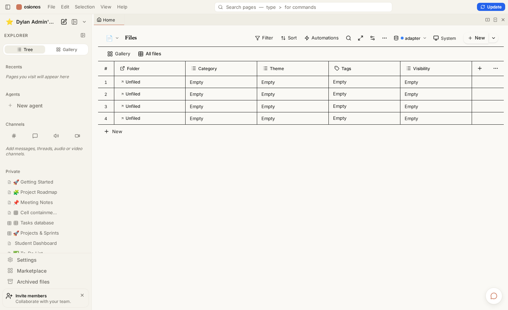
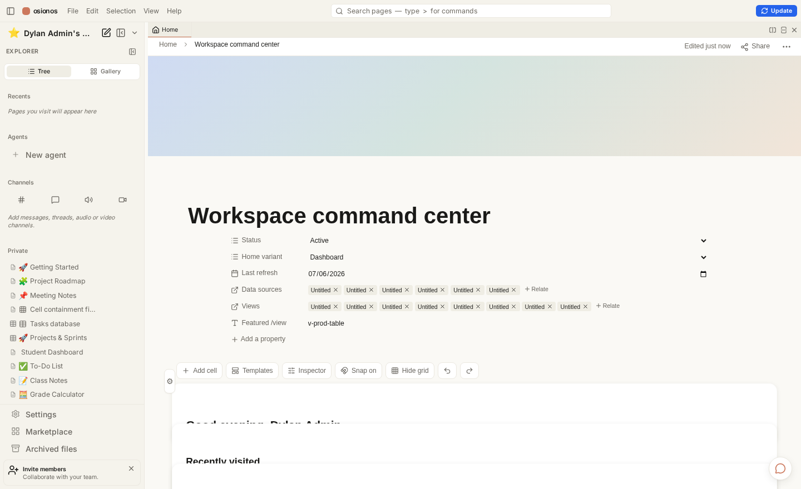
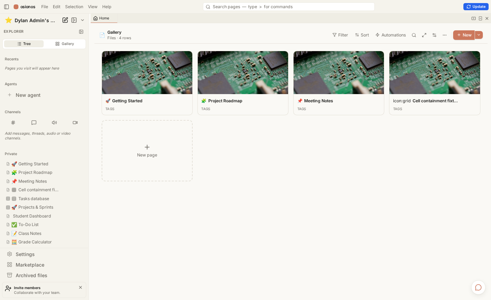
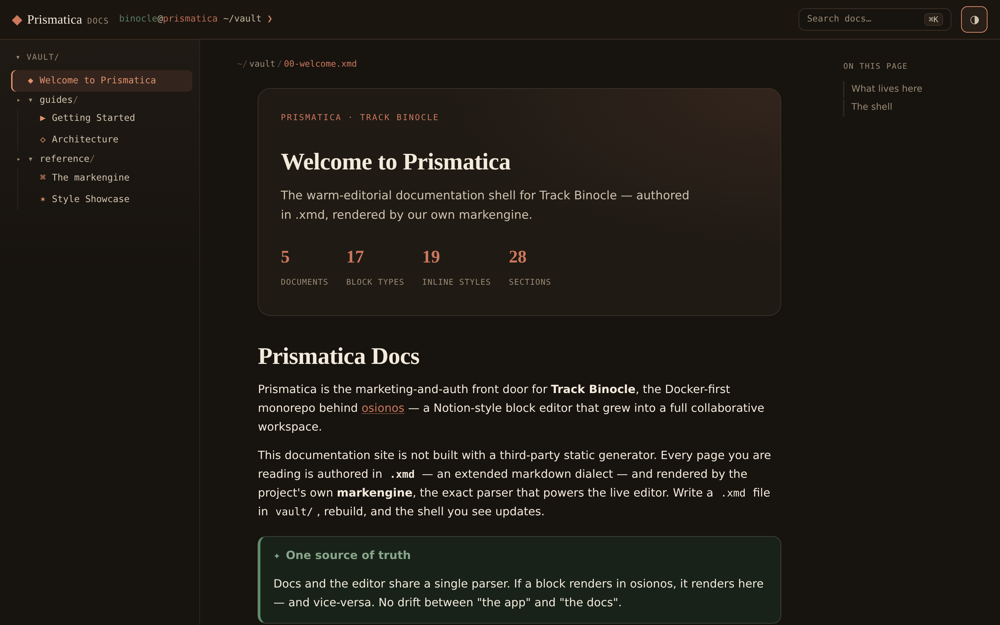

The warm-editorial documentation shell for Track Binocle — authored in .xmd, rendered by our own markengine.
159documents
17block types
19inline styles
621sections
Prismatica Docs
Prismatica is the marketing-and-auth front door for Track Binocle, the Docker-first monorepo behind osionos — a Notion-style block editor that grew into a full collaborative workspace.
This documentation site is not built with a third-party static generator. Every page you are reading is authored in .xmd — an extended markdown dialect — and rendered by the project's own markengine, the exact parser that powers the live editor. Write a .xmd file in vault/, rebuild, and the shell you see updates.
osionos in action — the Notion-style block editor grew into a full workspace: a page tree, channels, agents, and a live-database home, all in a VSCode-style shell.
One source of truth
Docs and the editor share a single parser. If a block renders in osionos, it renders here — and vice-versa. No drift between "the app" and "the docs".
What lives here
Guides — get the stack running and understand how the three planes fit together.
Reference — the markengine itself, and a full style showcase that exercises every block and inline type the engine understands.
The shell
Navigation is keyboard-first. The sidebar is a live listing of vault/, the breadcrumb is a shell pwd, and the whole thing is one self-contained page — so switching docs is instant, with zero network round-trips.
Press ⌘K (or Ctrl K) to open the command palette.
Press / to focus search.
Use j / k (or the arrows) to move between docs.
Everything below is real, running documentation — start with Getting Started.
Getting Started
The entire development environment runs in containers. Never install dependencies on the host — the toolchain is Docker-only by design.
One command
make all is self-provisioning. From a clean clone it syncs submodules, pulls secrets, regenerates TLS certs, starts the grobase backend, restores demo data if the databases are empty, and builds the frontends with health validation.
# On a machine that holds the vault key, this reconstitutes everything:
make all
# Start the backend by hand only for a non-default edition:
make -C apps/grobase up EDITION=full
Two modes, one command
With the vault key, make all restores the shared secrets and demo data for team parity. Without it, the stack comes up fully local — grobase self-generates its secrets and the app derives its own env. A box with only Docker + git + the clone still boots.
The front doors
Once the stack is healthy, these are the surfaces you can open:
App
Tech
URL
Purpose
opposite-osiris
Astro
:4322
Marketing site + auth landing
osionos
React + Vite
:3001
Block editor / workspace
auth-gateway
Go
:8787
Authentication & sessions
livekit
WebRTC SFU
:7880
Self-hosted media for video rooms
Health checks
make healthcheck # curls every front door + the BaaS /health
docker compose ps # service status
docker compose logs -f osionos-app
Editing these docs
Add or edit a .xmd file under apps/opposite-osiris/vault/.
Rebuild the doc shell.
Reload — the sidebar and content reflect your change.
Next: how the three language planes fit together → Architecture.
Architecture
Track Binocle follows a three-language plane pattern. Each plane owns a concern and speaks a language chosen for it.
The three planes
Application Plane — TypeScript
The React frontend (osionos), the Astro website (opposite-osiris, this site), bridging services, and the Mail & Calendar apps. Everything a user touches.
Control Plane — Go
Provisioning, the auth gateway, tenancy & secrets, metering and billing. The plane that decides who can do what.
Data Plane — Rust
High-performance query execution, DB drivers, transaction handling, and realtime event routing. The plane that moves bytes fast.
Shadow → parity → cutover
Major changes never flip a switch. New code runs in parallel with the old, validation precedes any cutover, and deletion is always last.
Shadow — the new path runs alongside the old, serving no real traffic yet.
Parity — identical requests return identical results through both paths.
Cutover — only once parity holds and CI is green does the new path take over.
Deletion gates are safety-critical
Legacy data-plane code is never removed until live traffic, shadow parity, and a green CI with forward routing all pass. If any gate is UNKNOWN, it counts as FAIL — keep shadowing.
Topology at a glance
The root compose stack is frontends-only. It joins a standalone backend — grobase — over an external Docker network, reaching it by container-name DNS.
osionos never talks to the BaaS directly. A Node bridge holds the service-role key and proxies data requests — the trust boundary lives in one place, not scattered across the client.
Read the engine that renders this page next → The markengine.
The markengine
The markengine is a standalone markdown library that lives inside the osionos app. It is framework-agnostic at its core: the parser, the AST, and the HTML and terminal renderers have zero external dependencies. Only the React renderer needs React.
The pipeline
import { parse, renderHtml } from "@/shared/lib/markengine/markdown";
const ast = parse("# Hello\n\nSome **bold** text.");
const html = renderHtml(ast);
Three phases, no coupling between them:
Parser — a markdown string becomes an AST (BlockNode[]).
Renderers — the AST becomes an HTML string, React elements, or ANSI.
Shortcuts — block detection for the Notion-style block editor.
Why this matters for docs
Because parse and renderHtml are pure Node functions with no DOM and no React, a build script can run them ahead of time. That is exactly how this shell turns vault/*.xmd into static HTML — no browser, no runtime engine.
What .xmd adds
.xmd is not a new format — it is plain markengine markdown with a name that signals "render me with the real engine, not a generic parser." Two extras matter for documentation:
Raw HTML blocks pass through. A bare <figure>, <iframe>, or now a <video> / <audio> / <img> / <picture> line renders as-is.
Rich inline styles — highlight, underline, text/background colour, callouts, toggles, footnotes, and math — go beyond CommonMark.
Raw HTML is trusted here, not everywhere
Passthrough is unsanitised. That is fine for a docs vault the maintainers author. In the multi-user editor the same tags are content you should treat as untrusted — the engine exposes a sanitizeHtml option for that path.
The AST is the contract
Every renderer consumes the same BlockNode / InlineNode union. Add a block to the AST and every renderer must learn it — which keeps HTML, React, and terminal output in lockstep.
This page deliberately uses every block and inline construct the markengine supports, and combines them, so the shell's styling is proven against the real engine output.
Headings
Heading level 1
Heading level 2
Heading level 3
Heading level 4
Heading level 5
Heading level 6
Inline text styles
Plain text, then bold, italic, and bold italic together. GFM strikethrough still works. In this engine __double underscores__ mean underline, not bold — a deliberate divergence from CommonMark. You can also use the tag forms: bold, italic, underline, strike, and a marked highlight. The ==equals== form also highlights.
Inline code sits mid-sentence, and the rich form keeps nested styles. Colour is available too: terracotta text and a warm highlight background. Styles nest — bold with coloured italics inside.
A hard line break comes from two trailing spaces: …and this sentence sits on the next line.
Emoji shortcodes render inline: ⚠️ ✅ 😄 👋
Links, footnotes, mentions
A regular link, a titled link, and a claim that needs a source.[src] Internal page mentions look like getting-started — with no resolver they fall back to the raw id, which is itself a useful edge case to see.
src
This is the footnote definition. Footnotes collect at the point they are defined.
Blockquote
A blockquote holds formatted text and can span multiple lines. It is the base of the callout and toggle constructs below.
Callouts
Callouts are > [!kind] title blocks. The engine passes the kind straight through as a class, so the shell can theme any of them:
Note
Neutral information the reader should not miss.
Tip
A shortcut or better way to do something.
Info
Context that supports the surrounding text.
Warning
Proceed carefully — this can bite.
Error
Something is wrong and needs fixing.
Success
The happy path completed.
Example
A worked illustration.
FAQ
A question people actually ask.
Todo
Still to be done.
Toggles
Click to expand this toggle
Hidden content lives here. It can hold formatting, code, and even lists:
Math is emitted as raw TeX. Rendering it to typeset math needs a client-side library (KaTeX/MathJax); the shell shows the source, styled, until then.
Raw HTML and media
The engine now passes media tags straight through. Here an inline <svg> renders self-contained — no external asset:
An inline SVG, passed through untouched as a raw HTML block.
Bare <video> and <audio> tags also survive parsing (they render empty players here because no asset is attached — real assets arrive with the screenshots):
Thematic break
Content above the rule.
Content below the rule.
Definition lists — a documented gap
The AST has a definition_list node, but there is no markdown syntax that produces it — it can only be constructed programmatically. So a term: def written here is just a paragraph. This is exactly the kind of edge case this page exists to surface. 💡
A Visual Tour
These are screenshots of the actual running application, not mockups. Each one is a real surface you reach after signing in through Prismatica.
The workspace
osionos opens as a VSCode-style shell: a page explorer on the left, channels and agents below it, and a tabbed, splittable editor grid in the centre. Everything — a note, a database, a chat channel, a profile — opens as a tab.
The workspace home — a live-database "command centre" page with a real page tree alongside it.
One shell, every surface
The same window hosts documents, databases, chat, video rooms, and the tenant console. No context-switch between apps — it is all panes in one grid.
The Second Brain graph
Every note and database row becomes a node in a force-directed graph, rendered on Canvas2D with a Web-Worker layout. It stays smooth into the hundreds of thousands of nodes — semantic-zoom swaps dots for icons for cards as you zoom, and a console filters by node kind and database.
The Second Brain graph — icon-level detail on a live force layout, with a console to scope and filter by database. Zoom out and it collapses to cluster blobs; zoom in and cards appear.
Live databases
Point osionos at a real database (Postgres, MySQL, Mongo, and more) and it renders the tables as Notion-style views — grid, board, and dashboards — writing straight back through the bridge.

A live database as a Notion grid — virtualized, sortable, editable, backed by the real engine.
Dashboards
Every view can become a dashboard widget: charts, counters, and maps composed on a canvas, with the numbers computed server-side across all rows.

A dashboard home — widgets are views, aggregated server-side for a live, honest total.
The editor grid
Panes split horizontally and vertically; only the focused pane mounts the live editor, so a wall of open panes stays fast.

The splittable editor grid — a tab/pane tree, not a router.
The front door
Prismatica — the marketing-and-auth website — in its warm-editorial theme.
The Prismatica website, warm-editorial theme — the auth landing that hands you off to the workspace.
This docs shell
And the site you are reading — light and dark, both authored in .xmd.

This documentation shell in its dark "noir" theme — every doc is a `.xmd` file in vault/.
Track Binocle is Docker-first. Almost everything you need lives inside containers, so the host stays lean: no language toolchains, no node_modules, no database servers to install by hand.
What the host actually needs
Requirement
Why
Docker Engine + Compose v2
Every service — frontends and backend — runs in containers.
git
The repo uses submodules; you clone recursively.
openssl
The no-vault path self-generates secrets on the host with it.
make
The root Makefile is the entry point for every lifecycle command.
Do not install Node, npm, or pnpm on the host
Host node_modules break the container volumes, and the app's npm scripts detect host execution and proxy back into Docker anyway. Installing a toolchain locally only creates drift. See Docker-First Development.
Clone and run
# Submodules matter — clone recursively.
git clone --recursive <repo-url>
cd ft_transcendence
# One command reconstitutes the whole stack.
make all
That single command is self-provisioning — it starts the backend, restores demo data, and builds the frontends. See The make all pipeline.
The one optional secret
Everything above gets a machine running on its own. Sharing the team's secrets and demo data additionally needs the vault key — the one secret that lives in neither git nor the vault itself.
Fresh-machine prerequisite
Copy your ~/.config/42ctl/ directory (the keystore and its contract token) onto the new machine once, before the first make all. Without it the stack still boots — grobase just self-generates its own secrets locally. Both paths are described in The two make all modes.
First-run checklist
Docker + Compose v2 installed and the daemon running
Repo cloned with --recursive
(Optional) ~/.config/42ctl/ copied over for shared secrets
make all run to completion
make healthcheck reports the front doors green — see Health Checks
Why "recursive"?
Several apps (the osionos editor, this website, mail, calendar, grobase) are git submodules. A plain clone leaves those directories empty; --recursive populates them. make all also runs a best-effort submodule sync, so a missed flag is recoverable.
The make all Pipeline
make all is the headline command. From a clean clone it reconstitutes the whole stack — backend, data, and frontends — with no manual sequencing. make all-local is a kept alias that runs the identical recipe.
make all
The stages, in order
The recipe runs these steps front to back. Each one is a no-op when its work is already done, so re-running make all is safe and cheap.
sync-submodules-soft — best-effort, fast-forward-only submodule sync. Never blocks the pipeline; skip it with SKIP_SYNC=1.
secrets-ensure — pulls the shared *.env tree from the vault when apps/grobase/.env is absent and a vault key is present.
certs — regenerates the local TLS certificates (delegated to grobase).
certs-trust-local — trusts the local CA in the system and browser stores.
backend-up — starts the grobase backend if it is down.
restore-if-empty — loads the demo-data snapshot only if the databases are confirmed empty.
frontends-up — builds and starts the frontend services with health validation.
healthcheck → showcase — verifies the front doors and prints the local URLs.
backend-up is no longer just a guard
Historically it only checked that grobase was running. Now it actually starts grobase (default edition migrate) when the backend network is absent, and short-circuits to nothing when the backend is already up. So a clean clone plus make all brings up everything.
Two ways it can run
Situation
What happens
Vault key present
Shared secrets + demo data restored — team parity.
When there is no root .env.local, an env-local-ensure step derives it from grobase's just-generated .env — copying the BaaS keys (they must match grobase's random secret) rather than inventing new ones. That is what lets a box with only Docker + git + the clone come up with no vault access.
Related entry points
make bootstrap — a thin alias for this same self-provisioning flow.
make -C apps/grobase up EDITION=full — start the backend by hand for a non-default edition.
Re-run freely
Because every stage is idempotent and restore-if-empty never overwrites a populated database, running make all again after a change is the normal way to get back to a known-good stack.
Docker-First Development
The entire development environment runs in containers. This is not a preference — it is a constraint the tooling actively enforces.
Never install dependencies on the host
No local Node, npm, or pnpm. No host node_modules — they break the container volumes. Many app npm scripts detect host execution and proxy the command back into Docker for you.
Do / don't
Run commands through make and docker compose
Shell into a running service: docker compose exec <service> bash
Let the containers own the dependencies
npm install on your laptop
Point an app at a host-installed Postgres or Redis
Add an install-time lifecycle hook
Supply chain is locked down
Dependency installs are deliberately constrained so a compromised package can't run arbitrary code at install time.
App type
Install discipline
npm apps
Frozen lockfiles, npm ci --ignore-scripts
pnpm apps
minimum-release-age + an onlyBuiltDependencies allowlist
Don't add install-time lifecycle hooks
Postinstall/preinstall scripts are exactly what the --ignore-scripts and allowlist policies exist to neutralize. Adding one will either be ignored or fail the supply-chain gate.
Working inside a container
docker compose ps # what's running
docker compose logs -f osionos-app # follow one service
docker compose exec osionos-app bash # a shell inside it
The trade you make is a slightly heavier first build in exchange for a machine that reproduces the team's environment exactly — the same reason a fresh clone plus make all works identically on any box.
Next, the command that ties all of this together → The root Makefile.
The Root Makefile
All lifecycle goes through the root Makefile. It is the authority: a thin coordinator that includes a tree of fragments under infrastructure/makes/, each owning one slice of the workflow.
One entry point, on purpose
The Makefile names services explicitly and joins the right networks and profiles. Driving the stack with raw docker compose up skips that wiring and can silently start the wrong subset — see the profile gotcha in Compose Profiles.
Load the deterministic live-database demo dataset.
make pulls / make pushes
Fetch / push submodules.
make update_web
Rebuild + hard-reload the osionos editor after edits.
Where the backend targets live
Editions, environment sanity checks, and other backend shapes are grobase targets — run them from apps/grobase/, not the root:
make -C apps/grobase up EDITION=query # a specific edition
make -C apps/grobase editions # list the known-good shapes
make -C apps/grobase doctor # environment sanity check
A few old secret-management targets now just print "this lives in grobase", and a couple of lean-edition targets have drifted since services moved to the grobase stack. When a target errors with no such service, check Common Failure Modes before assuming your setup is broken.
The rule of thumb: if you're about to type docker compose by hand, first check whether a make target already does it — it almost always does, and it does it with the correct profiles and networks.
Health Checks & Quick Curls
Once make all finishes, a few commands tell you whether every front door is actually answering.
The two health targets
make healthcheck # curls each front door + the BaaS health route
make check_health_apps # UP/DOWN matrix per app, localhost AND production
make healthcheck probes the BaaS auth health route, the bridge, osionos, the website (following the HTTP→HTTPS redirect), and the auth gateway's availability endpoint.
make check_health_apps produces a per-app UP/DOWN table across both localhost and the deployed production URLs.
Poking a single surface
The local TLS certificates are self-signed by a local CA, so pass that CA to curl:
make check_health_apps also probes the deployed frontends and backend. Those live independently of your local Docker stack; a red production row doesn't mean your local run is broken. If something local is down, head to Common Failure Modes.
Compose Profiles
Compose profiles carve the service graph into logical subsets. A profile lets you bring up a coherent slice of the stack instead of every container at once.
The dev profile is the default (set in the make fragments), and it is the one that includes the frontend surfaces you develop against.
The profile gotcha
COMPOSE_PROFILES defaults to dev. If you run a manualdocker compose upwithout it, most frontends are silently skipped — nothing errors, they just never start. The Makefile avoids this by naming services explicitly, which is one more reason to drive the stack through make rather than compose directly.
Profiles you'll meet
Profile
Brings up
dev
The default frontend development set.
secrets
The Vault container path (used by the real vault-up flow).
Profiles vs editions — what's the difference?
A profile is a raw compose-level tag on a set of services. An edition is a named, known-good shape that combines profiles, storage engines, and isolation models into something guaranteed to come up green. Editions are a grobase concept — see Grobase Editions. Profiles are the lower-level primitive editions are built from.
Rule of thumb
Use make targets for normal work — they set the profile for you.
Reach for COMPOSE_PROFILES=… docker compose … only when you deliberately want a narrow slice, and always set the profile explicitly.
If a service you expected is missing, the first thing to check is whether the active profile includes it: docker compose config --services.
Grobase Editions Overview
The backend — grobase — can be brought up in several editions. An edition is a named, known-good shape that bundles compose profiles, storage engines, and isolation models into a combination guaranteed to come up green.
Editions are grobase targets
Run them from apps/grobase/, not from the repo root.
# From apps/grobase/
make editions # list the known-good shapes
make up EDITION=query # start a specific one
make doctor # environment sanity check
The shapes
Edition
What it's for
lean
The smallest useful backend.
query
Query-focused shape.
realtime
Realtime event routing to the fore.
analytics
Analytics-oriented set.
prod
A production-like shape.
full
Everything on — deliberately excludes the playground plane.
tetris
Maximal shape for the red-tetris game.
migrate
The fresh-machine default that make all uses.
Why migrate is the default
make all uses migrate via GROBASE_EDITION. It brings up all snapshot storage engines plus the full app / control / data planes and realtime — but deliberately leaves out the monitoring and lakehouse extras that tend to come up unhealthy in a constrained environment. The result is a stack that is fully green out of the box.
# Override the edition make all boots:
make all GROBASE_EDITION=full
Some engines stay out by design
A private-vendor engine is excluded from the default shape because its images aren't public. The five snapshot engines that ship with the demo data are the ones the default edition covers.
Picking an edition
Day-to-day frontend work → the default migrate (just run make all).
Investigating a query or realtime path → the matching focused edition.
Want everything, including the extras → full.
Not sure the environment is sane → run make doctor first.
Shared secrets are managed through the vault42 tooling. There is exactly one piece that lives in neither git nor the vault itself: the vault key on your machine.
The keystore is yours to carry
The vault key (~/.config/42ctl/keystore.v42, alongside its contract token) is the bootstrap secret. Copy the whole ~/.config/42ctl/ directory onto a new machine once, before the first make all. It is never committed and never stored in the vault — that would defeat the point.
How secrets reach the stack
make all runs secrets-ensure early in the pipeline.
If apps/grobase/.env is missing and a vault key is present, it pulls the shared *.env tree from vault42.
The frontends then derive their own env from the backend's secrets.
If there is no vault key, the pipeline doesn't stop — grobase self-generates its secrets and the root env is derived locally. See The two make all modes.
Pull vs push
Direction
Who runs it
Pull shared secrets down
Automated inside make all.
Push secrets up to the vault
A human, deliberately.
Pushing secrets is a human-only action
The push path is treated as data-exfiltration-sensitive and is intentionally not something an agent runs. Rotating or publishing secrets is a deliberate, human-triggered step.
What's dormant without the shared secrets
Core login and editing — work fully local
The live-database demo (needs a provisioned app key)
Certain org-simulation permission sets
Those stay inert until their own seed steps run with the real secrets.
Legacy secret targets are stubs
The old root vault-*, db-password-*, and env-* make targets now just point you at grobase — the live path is the vault42 tooling described above.[stub]
stub
Secret management moved into the grobase repo when the backend was
extracted; the root stubs remain only to redirect old muscle memory.
Never print a secret's value in a log, a commit, or a doc — names and set/unset status only.
Restoring Demo Data
A clean stack is an empty stack. make all can populate it from a snapshot — but it does so only when it is certain the databases are empty.
The fail-safe restore
The restore-if-empty step is deliberately conservative:
It never wipes a populated stack
The snapshot loads only when every running primary engine (postgres, mysql, mongo) is confirmed empty. Any existing data — or any uncertainty at all, such as an unreachable engine or a query error — results in a SKIP, not an overwrite.
Because the backend starts detached, the step also waits for Docker health before probing, so it doesn't race the engines while they're still booting.
What the snapshot covers
The demo snapshot spans the stack's primary storage engines. Tooling to capture and load it lives with the backend:
Script
Purpose
apps/grobase/data-snapshots/snapshot-databases.sh
Capture a fresh snapshot.
apps/grobase/data-snapshots/restore-databases.sh
Restore from the snapshot.
Re-snapshot before you migrate
If you're moving a machine and want the latest data on the new box, capture a fresh snapshot first, then commit it — otherwise the new machine restores whatever was last committed.
The live-database demo
Separate from the empty-restore path, there's a deterministic demo dataset:
make seed-live-demo
It generates a large, deterministic commerce + operations dataset (fixed PRNG seed) and is idempotent — safe to re-run.
RESEED=1 make seed-live-demo wipes first, then regenerates.
It rebuilds osionos with the BaaS environment baked in so the editor can read the live data.
Empty-restore vs seed-live-demo
restore-if-empty loads a captured snapshot only into an empty stack — it's about reconstituting a machine. seed-live-demo generates a fresh synthetic dataset on demand — it's about demonstrating the live-database features. They serve different jobs; you rarely need both at once.
If a restore is skipped when you expected data, the cause is almost always that the databases weren't actually empty — check Common Failure Modes.
Rebuilding a Single Frontend
When you've edited one app, you don't need to re-run the whole pipeline. Rebuild just that service.
The general form
docker compose up -d --build <service-name>
This rebuilds and restarts a single frontend in place while the rest of the stack keeps running.
The frontend services
make all builds this set of root frontends:
Service
App
osionos-app
The React block editor.
osionos-bridge
Workspace persistence layer.
auth-gateway
Go authentication & sessions.
opposite-osiris-web
The Astro website (this docs shell).
local-https-proxy
The TLS front door.
livekit
The media server.
The osionos shortcut
For the editor specifically there's a dedicated target that rebuilds and hard-reloads it:
make update_web # rebuild + restart osionos-app, then hard-reload :3001
Avoid a restart-time 502
Rebuilding a service can briefly break the container-name DNS its neighbours rely on, surfacing as a transient 502. Rebuilding only the target service (rather than pulling its dependencies with it) keeps the blast radius small and the blip short.
After a rebuild
docker compose ps shows the service healthy again
Reload the app's URL (a hard reload for the editor)
make healthcheck if you want the full green-light — see Health Checks
The in-app Update button
The osionos editor exposes an Update control that triggers a rebuild through a small host-side daemon. It's the same idea as make update_web, driven from inside the running app instead of the terminal.
For a full stack rebuild instead of a single service, just re-run make all — it's idempotent.
Common Failure Modes & Fixes
Most first-run problems fall into a handful of buckets. Here's how to recognize and resolve them.
Symptom → cause → fix
Symptom
Likely cause
Fix
Backend won't start on a fresh box
No apps/grobase/.env and no vault key
Copy ~/.config/42ctl/ over, then re-run make all; or start it by hand.
A make target fails with no such service
A stale lean/site target referencing an extracted service
Use make all / the current targets instead; the lean edition is known-stale.
Most frontends never start
Manual docker compose up without the dev profile
Use make (it names services), or set COMPOSE_PROFILES=dev.
Browser distrusts the local HTTPS
Local CA not trusted in your store
make certs-trust-local.
A Postgres password mismatch
Password now lives in grobase, root targets are stubs
Manage it in the grobase stack, not the root.
Backend won't start
# Start the backend by hand:
make -C apps/grobase up
Fresh machine, no vault key
On a brand-new box the backend step stops if apps/grobase/.env is absent and there is no vault key. Copy ~/.config/42ctl/ over first, then re-run — or accept the fully-local path, which self-generates secrets. See The two make all modes.
Certificates
Certs are regenerated (via grobase) on every make all — that's intentional. If a browser complains:
make certs-trust-local # trusts the local CA in the system + browser stores
Known-stale targets
A couple of legacy targets have drifted
Some lean-edition and standalone-site targets reference services that moved into the grobase stack, so they error with no such service. They aren't part of the mainline make all flow — reach for the current targets in The root Makefile instead.
When a restore didn't happen
If demo data didn't load, it's almost certainly because the databases weren't confirmed empty — the restore is fail-safe by design and skips on any uncertainty. Details in Restoring Demo Data.
Host port already in use
If a host port a frontend wants is taken, stop whatever holds it (or stop the stack with docker compose down and restart). Because the ports are published by the proxy and a few service blocks, a conflict shows up as that one service failing to bind, not the whole stack.
The Two make all Modes
make all is one command with two behaviours, decided entirely by whether the machine holds the vault key.
Side by side
With the vault key
Without it
Secrets
Shared team secrets pulled from the vault
grobase self-generates them
Root env
From the shared *.env tree
Derived locally from grobase's .env
Demo data
Shared snapshot restored
Empty until you seed it yourself
Outcome
Team parity
Fully local, self-contained
With the key — team parity
The machine pulls the shared secrets and restores the shared demo data, so it matches everyone else's environment. This is the path for a teammate who has copied ~/.config/42ctl/ across.
Without the key — fully local
A box with only Docker + git + the clone still boots
No vault access needed. grobase generates its own random secrets, and the root .env.local is derived from those — the BaaS keys are copied (they must match grobase's random secret) rather than invented. Core login and editing work out of the box.
The one host requirement for this path is openssl, which grobase's own secret-generation already uses.
What stays dormant locally
Core login
Document editing
The live-database demo (needs a provisioned app key)
Certain org-simulation permission sets
Those wake up only when their own seed steps run with real secrets.
How the local env is derived
When there's no root .env.local, an env-local-ensure step runs after the backend starts. It reads grobase's freshly generated .env, copies the BaaS keys that must match, mints the handful of app secrets it needs locally, and leaves optional cloud keys empty. That's the whole trick behind "works with no vault access."
This documentation site is not a third-party static generator. Every page is authored in .xmd and rendered by the project's own markengine — the same parser that powers the live osionos editor. Write a file, rebuild, reload.
One parser, no drift
Because the docs and the editor share a parser, a block that renders in the app renders here too. There's no separate "docs markdown" to keep in sync.
The loop
Add or edit a .xmd file under apps/opposite-osiris/vault/.
Rebuild the doc shell (a build script assembles vault/ into the page).
Reload — the sidebar and content reflect your change.
Filenames are kebab-case, and the folder structure under vault/ becomes the navigation tree.
Every page needs frontmatter
---
title: Human Readable Title
icon: ◆
order: 12
summary: One sentence describing the doc, shown in lists and the hero.
---
Field
Role
title
Shown in the nav tree and breadcrumb.
icon
One glyph (a unicode symbol, not an emoji).
order
Integer sort within the folder — lower first.
summary
One plain sentence for listings.
Space your order values
Leave gaps (10, 20, 30…) so you can slot a new page between two existing ones later without renumbering the whole folder.
Linking between pages
Use a normal link with the target's path, relative to your file:
[Getting Started](../guides/getting-started.xmd)
Before you commit
Frontmatter present and complete
Filename is kebab-case
order doesn't collide with a sibling
Rebuilt and reloaded — it renders as expected
What tooling lives here
The website ships a build script that turns vault/*.xmd into the self-contained shell, plus a verifier that sanity-checks the vault. You don't call the parser directly — you write .xmd, run the build, and read the result.
Track Binocle is a Docker-first monorepo that deliberately spans three languages. Each language owns a plane — a horizontal slice of the system with one clear responsibility. The rule of thumb: pick the language that best fits the concern, not the concern that best fits one language.
One concern, one plane, one language
A plane is not a service — it is a responsibility boundary. Many services can live in the same plane, but a service never straddles two.
The Data Plane — query execution, DB drivers, realtime routing.
Why three languages, not one
Right tool, right layer
TypeScript shares types across editor and website and moves fast on UI. Go is boring, safe, and great at concurrent request handling for the plane that gates access. Rust gives predictable, low-latency data movement with no garbage-collection pauses on the hot path.
TypeScript (application) — the React block editor osionos, the Astro marketing-and-auth site opposite-osiris, the bridging services, and the Mail & Calendar apps.
Go (control) — provisioning, the auth gateway, tenancy & secrets, metering and billing.
The application plane runs as the frontends-only root compose stack. The control and data planes live together inside grobase, a standalone backend-as-a-service the frontends reach over an external Docker network.
┌───────────────────────────────────────────┐
│ Application plane (TypeScript) │
│ osionos · opposite-osiris · bridges │ root docker-compose.yml
└───────────────────┬───────────────────────┘
│ container-name DNS
┌───────────────────▼───────────────────────┐
│ grobase BaaS (Kong front door) │
│ ├─ Control plane (Go) │
│ └─ Data plane (Rust) │ separate docker project
└───────────────────────────────────────────┘
The discipline that ties them together
Every major change across the planes follows one rule: shadow → parity → cutover. New code runs in parallel with the old, validation proves they behave identically, and only then does the new path take over. Deletion is always the last step.
Read next
The shadow → parity → cutover discipline is what makes cross-plane changes safe. Start there once you understand the planes.
The Application Plane
The application plane is written in TypeScript and is everything a user actually touches. In the deployment topology it is the frontends-only root compose stack — nothing in this plane holds a database or a service-role secret on its own; it reaches the control and data planes through the grobase backend.
What lives here
Membership of the plane
The React frontend (osionos), the Astro website (opposite-osiris, the site you are reading now), the bridging services, and the Mail & Calendar apps.
App
Tech
Host port
Purpose
opposite-osiris
Astro
4322 (proxy)
Marketing website + auth landing
osionos
React + Vite
3001
Block editor / collaborative workspace
osionos-bridge
TypeScript
4000
Workspace persistence, website → editor
mail / mail-bridge
React / TS
3002 / 4100
Gmail OAuth integration
calendar / calendar-bridge
React / TS
3003 / 4200
Google Calendar OAuth
The compose service for the website is named opposite-osiris-web (it also publishes 4323 → 8080 directly for debugging).
osionos — the block editor
osionos is a React + Vite single-page app: a Notion-style block editor that grew into a full collaborative workspace. Its source uses a feature-sliced layout (app/ components/ data/ entities/ features/ pages/ services/ shared/ store/ types/ widgets/).
osionos is a submodule with hard rules
osionos lives in a nested submodule (apps/osionos/app) and branches from develop, never main. There is a convention of ≤200 lines and ≤5 functions per file — honour it in new code. See the directory map.
opposite-osiris — the website + auth landing
The Astro site is both marketing surface and the auth landing where a user signs in before being handed off to the editor. This documentation shell itself ships from opposite-osiris, rendered by the project's own markengine.
The bridges are part of this plane — but special
The *-bridge services are TypeScript, so they sit in the application plane, but they carry a trust boundary: osionos never talks to the BaaS directly. The bridge holds the service-role key and proxies data on the app's behalf.
Bridge is TypeScript → application plane
Bridge holds the privileged key → a trust boundary
Bridge is not the control plane — it does not decide policy, it forwards
Postgres, Kong, gotrue, postgrest, redis, and the realtime server are not application-plane services — they belong to grobase. The application plane only reaches them, by container-name DNS over an external network.
The Control Plane
The control plane is written in Go and decides who can do what. It is the plane that provisions tenants, authenticates callers, holds secrets, and meters usage. It lives inside the grobase backend, not in the root compose stack.
The control plane is grobase's Go half
The active Go control plane lives at apps/grobase/src/control-plane/ (Go module github.com/dlesieur/mini-baas/control-plane).
Responsibilities
Provisioning — creating and shaping tenants and their resources.
The auth gateway — authentication and session management.
Tenancy & secrets — isolating tenants and holding their credentials.
Metering & billing — measuring usage and turning it into charges.
How it is organised
The control plane is a large Go codebase — dozens of packages under internal/, each owning one concern. Named examples from the tree:
Package area
Concern
metering
usage measurement
backup
data backups
tenants
tenant lifecycle
provision
resource provisioning
webhooks
outbound event delivery
adapterregistry
which data-plane adapters exist
orgs / sso / scim / passkeys / audit
enterprise identity (Track-D)
branching / push
parity features (Track-E)
The auth gateway
The auth gateway is the one control-plane service that also runs as a root compose frontend (auth-gateway, host port 8787) — it fronts authentication and session management for the browser.
The gateway has no /health route
Do not probe /health on the auth gateway — it does not exist. Check availability at /api/auth/availability instead.
Tracks gate what the control plane exposes
Much of the control plane's surface is flag-gated OFF by default so the open-source edition stays byte-for-byte identical to the managed one:
Track E — parity: DB branching, push, read-replica.
Do not flip Track flags in shared runs
B / D / E are OFF by default for parity. Turning one on in a shared or parity run without a gate breaks the byte-parity guarantee. When unsure, leave it off.
The control plane sits above the data plane: it decides access, the data plane moves the bytes once access is granted.
The Data Plane
The data plane is written in Rust and does one thing: move bytes, fast and predictably. Once the control plane has decided a caller is allowed, the data plane executes the query, drives the database, and routes realtime events. It has no garbage-collection pauses on the hot path — that is the whole reason it is Rust.
What it owns
Query execution — running the request against the target engine.
Database drivers — talking each engine's wire protocol.
Realtime event routing — fanning changes out to subscribers.
Two Rust workspaces
Where the Rust lives
The query router is at apps/grobase/src/data-plane-router/. The realtime stack is a separate Cargo workspace under apps/grobase/infra/docker/services/realtime/realtime-agnostic/.
The realtime workspace is split into small crates, each a clean seam:
Crate group
Role
realtime-core / -engine / -server
the engine and its host
realtime-gateway / -auth / -client
edge, auth, and client
realtime-db-postgres / -mongodb
database change producers
realtime-bus-inprocess / -irc
pluggable EventBus backends
Capability-aware routing
The data plane is engine-agnostic by design: the same request can target different database engines, and the router forwards to the right adapter. The realtime workspace names its crate seams "-agnostic" for the same reason — Postgres and MongoDB are just two producers behind one engine.
request ──► data-plane-router (Rust)
│ capability check
┌───────────┼───────────┬───────────┐
▼ ▼ ▼ ▼
Postgres MySQL Mongo … other engines
Forward routing vs the legacy path
The data plane is the subject of the project's migration story. A legacy TypeScript data path is being replaced by the Rust router under the shadow → parity → cutover discipline.
The Rust path is gated, and the TypeScript path is not deleted lightly
Forward routing runs the Rust plane in product mode (DATA_PLANE_ROUTER_PRODUCT_MODE=enabled). The legacy TypeScript data-plane code is only removed once all three safety gates pass — see the migration safety gates.
Related reading
The realtime router is what carries a page edit to other viewers — trace it in the page-edit data flow.
Shadow → Parity → Cutover
Track Binocle never flips a switch on a major change. New code runs in parallel with the old, validation precedes any cutover, and deletion is always last. This is the single discipline that makes cross-plane changes safe.
The rule in one line
New code runs in parallel with old, validation precedes any cutover, deletion is always last.
The three phases
Shadow — the new path is built and runs alongside the old one, serving no real traffic yet. It can be exercised, instrumented, and compared.
Parity — identical requests are sent through both paths and their results are compared. Parity holds only when the outputs match.
Cutover — once parity holds and CI is green with the new routing, the new path takes over real traffic. The old path stays until deletion is safe.
┌─ Shadow ─┐ ┌─ Parity ─┐ ┌─ Cutover ─┐ ┌─ Delete ─┐
│ new runs │ │ identical│ │ new serves│ │ old code │
│ beside │──►│ results │──►│ real │──►│ removed │
│ old │ │ proven │ │ traffic │ │ (last) │
└──────────┘ └──────────┘ └───────────┘ └──────────┘
Why parity comes before cutover
Parity is not a formality — it is the evidence that the cutover is safe. Without a proven parity comparison, a cutover is a guess.
UNKNOWN counts as FAIL
A parity or gate result that is UNKNOWN is treated as FAIL, not as a maybe. If you cannot prove both paths agree, keep shadowing and instrumenting — do not cut over.
Where you see it
The data plane. The Rust query router shadows, then reaches parity with, the legacy TypeScript data path before any cutover. See the data plane.
The deletion gates. Removing legacy code is the very last step, gated on live traffic, shadow parity, and green CI — the migration safety gates.
Checklist for a major change
New path built and running in shadow (no real traffic)
Identical requests compared — parity proven, not assumed
CI green with the new routing enabled
Only then: cutover
Only after cutover is proven stable: delete the old path
Deletion is a reward, not a step
The best time to delete legacy code is after it has been unused and proven unnecessary — never before parity, never as the first move.
Frontends-Only Root Compose
The root docker-compose.yml is a frontends-only orchestrator. It defines the application-plane services and joins the standalone grobase backend over an external Docker network — it does not define the backend itself.
Two Docker projects, one stack
The frontends are one docker-compose project. grobase (project name mini-baas) is a separate docker project. They meet on a shared external network, not in one compose file.
What is — and is not — a root service
These are NOT root-compose services
Postgres, Kong, gotrue, postgrest, redis, pg-meta, vault, and mailpit are not defined in the root compose. They live in the grobase stack. The root stack only reaches them.
In the root compose
In grobase (external)
opposite-osiris-web (Astro)
Kong (front door, :8000)
osionos (React + Vite)
postgrest · gotrue · redis
osionos-bridge (TS)
postgres · pg-meta · vault
auth-gateway (Go)
realtime (Rust) · mailpit
mail / calendar (+ bridges)
local-https-proxy · livekit
The TLS front door
A single local-https-proxy service is the TLS front door. It publishes the 8 primary frontend host ports behind HTTPS. Two services publish their own ports instead of going through the proxy: livekit (media), and opposite-osiris-web (its debug 4323 → 8080).
The whole stack comes up from one command. make all is self-provisioning: from a clean clone it syncs submodules, ensures secrets, regenerates TLS certs, starts grobase, restores demo data when the databases are empty, then builds the frontends with health validation.
make all starts the backend if it is down
certs regenerate on every make all (intentional)
demo data restores only when engines are confirmed empty (never wipes)
Profile gotcha
COMPOSE_PROFILES defaults to dev. A manualdocker compose up without it silently skips most frontends. The Makefile names services explicitly, so make all is unaffected — but raw compose commands are a trap.
Two host-network simulations
Beyond the eight frontends, two host-network simulation services also exist: playground-simulation and agency-simulation. They are org/tenant simulations, not part of the primary user path.
The wiring itself
How the frontends address grobase — by container-name DNS — is its own topic: the container-DNS topology.
Container-DNS Topology
The frontends and grobase run as two separate Docker projects. They talk over a shared external Docker network using container-name DNS — one container finds another by its name, and Docker's embedded DNS resolves it. No hard-coded IPs, no host localhost between services.
The network
The external network is declared as mini-baas; its real Docker name is mini-baas_mini-baas. The root frontends attach to it so they can resolve grobase's containers by name.
The names the frontends use
All BaaS and auth traffic is addressed by container name:
Most traffic does not hit postgrest or gotrue directly — it goes through Kong at mini-baas-kong:8000, which gates and routes it. osionos consolidated on this single Kong backend on port :8000.
The localhost / IPv6 trap
Container-name DNS resolves cleanly inside the Docker network. The desktop (Electron) build is different: it runs on the host and reaches Kong over localhost — and there Chromium's net.fetch resolves localhost to IPv6 ::1, while mini-baas Kong is IPv4-only.
Desktop must use 127.0.0.1, not localhost
Because Kong is IPv4-only, the Electron target coerces localhost → 127.0.0.1 in main.js. In the browser osionos points VITE_BAAS_URL at http://127.0.0.1:8000. Using the literal localhost there yields a dead IPv6 connection.
Why container DNS and not fixed IPs
Portable — a container's IP changes between runs; its name does not.
Decoupled — the frontends do not need to know grobase's internal addressing.
Two-project friendly — the external network is the only contract between the frontends-only root compose and grobase.
The privileged hop
One frontend — the bridge — does more than address grobase by name: it holds the service-role key. See the bridge trust boundary.
The Node Bridge Trust Boundary
osionos never talks to the BaaS directly. A Node bridge — osionos-bridge, running on host port 4000 — sits between the editor and grobase. It holds the privileged service-role key and proxies data requests. The trust boundary lives in one place, not scattered across the browser client.
What the bridge is for
osionos-bridge provides workspace persistence between the website and the editor — it is the server-side custodian of the app's data path.
Why a bridge at all
If the browser held the service-role key, the key would be exposed to every user and every extension. The bridge keeps the secret server-side and only forwards requests it is willing to make.
Secret stays server-side (never shipped to the browser)
One trust boundary, one place to audit
The client sends intent; the bridge decides what actually hits the DB
How privileged calls are made
The bridge bypasses RLS deliberately
To persist page writes, the bridge sends the SERVICE_ROLE_KEY as both the apikey and the Authorization: Bearer header to postgrest, which bypasses Row-Level Security. This is exactly why the key must never leave the server — it is a full-access credential.
Browser (osionos)
│ page read/write intent (no service key here)
▼
osionos-bridge (Node) ── holds SERVICE_ROLE_KEY
│ apikey + Bearer = service role
▼
mini-baas-kong:8000 ──► postgrest ──► mini-baas-postgres
Bridge vs the direct client
osionos has two ways to reach the backend, and they are not the same trust level:
The bridge is application-plane, not control-plane
The bridge is TypeScript, so it belongs to the application plane. It is not the control plane: it does not decide policy or issue identities — it forwards data requests with a privileged key it is trusted to hold.
Trace a real write
To see the bridge in the middle of a live edit, follow the page-edit data flow.
Submodule & Nested-Repo Layout
Track Binocle looks like one monorepo but is stitched together from Git submodules. The root repo records each submodule's commit SHA; the actual code lives in its own repository. One member — grobase — goes further: it is a nested independent repo with its own remote and its own authoritative docs.
The workflow is always: commit inside the submodule, then the root records the new SHA. The root never holds the submodule's file contents — only a pointer.
grobase — a repo within the repo
grobase has its own everything
apps/grobase/ has its own .git (remote github.com/Univers42/grobase, branch main) and its own authoritative apps/grobase/CLAUDE.md. It is recorded in the root index as a gitlink and registered in .gitmodules.
Read grobase's own CLAUDE.md before substantial BaaS work — it is the source of truth for the backend's layout, flags, and gates.
Gotchas that look like breakage but aren't
Not everything untracked is broken
vendor/scripts and vendor/born2root often show as ?? in git status. That is benign untracked content inside a checked-out submodule — not a broken gitlink. Do not reflexively git submodule update --init.
apps/vite-gourmand is declared in .gitmodules but not checked out on disk — it is a separate product with its own rules.
Pulling and pushing across the boundary
make pulls — fetch the submodules
make pushes GIT_COMMIT_MESSAGE="…" — push submodules, then the root
Never expect a root commit alone to carry submodule file changes
For where these submodules sit among the non-submodule directories, see the monorepo directory map.
Monorepo Directory Map
A tour of the repository's top-level layout — enough to know where a thing lives without opening every folder. Only the non-obvious entries are called out.
the block editor (React + Vite submodule, branch from develop)
apps/opposite-osiris/
the Astro website + auth (this site)
apps/mail/ · apps/calendar/
Gmail / Calendar bridge submodules
apps/osionos-desktop/
Tauri desktop shell
apps/osionos-electron/
Electron desktop app
apps/baas.bak/
pre-extraction BaaS snapshot — untracked, large
apps/baas.bak/ is git-status noise
It is a large untracked directory that is not gitignored, so it shows as ?? apps/baas.bak/ on every git status. Do not commit it, and do not mistake it for a live source tree — the original apps/baas/ source is deleted.
Other top-level directories
models/ — root-app SQL migrations (calendar + mail bridges, GDPR / RLS hardening, and the osionos messenger + social suite). Idempotent, with RLS.
infrastructure/makes/ — the Makefile fragments the root Makefile includes.
scripts/ — root dev helpers (health checks, the rebuild-server daemon).
tools/seeds/ — seed helpers.
playground/datas/ — tracked sample datasets used by the live-DB demo/seeders.
dist-selfhost/ — a self-host scaffold.
vendor/ — side-project submodules (not part of the runtime stack).
wiki/ — a substantial human-authored doc set.
The authorities
Three files govern orchestration
docker-compose.yml — frontends-only topology + the external mini-baas network
docker-compose.local.yml — a lean overlay
Makefile — the root coordinator that includes infrastructure/makes/*.mk
The riskiest step in the whole shadow → parity → cutover discipline is deletion — removing the legacy path for good. Track Binocle guards it with three explicit gates. All three must pass. If any is UNKNOWN, it counts as FAIL.
The hard rule
Never delete legacy TypeScript data-plane code unless all three gates PASS. If gates are UNKNOWN or FAIL, keep shadowing and instrumenting.
The three gates
m18 — Live Traffic. Rust serves real traffic with DATA_PLANE_ROUTER_PRODUCT_MODE=enabled. The new path is not a lab demo; it is carrying production requests.
Shadow Parity. Identical requests return identical results through the TypeScript path and the Rust path. Divergence blocks deletion.
CI Green with Forward Routing. No regressions; the gates explicitly PASS with forward routing on.
Gate
Proves
If not met
Live Traffic (m18)
Rust handles real requests
keep shadowing
Shadow Parity
TS and Rust agree
keep instrumenting
CI Green (forward)
no regressions
do not cut over
Why deletion is last, not first
Deleting the old path before proving the new one is how you lose the only working implementation. The gates exist so that by the time legacy code is removed, it has already been unused, in production, and proven redundant.
Live traffic ─┐
Shadow parity ─┼─ all PASS ──► safe to delete legacy TS path
CI green ─┘
│
└─ any UNKNOWN / FAIL ──► keep shadowing, do not delete
UNKNOWN = FAIL
Absence of proof is not proof
A gate you did not run, or a comparison you cannot show, is UNKNOWN — and UNKNOWN is treated as FAIL. "It probably matches" is not a passing gate.
The pre-deletion checklist
Rust serving live traffic in product mode (m18)
Shadow parity: identical results, both paths, on real requests
CI green with forward routing — gates explicitly PASS
Only when all three are green: remove the legacy TypeScript data-plane code
These gates are the safety net under the data plane
They are what let the Rust data plane replace the legacy TypeScript path without ever risking a silent regression.
How osionos Reaches the BaaS — Bridge vs Kong
osionos reaches the grobase backend by two distinct routes, and confusing them is the source of many bugs. One goes through the server-side bridge; the other goes straight to Kong from the browser. They serve different purposes and carry different credentials.
The two routes side by side
Bridge route
Direct Kong route
Runs where
server (osionos-bridge, :4000)
browser client
Credential
SERVICE_ROLE_KEY
anon key + user session
Reaches
Kong → postgrest
Kong (:8000) → gotrue
Used for
workspace & page reads/writes
authentication
Trust
full-access (bypasses RLS)
user-scoped
Route 1 — the bridge (data)
Page loads and page writes go through the bridge, not the browser client. The bridge holds the service-role key, sends it as both apikey and Bearer to postgrest, and returns the data to osionos.
Page loads go through the bridge
The osionos schema is served by grobase's postgrest under /rest/v1/osionos_*. When you open a workspace, the bridge fans those reads out to Kong on your behalf. This is why VITE_BAAS_* client settings do not control page loading — that path is server-side.
Route 2 — direct to Kong (auth)
For authentication, the browser talks to Kong at port :8000, which gates /auth/v1/* (gotrue) with key-auth.
A call to /auth/v1/*without the anon key returns 401 "No API key found". Health probes and clients must send the key.
Kong rate-limits the bridge
Because the bridge is a single IP fanning out many /rest calls at once, Kong's per-IP rate limit can trip and return 429, which the bridge surfaces as a failed load. Opening a very large workspace is the classic trigger.
The takeaway
Data problems → look at the bridge → postgrest path, not VITE_BAAS_*.
Login problems → look at the browser → Kong → gotrue path and the anon key.
A single page edit exercises the bridge route end to end — trace it in the page-edit data flow.
Data Flow of a Page Edit
This page follows a single edit through all three planes: the application plane (the editor and the bridge), the control plane (Kong gating access), and the data plane (Postgres and realtime). It ties the whole architecture together in one concrete path.
The journey of one keystroke
You type. osionos updates its in-memory block model and serializes the affected page.
The client queues the write. osionos does not fire a request per keystroke — it batches writes to be sent to the bridge.
The bridge persists it.osionos-bridge (:4000) receives the write and, holding the service-role key, forwards it to postgrest through Kong.
Kong routes it.mini-baas-kong:8000 gates and forwards the request to postgrest.
Postgres stores it. postgrest writes the row into mini-baas-postgres under the osionos_* schema.
Realtime fans it out. A change notification propagates so other viewers of the page can update.
A write-per-keystroke storm is a real failure mode
Sending one request per keystroke floods the bridge and Kong. Because the bridge is a single IP, a burst can trip Kong's rate limit and return 429. The client batches writes and backs off on failure precisely to avoid this thundering herd.
The realtime hop
The last step — fanning the change out to other viewers — is the Rust data plane's realtime router. Postgres emits a change, a realtime producer picks it up, and subscribers receive it.
Payload size is bounded on the notify path
The database change-notification channel is size-capped. Large pages send an id-only signal rather than the full row, so subscribers fetch the fresh content instead of receiving an oversized payload.
Where each plane shows up
Step
Plane
Component
serialize + batch
application (TS)
osionos
persist with service key
application (TS)
osionos-bridge
gate + route
control
Kong
store
data
postgrest → Postgres
fan-out
data (Rust)
realtime router
Recap
The edit never leaves the browser with a service key — the bridge holds it.
Every write crosses Kong, the single front door.
The realtime hop is what makes the workspace collaborative.
osionos (npm name osionos-playground) is a Notion-style block editor that grew into a full collaborative workspace. It is a React 19 + Vite 6 + TypeScript app, served at https://localhost:3001, and it is one of the frontends of the Track Binocle monorepo.
Every piece of content on a page is a block: a paragraph, a heading, a callout, a table, an embedded database view. Blocks nest into a tree, and the same tree drives the editor, the read-only renderer, and the markdown you can round-trip out and back in.
More than a document editor
The editor is the centre of gravity, but the surfaces around it are real and sidebar-reachable — each opens as its own pane:
Surface
What it does
Documents
The block editor and the "Second Brain" force-graph
Databases
Notion-style DB views — grids, charts, maps, equations
Chat & DMs
Channels, direct messages, a feed, mentions
Video rooms
Self-hosted LiveKit rooms embedded in channels
BaaS console
API-key, usage, and plan management for the tenant
One backend, reached through a bridge
osionos never talks to the grobase BaaS directly. Page and workspace data flow through a Node bridge; realtime traffic uses a separate transport. The two are deliberately kept apart — see Offline-First Sync.
How "pages" open — no router
There is no react-router. Navigation is a VSCode-style tab and pane layout tree held in a zustand store. What renders inside a pane is decided by its tab.kind:
// widgets/page-renderer/ui/PaneContent.tsx — a guard chain, not a switch
if (tab.kind === 'home') return <HomeTabView />;
if (tab.kind === 'database') return <DatabaseView />;
if (tab.kind === 'channel') return <ChannelMessages />;
// …home / folder / trash / database / profile / console / channel
// default → an editable page (PageTabView)
Performance is a design constraint, not an afterthought
Surfaces are code-split with React.lazy using deep import paths, never widget barrels — importing a barrel would staple the whole editor onto the warm chunk.
Only the focused pane mounts the live editor. Unfocused splits render a cheap read-only preview instead.
A page is a tree of blocks. Each block has a type, its own content, and — if it is a container — a children array serialized as JSON. The type decides how the block renders, how Enter behaves inside it, and whether it can hold other blocks.
Two families
Blocks fall into two categories, defined in blockCategories.ts:
Leaf blocks — hold text or a payload, but not other blocks. Paragraphs, headings, code, tables, equations, media, and the embedded graph_view.
Container blocks — parentable, enterCreatesChild, and selfRendersChildren. They nest other blocks infinitely. Callouts and quotes are the canonical containers.
What "selfRendersChildren" buys you
A container renders its own children, so the read-only renderer must not also render them — doing both was a real double-render bug in callouts, since fixed. See Callouts & Citations.
The same block tree flows through two renderers, and both must understand every type:
BlockEditor.tsx — the editable path (what you type into).
ReadOnlyBlock.tsx — the read-only path (previews, unfocused panes, published views).
Add a type, teach both renderers
A new block type is defined in types.ts and blockCategories.ts, then rendered in bothBlockEditor.tsx and ReadOnlyBlock.tsx. Heavy blocks (like graph_view) also register in the defer-mount predicates so they don't load until they scroll into view.
Slash Commands
There are two ways to get a block: ask for it with a slash command, or let the text convert itself with a markdown shortcut. Both end at the same place — a typed node in the block tree.
The slash menu
Type / at the start of an empty line and a menu appears, filtered as you type. Each entry inserts a block of a given type. The command set lives in the slash-commands feature, with human labels in SLASH_DESCRIPTIONS.
/table → the block-editor grid, TableBlockEditor — see Tables.
/layout (and /canvas) → the freeform builder — see Canvas & Layout.
The embedded graph_view block ships and renders, but exposing it in the slash menu needs a source item entry, not just a description — so for now it arrives through the canvas showcase boards rather than a /graph command.
Markdown shortcuts — convert as you type
You don't have to open the menu. The typing parser (detectBlockType in shortcutsDetect.ts) watches the start of a line and transforms it in place:
You type
You get
# … ######
Heading 1–6
- / 1.
Bulleted / numbered list
[]
A to-do checkbox
>
A toggle
" or `\
`
A quote
#> or > #
A toggle carrying a heading level
>![kind] or > [!kind]
A callout of that kind
` ``
A code fence
Shortcuts nest inside containers
This is the subtle part. When you type a shortcut inside a callout or quote, applyMarkdownDetection (in usePlaygroundBlockEditor.ts) creates a child of the detected type — it does not convert the container away.
Why this rule exists
Typing #> in a callout title used to turn the whole callout into a toggle. Now it nests a toggle heading inside the callout instead. Children edited directly still convert in place.
Type / to open the menu
Type # to get a heading with no menu at all
Try > [!tip] to drop a tip callout in one keystroke run
The markengine in the Editor
The markengine (src/shared/lib/markengine/) is the bridge between markdown text and the block tree. The docs shell you are reading is rendered by it; the editor uses it for something more demanding — turning what you type or paste into live, editable blocks.
The AST is the contract. Markdown becomes BlockNode[], and every consumer — the typing shortcuts, the raw-mode importer, the read-only renderer — speaks that same shape.
Two parsers, on purpose
The editor deliberately runs two parsers, each tuned for a different moment:
detectBlockType (shortcutsDetect.ts) — the typing parser. Fast, line-oriented, forgiving. It reads > as a toggle and " / | as a quote, because that is what feels right mid-keystroke.
parseMarkdownToBlocks (markdown/shortcuts.ts → parse AST → astToBlocks) — the paste / raw-mode Save parser. A full CommonMark + GFM AST. Here > is a blockquote, toggles are > [>], and callouts are > [!kind].
The same > means two things
In the typing parser > starts a toggle; in the AST parser > is a quote. This is not a bug — it is the reason two parsers exist. Mixing them up is how round-trips lose block types. See Serialization.
How the editor imports it
The markengine has no package alias. It is pulled in through the generic @ → src alias:
import { parseMarkdownToBlocks } from "@/shared/lib/markengine";
Its core parser and renderers are pure Node functions with zero external dependencies, which is exactly why they can run in a build script, in a test, or in the browser without a DOM.
A quirk worth knowing
The markengine sub-tree is eslint-ignored by the app, yet all of lib/markengine still lives in the app's TypeScript compile graph — so a type error there can break the quality gate even though the linter never looks at it.
See it end to end
The exported functions are parseMarkdownToBlocks, parseInlineMarkdown, and detectBlockType. For the reverse direction — block tree back to markdown — read Serialization & Round-Trip.
Raw-Mode Split-Pane Editing
Raw mode (features/raw-mode) is a split-pane markdown-source editor. On one side you see the page's blocks; on the other you edit the plain-markdown source of those same blocks. It is the escape hatch for people who would rather type markdown than click through a slash menu.
The round-trip, both directions
blocks ──serialize──▶ markdown source (what you see in raw mode)
▲ │
└────── parse ◀────── you edit + Save
Blocks → source is done by pageMarkdownSerialize.ts, which emits the markdown dialect the AST parser understands.
Source → blocks is done by parseMarkdownToBlocks — the full CommonMark + GFM parser, not the typing parser.
Save uses the strict parser
Raw-mode Save and paste both go through parseMarkdownToBlocks, so the source you write is read as real CommonMark: > is a blockquote, > [>] is a toggle, > [!kind] is a callout. Typing shortcuts (detectBlockType) never touch the Save path.
What survives the trip
Round-trip fidelity in one glance
Preserved: block type and content for headings, lists, to-dos, code (with language), quotes, callouts, toggles, equations, and GFM tables.
Toggle heading level survives via the compact #{N}> opener.
Lost by design:collapsed (pure view state) and a heading level set on a quote or callout — there is no clean markdown form, so they degrade gracefully to plain type + content.
Typing > should feel like starting a toggle; pasting a document should read > as a quote the way every other markdown tool does. Raw mode sits firmly on the document side of that split, so it always uses the strict AST parser — never the keystroke heuristics.
Mental model
Raw mode is a view of the same tree, not a different document. Edit it, hit Save, and the reconciled blocks flow straight back into the page — and into the offline-first sync that persists them.
The /canvas & /layout Builder
The /layout (and /canvas) slash command inserts one layout block that behaves like a Figma-style canvas: free-positioned cells, drag to move, drag to resize, align and distribute across a selection. Each cell can hold ordinary blocks — so a canvas is a page inside a block.
Two engines behind one flag
The builder ships as a dual model, gated by the osio.canvas.v2 flag:
V1 (legacy)
V2 (current default)
Model
12-column grid + offset
Free pixel frames
File
LayoutBlockEditor.tsx
features/block-editor/ui/canvas/
Status
Kept for shadow → parity
Default on
Legacy is not deleted
V1 stays in place under the shadow → parity → cutover discipline. Migration between the two is lossless and bidirectional (model/migration.ts): blocks move by reference, free positions survive through the legacy offset.
The V2 render path
CanvasRoot ─▶ CanvasStage ─▶ CanvasCellView (memoized on cell identity)
│ │
canvasStore interactionStore (transient: guides, marquee)
(persisted) "cells never re-render during a drag"
canvasStore.ts — a vanilla zustand store, refcounted per layout block, with a debounced write.
interactionStore.ts — transient gesture state that keeps the cells still.
Performance guardrails — do not break these
The gesture path is sacred
During a drag the canvas writes CSS variables (--osio-cell-dx/dy/dw) on every animation frame and dispatches nothing until pointer-up. Cell editors lazy-mount through a shared IntersectionObserver; the graph background runs at a capped frame rate. Route new work around the pointer-down path.
In-place editing, not an inspector
Selecting cells raises a floating toolbar (CanvasSelectionToolbar) anchored to the selection — fill colour, z-order, multi-select align and distribute (alignOps.ts), duplicate, delete. Collision resolves by push-down, not a silent revert.
What it is used for
Beyond hand-built pages, /canvas powers live-data showcase boards — KPI tiles, charts, and a full-width graph_view band bound to real database mounts. A canvas is where the editor stops being a document and becomes a dashboard.
Callouts & Citations
Callouts and quotes are the editor's two container blocks. They are not just styled paragraphs — they are parentable, they nest any block infinitely, and their children persist structurally as block.children JSON.
Semantic, typed callouts
A callout has a kind, and the kind drives everything visual. The presets live in entities/block/model/calloutTypes.ts:
note · info · tip · success · warning · danger · important
Each preset carries an icon, a label, and a tone token (--osio-block-tint-*). resolveCalloutType(color) maps an emoji, a word-kind, or nothing at all onto a single preset — so a markdown > [!warning] and a picked emoji resolve to the same look.
The tint is live while you edit
The editable callout applies the resolved tint the moment you type — surface, border, and icon pick up the tone; body text stays default so it stays readable. It also carries role="note" and an aria-label for screen readers.
You pick or change a callout's type with CalloutTypePicker, which reuses the icon / emoji / SVG picker.
Quotes and citations
A quote renders as a semantic <blockquote>. If its content ends with an attribution line, that line becomes a proper <cite>:
> Nothing is lost, everything transforms.
> — Antoine Lavoisier
splitQuoteAttribution peels off the trailing — Source line and renders it as the citation, and it round-trips back as plain text so nothing is lost on save.
Two bugs this design fixed
The double-render and the multi-line-quote bugs
Double render — the read-only path rendered the callout component and re-rendered its children, so children appeared twice. Because a callout self-renders its children, the duplicate pass was removed.
Multi-line serialize — the serializer only >-prefixed the first line of a quote or callout, so a multi-line body (and the — Source cite) split into a stray sibling paragraph. Now every line gets the prefix.
Markdown forms
Construct
Source
Callout
> [!kind] Title then > body lines
Quote
> prefixed lines
Citation
a trailing — Source line inside the quote
Children behave differently on round-trip
Callout children preserve structurally; quote children flatten into the content, and adjacent paragraph children merge (a markdown soft-break). Use distinct child types inside quotes if structure matters.
Tables
The editor has a /table block: a lightweight, in-page grid you type directly into. It is the markdown table, made editable — arrow keys move between cells, you add rows and columns inline, and you drag rows to reorder them.
Two grids, do not confuse them
This is the single most important fact about tables in osionos.
Block /table
Live-database grid
Component
TableBlockEditor.tsx
notion-database-sysTableView.tsx
Nature
A markdown block
A data-source view
DOM hook
data-table-cell / role="gridcell"
Its own grid attributes
Opens via
/table in the editor
a database pane
The URL can point at the wrong one
A URL like #source=adapter&view=v-prod-table opens the live-database grid, not the /table block. Table-editing work (focus mode, arrow-nav, add-row/col, drag handles) targets TableBlockEditor — the markdown block.
What the block table gives you
Keyboard grid — arrow keys move the caret cell to cell; the cells expose role="gridcell" for assistive tech.
Add rows and columns inline, from the edges.
Row drag handles to reorder.
Focus mode for editing a single table without page noise.
Mirror the data-grid's logic
The two grids "share some connection of logic." When extending the block table, study the live data-grid's keyboard, context-menu, and settings modules for consistency — but implement in TableBlockEditor, keeping files within the ≤200-line convention.
Tables in markdown
Block tables serialize as GFM pipe tables, so they survive a raw-mode round-trip cleanly:
| Plane | Language | Owns |
|:------------|:----------:|-----------------:|
| Application | TypeScript | What users touch |
| Data | Rust | Moving bytes |
Insert a table with /table
Navigate cells with the arrow keys
Round-trip it through raw mode and confirm the pipes survive
The Icon / Emoji / SVG Picker
Page icons, callout icons, avatars, workspace glyphs — they all come from one shared picker and store as one opaque string. The design goal was a single value model that is backward-compatible with the old bare-emoji world.
The value model
iconValue.ts (parseIconValue / serializeIconValue) encodes every icon as a single string in one of three forms, each with optional colour:
Form
Meaning
😀 (bare)
A legacy emoji — still valid
icon:<lucide-kebab>
A Lucide icon by kebab-case name
`img:<url \
data-uri>`
Custom SVG, an uploaded file, or a URL
Optional suffixes: ;color=%23hex sets the icon stroke, ;bg=%23hex sets an emoji's chip background.
Why the colours are URL-encoded
A raw # would collide with the ] in callout markdown like > [!note]. So the hex is percent-encoded (%23), and an SVG data-uri's own ;base64 is never mistaken for a ;color= suffix. Small rule, load-bearing.
The renderer
IconValueView is a drop-in superset of the older AssetRenderer. It handles the new cases and delegates every legacy value straight through:
img: → an <img>
icon: → LucideGlyph, which loads the glyph via lucide-react/dynamicIconImports — a per-icon lazy import, so the main bundle stays lean
emoji + ;bg → a coloured chip
Unknown icon names fall back
A non-Lucide icon: name (like icon:page or icon:table) falls back to the legacy AssetRenderer, so nothing renders blank.
The picker UI
IconPicker has three tabs plus a colour row:
Emoji — the default emoji set.
Icons — a curated common set, with full Lucide search.
Custom — paste <svg> markup, paste a URL, or upload a file (read as a data-uri).
Click-outside and Escape dismiss it, and a swatch row sets the colour.
It is the same picker everywhere
EmojiPicker is now just a thin alias to IconPicker, so every old call site — PageIcon, settings avatar and workspace icon, editable and read-only callouts, the sidebar and tab glyphs — gets the full picker for free.
Serialization & Round-Trip Fidelity
Round-trip means: take a page, serialize it to markdown, parse that markdown back, and get the same blocks. osionos achieves this for block type by making the serializer speak exactly the dialect its strict parser reads.
The two halves must agree
block tree ──pageMarkdownSerialize──▶ markdown ──parseMarkdownToBlocks──▶ block tree
(services/page-actions) (the AST parser)
The fix was to rewrite pageMarkdownSerialize.ts so it emits the AST parser's dialect — not the typing-shortcut dialect. Get this wrong and a > toggle serializes as a quote on the way out and parses back as a quote on the way in.
The emitted dialect
Block
Serialized form
Headings
# … ######
Toggle
> [>] (or #{N}> when it has a heading level)
Callout
> [!icon] Title
Quote
> prefixed lines
Equation
$$ … $$
Table
GFM pipe table
Code
fenced, with language
Lists / to-dos
- / 1. / [ ], children nested by 2-space indent
Lossless for type
The serialize → parse cycle is lossless for block type across the eight core block families. It is exercised by tests/canvas/markdown-roundtrip.test.ts and by a live raw-mode Save scenario in the e2e suite.
Toggle heading level survives
A toggle that carries a heading level serializes to the compact editor-native opener #{N}> (for example ##> summary), and the parser accepts both that and the plain > [>]. So a toggle heading round-trips, and pasting ##> foo also yields one.
What does not round-trip — and why that is fine
Graceful degradation, not data loss
collapsed is pure view state — there is no markdown for "this toggle is folded", so it is dropped. Type and content survive.
A heading level set on a quote or callout has no clean opener like the toggle's #>; encoding it would pollute the source, so it degrades to plain type + content.
Children flatten differently
Quote children flatten into the quote's content and adjacent paragraphs merge on a soft-break; callout children preserve structurally. If a quote's structure matters, give its children distinct types.
See the two parsers this all rests on in The markengine.
The Page Outline / TOC Rail
Long pages get a table-of-contents rail — PageOutlineRail, in the widgets/page-toc widget. It is a hover minimap pinned to the right of the reading column: the page's headings as a scannable strip, with the current section highlighted as you scroll.
Purely presentational
The rail is deliberately dumb, and that is its strength. It never fetches and holds no state of its own — it reads the page that is already on screen.
rendered editor DOM
│ MutationObserver → headings appear / change → rebuild the rail
│ IntersectionObserver → which heading is in view → scroll-spy highlight
▼
PageOutlineRail (heading_1..3 only)
A MutationObserver watches the rendered editor DOM and rebuilds the outline when headings are added, removed, or edited.
An IntersectionObserver drives the scroll-spy that highlights the active section.
It reads the DOM, not the block tree
Because it scans the rendered editor for heading_1, heading_2, and heading_3 blocks, it stays correct no matter how the headings got there — typed, pasted, or imported from raw mode.
It only shows up when useful
The rail mounts in pages/notion-page/ui/NotionPage.tsx, and only when two conditions hold:
The page has no full-page layout (a canvas page has its own geometry).
The page has at least two headings to navigate between.
Otherwise the component returns null — no empty rail, no clutter on short pages.
Import it by deep path
page-toc has no barrelindex.ts, so it is imported by its deep path. That is the house pattern for the newest slices — see File Convention & Slices.
A recent addition
The rail arrived on the feat/page-toc-rail branch. It is a good example of a feature that adds real value with zero new data flow — it is a lens on state that already exists.
Offline-First Outbox & Ledger Sync
Every edit you make is written locally first, then drained to the backend in the background. The backend is the source of truth; the store and localStorage are a cache, reconciled last-write-wins by updatedAt. The mechanism that moves edits out is an outbox guarded by a ledger.
The moving parts
edit ─▶ store + localStorage (instant)
│
pageOutbox ─PATCH /api/pages/:id─▶ bridge ─▶ BaaS
│ │
ledger ◀──────── advances ONLY ───────┘
on server confirm
src/store/sync/ + src/shared/sync/outboxLedger.ts — the page outbox and its ledger.
usePageSync mounts once at App.tsx: hydrate-then-outbox, an 800 ms debounce, and a retry that backs off from 15 s toward 120 s.
The invariants that keep it safe
Ledger advances only on confirm
The ledger stamp moves forward only when the server confirms a write. A transient failure stops the whole batch — the sync does not keep hammering the rest. This is the anti-429-storm rule, and it is deliberate.
Two more invariants protect data:
Content is lazy. A page's stamp uses a CONTENT_UNLOADED sentinel, and the outbox omits content when a page's body isn't loaded — so an unloaded page can never wipe the server copy.
The first flush is gated on hydrate completing, so the ledger is seeded before anything publishes.
The storm this design prevents
Post-mortem: the 165-page thundering herd
On a freshly seeded workspace the ledger wasn't seeded yet, so every page looked "pending." The old flush kept PATCHing the whole batch even after failures — all 429'd, the ledger never advanced, and the set retried every 15 s. Self-sustaining.
The fix was pure backpressure, no raised limits:
Break on the first transient failure, with exponential backoff.
Gate the first flush on hydrate, so the spurious mass-publish never happens.
Bound client concurrency and dedup identical in-flight GETs.
A second, parallel engine
Two ledgers, not one primitive
Second-Brain notes run their own outbox/ledger (features/second-brain/sync/noteSyncLedger.ts, storage key osio-sb-synced-notes). Despite the shared primitive's "engine-agnostic" framing, the two are separate — change both if you touch ledger semantics.
Client fix, so hard-refresh
Because the storm fix ships in the client bundle, an old tab keeps the old behaviour until it is closed. After a fix like this, hard-refresh.
The ≤200-Line Convention & Feature Slices
osionos is feature-sliced, and it holds itself to small files. Neither rule is exotic, but together they are why a 1,381-file app stays navigable.
The slice hierarchy
Dependencies point downward — a lower layer never imports an upper one:
A feature is one capability slice — block-editor, raw-mode, slash-commands, second-brain, settings, theme, and more.
A widget is a page-level UI assembly that wires features, entities, and shared/ui into a mountable region — the sidebar, page-renderer, the routing-critical workspace-grid, page-toc, and others.
Only one import boundary is enforced
The layering is honour-system. The single machine-enforced firewall is on packages/graph-engine/src/core/**, which an ESLint no-restricted-imports rule forbids from importing @/* or React. Everywhere else, rely on review.
The size limit
The convention is ≤200 lines and ≤5 functions per file.
Honour-system, and already stretched
There is no max-lines lint rule, and around 46 app files already exceed 200 lines. The biggest are known refactor targets — LayoutBlockEditor.tsx (~2,033 lines) and usePlaygroundBlockEditor.ts (~1,745). The exception is global.css (~660), the deliberate single home for every design token. Existing violations are not licence to add more.
Splitting is the norm, not the exception
The page store shows the pattern — one concern, several small files:
File
Holds
usePageStore.ts
the assembler
pageStore.helpers.ts
pure recursive block-tree ops + cache
pageStore.actions.ts
async / network actions
pageStore.persistence.ts
a deliberate no-op seam — do not "fix" it
The working rules that go with it
Branch osionos work from develop — never commit to develop or main.
Commit message is updated, with no co-author trailer.
Never auto-push — changes are reviewed first.
Keep new and edited files inside the size limit.
When a feature function gets long
If a feature function outgrows the limit, a reusable primitive is usually hiding inside it. Extract the primitive, test it once, and let the feature go back to being thin glue.
Graph Engine Overview
osionos ships its knowledge graph as a self-contained package, @osionos/graph-engine, living at packages/graph-engine/. It renders the "Second Brain" — every note and live-database record an account can reach — as an aurora-glass force graph: a Canvas2D scene laid out by a Web-Worker d3-force simulation.
One sentence
The host builds a GraphModel and hands it to the engine. The engine draws it, lays it out, and answers pointer events. It never fetches data and it knows nothing about React or the backend.
Two halves, one firewall
The package is split so the expensive, portable part never leaks framework code.
Layer
Path
May import
Role
Core
src/core/**
no @/*, no react
model, layout, Canvas2D render, camera, theme
React adapter
src/react/**
anything
thin components that drive the core facade
The boundary is enforced, not just documented: an ESLint no-restricted-imports rule forbids @/* and react/react-dom inside core/**. It is the only import firewall in the whole osionos repo — a violation still type-checks but fails test:quality.
The facade
GraphEngine (core/engine.ts) owns the aurora background, the Canvas2D scene, and the worker layout controller, and exposes a small imperative API:
// core/engine.ts — no React, no data fetching
engine.setModel(model); // a GraphModel the host assembled
engine.setControls(controls); // filters, physics, visual, search
engine.setTheme(root); // resolve live --osio-* tokens
engine.camera; engine.search(query); engine.exportSvg();
What the host gets
The React side (src/react/) re-exports a batteries-included surface:
GraphExplorer — the whole thing wired together
GraphView + GraphConsole — canvas and the 4-panel control console
Minimap, useControls, useGraphEngine, and indexModel
The console has four panels: Filters (per-database / tag recolor), Physics (live force sliders), Visual (LOD, glow, background), and Search + Export (to PNG and SVG).
How it is consumed
Resolved via a Vite / tsconfig alias, not a node_modules install
Ships as TypeScript source — no build step; consumers import its CSS explicitly
NodeId == the BaaS global id, so layout stays stable across model rebuilds
Reduced-motion aware, and theme-driven from the app's --osio-* tokens
A node does not look the same at every zoom. The engine runs a level-of-detail mix driven purely by camera scale, so the graph reads as an overview when you are zoomed out and as a detailed board when you are zoomed in.
The three tiers
Tier
What draws
Cost strategy
FAR
plain vector dots
one path-fill per colour bucket — no drawImage
MID
the page's icon (emoji / image) baked into a sprite
cached sprite, drawn as one blit
CLOSE
a canvas glass card (icon chip, title, database, degree pill)
capped at ~80 cards, chosen by degree
At the FAR tier, dots below roughly a 3.2px screen radius collapse into a single batched fill per colour — tens of thousands of them cost a handful of draw calls.
Camera-scale crossfades, not timers
core/render/lod.ts computes the mix from the camera scale with smoothstep crossfades — never a time-based animation. That is deliberate:
Reduced-motion safe by construction
Because the transitions are positional (a function of zoom), not temporal, they honour prefers-reduced-motion automatically — there is no animation to suppress. Zoom is the only clock.
The bands nest inside the camera's zoom range (~0.15…5):
// core/render/lod.ts (real constants)
const ICON_IN_START = 0.45; // icons begin fading in here
const ICON_IN_WIDTH = 0.35;
const CARD_IN_START = 1.9; // cards crossfade in, sprites out
const CARD_IN_WIDTH = 0.7;
icon, card, and sprite are returned as three overlapping opacities, so the tiers blend rather than snap. Labels come in over roughly 0.75…2.
The escape hatch
Semantic zoom is on by default but toggleable from the console's Visual panel. Turned off, lodMix short-circuits to { icon: 0, card: 0, sprite: 1 } — the classic flat-dot graph, for anyone who prefers it.
FAR dots · MID sprites · CLOSE cards
Toggle in the Visual panel (semanticZoom)
Nothing to configure per node — the tier follows the camera
Drawing 100,000 individual nodes when they are each a fraction of a pixel is pure waste. Past a certain zoom-out on a large-enough graph, the engine stops rendering nodes and paints one translucent disc per database cluster instead.
The overview gate
core/render/renderFrame.ts checks two conditions at the top of the node pass:
below this camera scale, overview mode is eligible
AGG_MIN_NODES
15000
only graphs larger than this aggregate
Each blob is a centroid plus a spread, computed in a single O(visible) pass, so a 100k-node overview costs about the same as a 100-node one — the draw count is O(clusters), not O(nodes). Above scale 0.34, the normal per-node / dot-batch path runs, culled to the viewport.
Where clusters come from
Clusters are not a render-time invention — they exist in the layout. Every node already carries a source (its mount) and a databaseId. The layout keys a nodeGroups: Uint8Array on node.source (≤ 256 clusters) and adds a gentle forceX / forceY pull toward each cluster's centre at clusterStrength (default 0.09). The centres sit on a ring sized so the islands actually separate rather than overlapping into one central mass.
Layout, not data
Databases only connect through explicit cross-mount edges. A graph that looked like one giant blob was a layout problem — the clustering force plus the overview aggregation is what pulls the islands apart and keeps them cheap.
Why this matters
One draw call per mount, not one per record
Culling downstream is more effective once islands are spatially separated
The layout settles and stops (bounded ticks + alpha decay) — no idle churn
What about even bigger graphs?
Canvas2D drawImage tops out around 10–20k sprites per frame. Beyond that the next headroom lever is WebGL instancing and link aggregation at overview — noted as a direction, not yet shipped. The blob aggregation is what keeps today's 100k overview smooth.
Two caches carry the zoomed-in render path: one answers "which nodes are on screen?" cheaply, the other stops the biggest per-frame text cost from ever recurring.
The spatial-hash grid
core/render/spatialGrid.ts builds a uniform grid over the columnar position arrays. It serves two jobs: frame culling (skip off-screen nodes) and pointer hit-testing (find the node under the cursor) at 10k+ nodes.
Its design keeps it allocation-free in steady state:
Counting-sort into reused Int32Arrays — no per-frame garbage.
Rebuilt lazily, only when the position version changes. Layout ticks bump the version; queries between ticks reuse the same build.
Cell size is at least 64 world units, which keeps a point query to a 3×3 neighbourhood even at the maximum hit reach.
position version changes ──► markStale()
│
next query ──► rebuild() (O(n) counting sort, reused buffers)
│
subsequent queries between ticks ──► reuse the same grid
The label cache
Text was the single biggest frame cost at scale. The old path drew every label with two shadow-blurred fillText calls per frame — shadow-blurred text costs about a millisecond each, so 480 labels was roughly half a second, every frame.
core/render/labelCache.ts bakes each unique label once — halo included — into a small canvas at the device pixel ratio. Frames then just drawImage the bitmap.
Knob
Value
Why
MAX_LABELS
700
LRU cap above the label budget
BAKES_PER_FRAME
6
new bakes allowed per frame
The budget is load-bearing
Without a per-frame bake budget, a moving viewport over 10k distinct labels would bake dozens of shadow-blur canvases every frame and thrash the cache. The BAKES_PER_FRAME = 6 limit spreads baking out; skipped labels simply appear within a few frames.
The cache also re-bakes when the theme colour, halo, or DPR changes (it clears and rebuilds), so labels stay crisp across light/dark and retina toggles.
Grid: cull + hit-test, zero steady-state allocation
Both keyed off the columnar SceneState, not per-node objects
Frame Budget & DPR Cap
Retina displays render four times the pixels. The engine spends that budget only when it will be seen — full quality on the settled frame, reduced quality while you are moving.
Adaptive device pixel ratio
core/render/sceneCamera.ts derives two DPR values from the real one:
// sceneCamera.ts
this.qualityDpr = Math.min(dpr, 2); // crisp ceiling — capped at 2
this.interactiveDpr = Math.max(1, qualityDpr * 0.5); // half-res while in motion
Even a 3× display is capped at 2 for the crisp frame. During motion the canvas is resized to interactiveDpr (roughly half-resolution), then restored to qualityDpr for the final settle frame.
Motion vs. settle
Any pan, zoom, drag, or simulation tick bumps a motionUntil timestamp. While that window is live, the frame is marked lowQuality and skips the expensive decorative work:
Pass
Drawn while moving?
nodes + links
yes
glow / edge-flow
no
glass cards
no
hub arcs
no
labels
no
Labels are the subtle part: they stay baked at qualityDpr and are blitted in screen space, so toggling the interactive DPR does not force a re-bake. Hover glow also stays crisp — an animating hover effect is not the same as camera motion.
The background has its own budget
The aurora "Warm Constellation" backdrop runs on a separate canvas and loop so it never competes with the graph:
DPR clamped to 1 (Math.min(dpr, 1)) — the soft field is imperceptible at 1×.
Redraw throttled to ~12fps via BG_FRAME_MS = 80; the field drifts a full cycle over many minutes, so 60fps would be wasted work.
Why this was necessary
A continuous 60fps backdrop doing full-screen fills plus fresh radial gradients every frame at 2× DPR saturated the main thread even at idle. Capping its DPR and throttling its loop freed the budget for the graph itself.
The idle-stop loop
When nothing is moving and the layout has settled, the render loop stops entirely — no frames, no CPU. It wakes on the next interaction. Combined with the per-frame label bake budget of 6, the engine spends effort strictly in proportion to what is changing on screen.
Half-res in motion, crisp on settle
DPR capped at 2 (graph) / 1 (background)
Loop halts at idle
Smoothness at 100k Nodes
The engine is built to stay smooth on graphs far larger than any real workspace. A synthetic benchmark pushes it to 100,000 nodes (behind ?graphBench=N) — and it was that benchmark that exposed the last big stall.
The symptom
At 100k nodes, zooming ran at ~2fps: about 564ms average per frame, with a p95 tail of 2666ms. Panning and idle were fine; only zoom fell off a cliff.
The cause
Once you zoom in past the overview density gate, the normal per-node path runs. core/render/renderFrame.ts was calling drawLinks (and its arrows) even on motion / low-quality frames. Links have only a node-count gate, no edge spatial cull — so every frame iterated all ~200,000 edges.
Edges had no motion budget
Nodes already dropped to half-res and shed decorative passes during motion (see Frame Budget & DPR Cap). The full edge pass was the one heavy thing that did not respect the motion budget.
The fix
The edge pass now follows the same policy as the other decorative passes: on a large graph, defer it to the settled frame.
// renderFrame.ts — defer the full edge pass while moving on big graphs
if (!lq || f.state.count <= AGG_MIN_NODES) drawLinks(base);
Read plainly: draw all links either when the frame is high-quality (settled) or when the graph is small enough (<= 15000 nodes) that edges are cheap during motion. Big graphs simply skip the edge pass mid-zoom and paint it once you stop.
The result
Metric
Before
After
Change
Zoom FPS (100k)
2
28
~14×
Zoom p95 frame
2666ms
117ms
~23×
Measured, not claimed
Numbers come from scripts/graph-bench.mjs against the synthetic 100k model. The benchmark runs in a headless, CPU-throttled, GPU-less container, so it under-represents real hardware — the fix is a floor, not a ceiling.
Known residual
If you park zoomed in on a 100k graph and stop, the settled frame still iterates every edge each idle frame. The motion fix hides the cost during interaction; the proper fix is an edge cull using the existing CSR adjacency in sceneEdges.ts. Tracked as follow-up work.
Zoom stall found by the 100k bench
Full edge pass deferred off motion frames on graphs > 15000
Steady-state edge cull via CSR adjacency (pending)
Node Peek & Open
The graph is navigable, not just decorative. Hold Ctrl and hover a node to peek at its content in a preview card; Ctrl-click to open that page as a tab in the workspace.
The wiring lives in src/widgets/graph-explorer/: GraphEngineExplorer.tsx, NodeHoverPreview.tsx, and nodePreview.ts.
Ctrl is tracked outside the engine
The engine core is React-firewalled, so its onHover / onSelect callbacks carry only a NodeId — never the DOM event. The modifier key is therefore tracked separately, via windowkeydown / keyup into a modRef, and the preview is debounced (~220ms) so a fast mouse-over doesn't fire a fetch per node.
The id is composite — never a bare page id
This is the crux of getting it right. A graph NodeId encodes where the node came from; it is not the raw page _id.
Origin
NodeId shape
BaaS page graph (default)
osionos:osionos_pages:<pageId>
Local derived graph — record
<source>:<databaseId>:<page.id>
Note
note:<id>
Resolve it with parseNodeId / pageIdFromNodeId before touching any page API — passing a composite id where a bare page id is expected was exactly the bug that broke this feature the first time.
Fetch on demand — the store only holds loaded pages
pageById is not the whole graph
The client's page store only holds pages you have actually opened. The graph shows all pages, so peek and open must fetch by id on demand — store-first, then the bridge GET /api/pages/:id (which returns the full page including content), memoised so repeated peeks don't refetch.
And opening has its own trap:
openPage bails on unloaded pages
usePageStore.openPage refuses to open a page that isn't already in the store. To open a graph node reliably, go through the layout store instead — useWorkspaceLayout.getState().openTab(...) — which is store-independent (the same path search uses).
The graph is not just your notes. It is the whole data ecosystem an account can reach: notes ⊕ live database records, plus the relations that span different engines — Postgres, MySQL, Mongo, and the other backends grobase drives.
One graph, many sources
notes (osionos_pages) ─┐
Postgres records ─┤
MySQL records ─┼─► merge by id ─► one GraphModel ─► engine
Mongo records ─┤
… other mounts ─┘
+ cross-engine edges (e.g. a ticket → an order)
The bridge composes it: GET /api/graph/data?scope=workspace|account merges the note graph with a record graph pulled from the data plane. mergeGraphs de-dupes nodes by id and edges by id, so a note and the record it mirrors don't double up.
The data path (and a dead end)
Records come from the query-router, over the bridge
Record graphs are fetched from the internal query-router /graph/overview endpoint, authenticated with an X-Baas-Api-Key header. This is server-to-server, behind the bridge — the browser never sees the key.
The direct Kong path is not the graph path
The public /query/v1/* route through Kong returns 401 for graph overview. Only the bridge → query-router path serves it. Don't reach for the direct client.
Access is authorization-scoped
Which databases appear is derived from authoritative workspace membership, not from token claims alone. A join table, osionos_workspace_databases, records which mounts each workspace is associated with (engine, tables, edges table, label), under row-level security; the bridge is the enforcement point.
Caller
Sees
Workspace member
notes + every associated database's records
Non-member
notes only — zero database records
Unassociated workspace
notes only
A verified run scoped to a workspace returned ~2,147 nodes — notes plus Postgres and MySQL records — with ~1,727 edges, including cross-engine ticket→order links; a non-member on the same request got 0 records.
Node identity
Record nodes use dbId:resource:pk as their id, and the mount's edges table must expose from / to / type columns for a relation to render. Because ids are global and stable, a record can also be opened as a note — the graph doubles as a launcher into the underlying data.
Everything the engine draws comes from one plain data structure: the GraphModel. The host builds it; the engine consumes it. That single seam is what keeps the engine framework-agnostic and backend-agnostic.
The contract in one line
The host projects its data (notes, records, edges) into a GraphModel and calls engine.setModel(...). The engine never fetches, never queries, never knows where a node came from.
indexModel — one pass, every index
core/model/model.ts turns raw nodes and edges into a ready-to-render model in a single O(N + E) pass:
// core/model/model.ts
export function indexModel(rawNodes: GraphNode[], rawEdges: GraphEdge[]): GraphModel {
// de-dupe nodes by id
// drop dangling edges (both endpoints must exist)
// build adjacency (for focus) and byDatabase (for filters)
}
That pass does three jobs at once:
De-dupe nodes by id — the first wins.
Drop dangling edges — an edge survives only if both endpoints resolved.
Build indexes — adjacency for focus/neighbourhood, byDatabase for filters.
A node is portable data
A GraphNode carries only what the engine needs to lay out and style it:
Field
Purpose
id
identity — equals the BaaS global id
kind
note / record / tag … drives shape
databaseId, source
filtering and clustering
label, group, weight
text, colour bucket, degree sizing
version, hasNote
change detection
fields
lazy detail — ignored by diffing
Stable ids, cheap diffs
Because NodeId == the BaaS global id, a node keeps the same identity across every model rebuild — so its layout position survives a refresh instead of jumping. And nodesEqual compares nodes by value (ignoring the lazy fields), so the engine can diff an incoming model against the current one and only touch what changed.
Why a projection, not a query
Pushing a pure projection across the boundary means the engine has no infrastructure imports — no fetch, no ORM, no React. It can be unit-tested with a hand-built model, embedded anywhere, and swapped between the local and BaaS data paths without a single change to the render or layout code.
One O(N+E) assembly pass
De-dupe + dangling-edge drop + adjacency/byDatabase indexes
The engine is framework-agnostic but not colour-agnostic. It has no hard-coded palette — every colour it paints is resolved from the app's live --osio-* design tokens, so the graph tracks the workspace's light/dark mode and warm-editorial theme without a second source of truth.
Resolved on the main thread, from the DOM
core/theme/tokens.ts reads the --osio-graph-* custom properties off a themeRoot element (usually document.documentElement) and assembles a SceneTheme. Token values may be any CSS colour format — hex, hsl, or oklch — so they are normalized to RGB through a scratch canvas, after which the engine applies its own alpha for edges, halos, and glow.
// core/engine.ts option — where tokens come from
themeRoot: document.documentElement; // live --osio-* variables
Because it touches the DOM, theme resolution happens on the main thread and the finished SceneTheme is handed to the renderer — the worker never reads CSS.
Light or dark, from luminance
Mode is not a flag the host passes — it is derived from the background token's luminance:
Background luminance
Derived mode
Look
> 0.5
light
cream "paper"
< 0.5
dark
warm ember charcoal
The "Warm Constellation" token block in global.css defines both palettes. A few of the graph-specific variables:
--osio-graph-bg-0 / --osio-graph-bg-1 — the background ramp (and the luminance signal)
--osio-graph-node-backing / -rim / -shadow — the sprite "moat" and edges
--osio-graph-halo — the label halo that lifts text off the field
On light mode the aurora field is composited with multiply so it tints the paper instead of washing it out.
Tokens are the API — renaming is a breaking change
Because the engine resolves these names at runtime, renaming an --osio-graph-* token silently changes the graph's colours. Treat the token names as part of the engine's contract, not as free-to-refactor CSS.
Why derive mode instead of passing a flag?
A single luminance check means the graph can never disagree with the page. Flip the app to dark, the background token darkens, luminance drops below 0.5, and the graph's node materials, halos, and glow all follow — no separate "graph theme" state to keep in sync.
Live --osio-* tokens, resolved per theme change
Any CSS colour format → RGB via scratch canvas
Light/dark inferred from background luminance
Worker & In-Process Fallback
The force simulation is CPU-heavy, so it runs off the main thread in a Web Worker. But not every environment has a Worker — server-side rendering and the test harness don't — so the engine falls back to running the same simulation in-process, behind an identical API.
One controller, two backends
core/layout/layoutBridge.ts defines a LayoutController that owns exactly one of two things:
// layoutBridge.ts
const worker = createWorker(); // null when Worker is undefined
if (worker) { /* post messages to the worker */ }
else { this.fallback = new LayoutEngine(msg => this.onOutbound(msg)); }
// createWorker() — real guard
function createWorker(): Worker | null {
if (typeof Worker === "undefined") return null; // SSR / tests
return new Worker(new URL("./layout.worker.ts", import.meta.url), { type: "module" });
}
The caller can't tell which is running. Sending a message either posts it to the worker or hands it to the in-process engine; ticks come back the same way.
Physics is defined once
No duplicated simulation
The tick-driver core/layout/layoutEngine.ts — which wraps the d3-force sim from forceLayout.ts — is imported verbatim by both the worker and the fallback. There is one physics implementation, run in two places. A change to the forces can never drift between the two paths.
Layout parameters — charge, link distance, collision, cluster strength — can be reshaped while the simulation runs. The controller forwards a params update to whichever backend is active; the console's Physics panel drives it live, and the graph re-settles without a rebuild.
Why it matters for tests
Because the fallback is API-identical, the layout can be unit-tested with no browser and no Worker polyfill — the same reason the engine's core carries no React or DOM imports.
The graph exposes two kinds of dial: live controls you can move from the console, and internal constants that gate the render fast-paths. This page collects both.
Physics defaults
core/layout/params.ts sets the force simulation's starting point — every value is a live slider in the console's Physics panel:
Parameter
Default
Effect
chargeStrength
-90
many-body repulsion (negative = repel)
chargeDistanceMax
520
max distance charge acts over
linkDistance
60
base edge length
linkStrengthScale
0.15
per-link pull scale
collideRadius
16
node spacing
centerStrength
1
pull toward centre
velocityDecay
0.42
damping (higher = settles faster)
clusterStrength
0.09
pull toward each database cluster
Visual defaults
core/state/controls.ts holds the Visual panel state:
The record graph is bounded by an env variable so a huge mount can't flood the model:
# per-table record cap in the bridge graph composer
OSIONOS_GRAPH_RECORD_LIMIT=5000
A tuning order that works
Reach for the visual sliders first (they cost nothing to try), then physics (reshapes layout, re-settles), and only touch the internal constants when a benchmark says a fast-path gate is in the wrong place. Every internal value here earned its number from a measured stall — change them against a bench run, not a hunch.
Where to measure
scripts/graph-bench.mjs drives the synthetic model (up to 100k nodes via ?graphBench=N) and reports per-interaction FPS. It runs CPU-throttled and GPU-less, so treat its numbers as a conservative floor.
Physics + visual defaults, all live in the console
Render fast-path thresholds documented
Record-count cap for the multi-engine graph
Live Databases
osionos is a Notion-style block editor, but its Database plane does something Notion cannot: it renders and edits rows that live in your own external databases — Postgres, MySQL, MongoDB, and more — in real time. Nothing is imported or duplicated. The grid you see is a live projection of the engine.
One principle above all
The database view is an interpretation layer. It re-reads and re-shapes what the engine returns, but it never rewrites the engine's schema or data behind your back. Every write it emits is a valid, minimal write to the source table.
How the data reaches you
osionos never talks to a database directly from the browser. Every request goes through a Node bridge that holds the backend credentials and enforces access, so the client never sees a service key.
Reads and writes flow over the bridge — the trust boundary.
Realtime updates (so a neighbour's edit appears in your grid) arrive over a separate live channel, degrading to short-interval polling when no token resolves.
What you can do with a live database
Browse every connected database from a left-sidebar navigator
Render a table as a virtualized Notion grid — thousands of rows
Regroup the same data as a Board (kanban), gallery, or list
Edit cells inline; changes persist straight back to the source engine
Follow relations — a foreign key shows the related record's title, not a raw id
Plot the data as charts and assemble dashboards
Map rows with location columns on an interactive map
The interpretation layer reads engine data and writes valid engine data. A city column can present as a map, a numeric foreign key can present as a linked record — yet what lands in your table is always a plain, correct value.
Supported Engines
A single osionos database view can front several very different engines. The Rust data plane inside grobase owns one connection pool per engine and exposes each behind a uniform contract, so the grid does not care whether a table lives in Postgres or DynamoDB — it asks the same questions and gets the same shapes back.
The engines
Engine
Family
Introspects schema
DDL (create/drop table)
PostgreSQL
Relational
Yes
Yes
MySQL
Relational
Yes
Yes
SQLite
Relational
Yes
Yes
SQL Server (MSSQL)
Relational
Yes
No
MongoDB
Document
Yes (by sampling)
Yes
DynamoDB
Key-value / wide-column
Yes (by sampling)
No
"Introspect by sampling"
Document and key-value engines have no fixed column list. For MongoDB and DynamoDB the data plane samples a bounded set of rows and infers the columns and their types (int versus float is split from the JSON number itself), so the grid still gets a typed schema to render.
Capabilities drive the UI
Each engine advertises what it can do. The view reads these flags and adapts — rather than guessing and failing.
Introspect — can the engine describe a table's columns? All six can.
Schema DDL — can osionos create or drop a table here? SQL Server and DynamoDB say no, so for those engines the lifecycle is op-based on tables that already exist (insert / update / delete), with no create-or-drop step.
Aggregate — can the engine compute grouped totals server-side? This powers "Live · all rows" charts; where it is unavailable the client aggregates a sample.
A concrete tenant
The demo agency tenant exposes seven live databases at once — a SQLite restaurant DB, a DynamoDB IoT store, a MongoDB activity log, a MySQL ops DB and a pair of Postgres commerce/agency DBs — all browsable side by side in the same navigator.
Isolation is not a capability — it is a guarantee
DynamoDB never scans across tenants
When the data plane samples a DynamoDB table to infer its schema, it issues a Query on the owner's partition, never a cross-tenant Scan. The hidden owner_pk envelope is stripped before the row reaches the grid, and the logical sort key is surfaced as id. A table without that owner-partition shape is simply omitted rather than exposed.
Bounded, owner-scoped sampling is the rule for every inferred engine — see Per-Account Database Isolation for the whole story.
Next: how editing works uniformly across all of these → CRUD Across Engines.
CRUD Across Engines
The live grid is fully read-write. Editing a cell, adding a row, or deleting one persists straight back to the source engine — Postgres, MySQL, SQLite, MongoDB, DynamoDB or SQL Server — through one uniform path.
Every write goes through the bridge
Writes do not go from the browser to the backend gateway directly — that path is not authorized for the anonymous key and would be rejected. Instead the write client posts to the bridge, which carries the credential and proxies to the Rust query-router:
The bridge preserves the query-router's status verbatim, so the client sees the engine's true answer.
Writes answer 201, not 200
A successful insert, update, upsert, create_table or drop_table returns HTTP 201. A test asserting 200 is testing the wrong number.
One write is one operation
osionos deliberately does not wrap single-cell edits in a multi-statement transaction. Each edit is exactly one operation against the source table — the same per-cell save model Notion uses. A single cell change never needed multi-op atomicity, and avoiding the pinned-transaction path removed a whole class of "my edit reverted" failures (see Live-Write Resilience).
The lifecycle, by engine capability
Relational engines that allow DDL (Postgres, MySQL, SQLite) run the full lifecycle: create_table → insert → get → update → delete → drop_table.
Engines without DDL (SQL Server, DynamoDB) are op-based — you insert, read, update and delete rows on tables that already exist, but osionos will not create or drop the table for you.
Verified round-trips
The demo stack has confirmed full create-through-drop lifecycles on SQLite / MongoDB / MySQL / PostgreSQL, and op-based insert / get / update / delete round-trips against a DynamoDB table — with SQL Server correctly skipping the create step because it advertises no DDL.
Two rules the write path lives by
Never ask the engine to echo extra columns
The write client must not send a returning clause — the query-router rejects unknown fields, and every engine already echoes the affected row by default. Ask for less, not more.
An unchanged UPDATE is still a success
MySQL reports zero affected rows when an UPDATE sets a column to the value it already held. The client treats a missing count as "one row touched" on purpose — reading the count strictly would make an unchanged edit look like a failed one and snap the cell back.
What a relation or a place writes back
Some column types present richly but persist plainly:
You see / edit
What lands in the column
A relation (related record's title)
the foreign-key value, coerced to the column's type
A place on a map
the plain address name string — never raw coordinates
A derived helper column (name starts with __)
nothing — it has no engine column and is skipped
This keeps the presentation friendly while the stored value stays a correct, minimal engine value.
The Grid (Table) View
The default way to look at a live database is the grid — a Notion-style table where columns are typed, the header is sticky, and rows scroll by the thousand without stalling the browser.
Virtualization: thousands of rows, a handful of DOM nodes
A naïve table with ten thousand <tr> elements would crawl. The grid instead uses row virtualization: only the rows currently in the viewport are mounted, with spacer rows above and below standing in for the rest. Scroll, and the window of real rows slides along.
How much data is in reach
The data plane clamps any single query to 500 rows, so the adapter offset-loops to preload a larger baseline, and the table view raises its own display cap so virtualization can show everything already loaded rather than hiding rows behind a "Load more" wall.
What the grid gives you
Sticky header — column names stay pinned as you scroll a long table.
Typed cells — text, number, date, checkbox, select, relation and place each render and edit in their own way.
Keyboard navigation — move the selection cell to cell; the view scrolls to keep it in sight.
Fill-drag — drag a cell's value down a column.
Inline editing — commit a cell and it writes straight back to the engine.
Dates never crash the view
Live tables hold messy values — a MySQL 0000-00-00, a NULL where the schema inferred a date, a free-text field the sampler guessed wrong. A strict date formatter would throw on these and take the whole database block down.
Guarded formatting
Every date cell — display and edit — runs through a lenient, guarded formatter that returns nothing (and falls back to the raw string) instead of throwing on an unparseable value. One bad date no longer blanks the grid.
Your view settings survive a reload
The live adapter rebuilds a table's default views every time it loads. Left alone, that would erase any view you customised the moment you refreshed.
Custom views are remembered
The grid persists your per-database views to local storage and merges them over the rebuilt defaults on load. Views you add or edit come back after a hard refresh; a default you deleted may reappear — a deliberate, minor trade-off.
Relations render as their target's title
A column that is a foreign key does not show a bare number. The grid resolves the referenced row and shows its title as a clickable tag — see Relations & Foreign Keys for how the link is found and what an edit writes back.
The Board view takes the same live rows the grid shows and lays them out as kanban-style cards, grouped into columns. Drag a card to another column and the change is written back to the source database.
Group by (almost) any column
Notion-style boards usually only let you group by an enum-like property — select, status, checkbox. But a live table imported from an external engine often has no such column: a restaurant table might have plain-text cuisine and city and nothing else. So the Board opens grouping up.
What you can group by
Any column except those that make no sense as a bucket:
Groupable
Not groupable
text · select · status · checkbox · number · …
title · relation · formula
any distinct-valued column
rollup · id · files
created-time · last-edited-time
The grouping engine already knew how to bucket any type — select and status become their options, a checkbox becomes checked/unchecked, and anything else groups by its distinct values. Boards simply stopped blocking those columns.
From "None" to real columns
A SQLite restaurant table with only text columns used to offer Group by: None and nothing else. Now Group by: Cuisine is selectable and the board renders a column per cuisine — French, Thai, Greek — automatically.
Dragging a card persists
Moving a card from one column to another is not a cosmetic reshuffle — it sets the grouped property on that record and writes it to the engine, exactly like editing the same cell in the grid.
Drag Pad Thai from the French column onto Thai
The record's cuisine value changes French → Thai
The write persists — reload and the card stays put
Empty values are a real column too
When a row's grouped value is blank, the Board files it under a dedicated unassigned column. Dropping a card onto that column clears the value — so the board is a two-way editor, not just a viewer, even for emptiness.
A note on how the move is written
Regardless of engine, a card move is a single per-record property update — the same resilient single-operation write every cell edit uses. Earlier builds routed some engines through a multi-statement transaction; that path was retired in favour of one-op writes (see Live-Write Resilience).
Boards, tables and galleries are all just views over the same source — configure them from Dashboards & View Settings.
The Databases Navigator
The Databases panel is a left-sidebar rail item that lists every external database you are allowed to see and lets you open any of its tables as a live grid in one click. Discovery is read-only, so it works like auto-connect: if you can read a mount, it simply appears.
What it shows
Every registered mount the tenant exposes, filtered to the ones you can access.
Per-mount tables (with a column count) drawn from live schema introspection.
Clear states when something is off: unconfigured, empty, or a per-mount error — so a broken connection is debuggable, not silent.
Click a row and the panel opens that table as a database tab — the same virtualized Notion grid used everywhere else.
Discovery goes through the bridge, not the gateway
The catalog, schema and rows are not fetched from the backend gateway by the browser — that route rejects the anonymous key with a 401. Instead the panel calls the bridge, which proxies server-side to the adapter registry and query-router with the real credentials:
GET /api/databases?tenant=<tenant> → adapter registry (list of mounts)
GET /api/databases/<dbId>/schema → query-router (columns per table)
POST /api/databases/<dbId>/tables/<t> → query-router (rows / writes)
The tenant is a slug, not a UUID
Mounts are keyed by a tenant slug (for example agency), which the registry matches directly. The bridge supplies the tenant on the server side, so the browser never has to know a backend id.
Discovery is scoped to you
The navigator is not a god-view of the tenant. What it returns is intersected with the databases your account can actually reach.
An empty navigator can be correct
For a user who has not been invited to any database workspace, the panel is empty by design — the access check returns zero mounts. Seeing nothing is the isolation working, not a bug. Log in as an account that owns or is a member of a database workspace to see its mounts. Full detail: Per-Account Database Isolation.
It scales to large tables
Opening a table does not choke on volume — the grid it hands you is virtualized, so a table with thousands of rows renders a small window of DOM nodes and streams the rest as you scroll (The Grid View).
Why read-only discovery is safe to auto-connect
Listing mounts and reading schema mutate nothing. Because discovery only ever reads, there is no destructive action to confirm — so the panel can populate itself the moment you open it, with writes still gated behind explicit edits.
Relations & Foreign Keys
A foreign key in a live table does not show up as a bare number. osionos renders it as a relation: a clickable tag carrying the title of the record it points to, just like a Notion linked-record property. Editing it means picking a related row, and what gets written back is the plain key value.
Two ways a link is discovered
Not every engine reports its foreign keys, so osionos finds them two ways:
Real constraints — Postgres and MySQL expose their foreign keys through the information schema, so those links are exact and authoritative.
Naming heuristic — SQLite, SQL Server, MongoDB and DynamoDB don't hand over constraint metadata, so a convention-based inference kicks in.
The inference rule
A column named like <base>_id or <base>_ref is matched to a table named for <base> (plural-aware, so product_id finds products). Ownership and tenancy columns such as owner_id and tenant_id are deliberately skipped — they are plumbing, not relations. A real constraint always wins over the guess.
Resolving the title
Showing a link is only half the job — the grid also has to display the target record's name, which means the referenced rows have to be in hand.
Referenced rows are eager-loaded
When a table loads, osionos also loads the rows of each referenced table (bounded to a safe limit) so relations render with real titles instead of blanks. If a particular target row can't be resolved, the tag falls back to a clickable id segment — never an empty cell.
Relations can cross database boundaries
A foreign key's target table sometimes lives in a different mount entirely — an IoT device.product_ref pointing at a products table in a separate commerce database.
Cross-mount resolution
Cross-mount links resolve when the target is unambiguous: the engine looks in the same mount first, and otherwise accepts exactly one other accessible mount that has a matching table. If two mounts could match, the link is left unresolved rather than guessing wrong. Cross-mount lookups only ever reach mounts your account can access.
Editing a relation
Picking a related record is friendlier than typing a number, and it stays write-safe:
Action
Result
Choose a row in the relation picker
its primary key is written to the FK column
The value is number-typed
it's coerced back to the column's type
You clear the relation
the key is unset
So the reading experience is "linked records", but the stored value is always a correct, minimal foreign-key value — the source table never learns it is being presented as a relation.
A column full of city names is a location, not a dropdown. osionos recognises this, retypes such columns as place attributes, geocodes them to coordinates, and offers a Map view — all while writing only the plain place name back to the source table.
Auto-detected, not configured
When a live table loads, columns whose names read like places — city, country, region, province, location, place and friends — are retyped to the place type automatically. No setup, no picker.
Why a place, not a select
An early version turned city columns into a select. That was wrong: "a select on a city doesn't make sense — it should be a location attribute." So the column itself is the location. It stays fully editable, and it is geocoded so it can appear on a map.
Two-tier geocoding
Turning a name into lat/lng happens in two tiers, fast path first:
Offline centroids — bundled tables of country, region and major-city coordinates resolve common places instantly, with no network call.
Online lookup — anything the offline tables miss (a smaller town, a full street address) is resolved through the bridge's geocode endpoint, which queries OpenStreetMap Nominatim and returns a single best match.
Results are cached both ways
The client caches geocode results in memory and in local storage, and dedupes in-flight requests, so a place is looked up once and reused thereafter. Definitive answers are cached; a transient failure is not, so it can be retried.
The Map view
When a table has a place column, a Map view is offered automatically. It gathers the place values, resolves any that lack offline coordinates online, and drops a marker per row. A place that can't be resolved at all simply shows no marker rather than breaking the map.
Maps need numbers
The map itself plots numeric lat/lng. A derived helper column holds those coordinates and is read-only — it is never written to your table.
What actually gets stored
This is the write-safety heart of the feature:
Layer
Behaviour
Editing a place cell
you type a name; osionos stores the name string
Coordinates
derived for the map only — never written back
A legacy {"address":"…"} wrapper
unwrapped so the column holds the clean name
A fixed corruption class
An earlier bug let a place editor's {address: "Reims"} object reach a plain-text column and get JSON-stringified into it — the cell literally stored {"address":"Reims"}. The codec now unwraps that wrapper on both read and write (and even repairs legacy rows on display), so a place always resolves to its real name. Verified end to end: adding Reims geocodes to ~49.26, 4.03 and maps cleanly.
Location is one of several ways the interpretation layer re-reads engine data — see also Relations & Foreign Keys.
Record Sub-Items
Notion lets a database row expand into nested sub-items. osionos brings that to a live external record in any engine — a Postgres row, a MongoDB document, a DynamoDB item — and does it without writing to the source database at all.
A record becomes a page
Open a record and it gains an editable note page: it keeps its column values and becomes a document you can write in. Under that record you can attach hand-created child notes, or — where the engine allows — promote a note into a real child record.
How the hierarchy is stored
The parent/child edge lives entirely in osionos's own page table via a parent_page_id link. A sub-item is just a new osionos page whose parent is the record's note. Because the nesting lives in osionos, the source engine is never modified — this works identically on Postgres, MySQL, SQL Server, SQLite, MongoDB and DynamoDB.
Three ways to work with sub-items
In-page panel — open a record as a page and a Sub-items section lists its children, with inline "new sub-item" and (where possible) "new child record".
Inline nested rows — expand a record right in the grid. Sub-items render as real, column-aligned table rows (Notion's "nested in a toggle"): child records fill every column; note-only children show a title. A connector marker anchors on the title column, or the first visible column when the title is hidden.
Promote to a real child record — only offered when the table has a self-referencing foreign key (an org chart's manager_id, for example). Then "new child record" inserts an actual row into the engine.
An org chart, live
On a Postgres employees table whose manager_id points back at employees, expanding a manager shows their reports as aligned rows (email, role, region, salary), and "New child record" adds a real employee row — reports counted 11, then 12.
Two id spaces, one deterministic map
Where the ids come from
A grid row's id looks like baas:<dbId>:<table>:<pk>; the canonical osionos note id is a deterministic UUID derived from that same triple. One is a client-side view id, the other the persisted note — and the mapping between them is pure function, so no lookup table is needed.
Where a sub-item is created matters
Create in a workspace you control
Some live mounts sit in a read-only seed workspace — you can read its records but not create pages there. So a sub-item is always created in a workspace your account controls, validated against your create permission, while still linking to the record wherever it lives. This keeps personal sub-items yours and avoids a 403.
Opening a sub-item
Clicking a freshly created sub-item used to do nothing, because the note wasn't yet registered in the page store. Now osionos registers the note first, then opens it — so a new sub-item is clickable immediately.
Attach a note under any record, in any engine
Expand a record inline as column-aligned child rows
Promote to a real child record where a self-FK exists
Nothing written to the source engine for pure notes
Dashboards & View Settings
Every view of a live database — table, board, chart, gallery, calendar — shares one settings surface. Dashboards assemble those views into a grid where each widget is itself a view, so a dashboard is a composition of the same building blocks, not a separate feature.
Widgets are views
A dashboard row holds up to four widgets, up to twelve in total, each one a live view rendered compactly. Switch between Edit and View modes, drag a widget to reflow the grid, and rename or hide any widget's title.
Drag-to-arrange
Widget drag-and-drop is geometry-driven: dropping between slots reflows the row, dropping in a gutter starts a new row, and a full four-wide row refuses a fifth. The layout commits once, on drop — nothing is written mid-drag.
Picking and managing data sources
A view has a source picker backed by a catalog that composes three kinds of source into one list:
Source kind
Examples
Live mounts
every connected external database and its tables
Workspace
workspace files and folders
Known databases
previously bound databases in the workspace
"Manage data sources" then gives Notion-style container semantics — a primary source plus linked and derived sources, each showing where it is used. A source you don't own is read-only: edits apply in the view but do not persist to a foreign engine.
Conditional colour
A row, card or chart series can be tinted by rule:
Rule = filter + colour, first match wins
Each rule is an ordinary filter paired with a colour token. The first rule that matches a record wins, and the colour flows to the table row tint, the board and gallery accent, and the chart's category or series.
Select rules store option ids, cells hold labels
A subtle mismatch to know about: a rule on a select column stores option ids, but a live cell often holds the raw label. The colour resolver retries against the option's value so the tint still lands — a gotcha caught by end-to-end tests.
Global filters
A dashboard can filter across its widgets by property name and type, so one control narrows every view that shares that field — a simple cross-source filter, in the spirit of Notion's.
Automations run server-side
Rules that react to a write — set a property, send a notification, call a webhook — run in the query-router, not the browser:
Stored server-side and evaluated on the write path
Fire after both single-op and transactional writes
A set property action re-enters the query once (no runaway chaining)
Webhooks are HTTPS-only with a guard against private-host targets
Local vs live
Automations only run server-side for live database mounts. Purely local, in-session databases run an honest client-side copy of the same rules.
The chart engine that powers dashboard widgets has its own page → Charts.
Charts
Any live database view can become a chart. Under the hood sits a small pure aggregation engine — no rendering, just grouping and maths — feeding a large gallery of chart presets. The same aggregation logic runs on both the client and the server, so the two paths agree.
The aggregation engine
Charts are computed, not hard-coded. The engine handles:
Grouping — including multi-select and relation multi-membership.
Caps — a ceiling on groups and sub-groups, with the overflow folded into an "Other" bucket so a chart never explodes into thousands of slices.
Two engines, one result
Chart presets render through two libraries, both consuming the same computed result:
Renderer
Role
The legacy set
a handful of core chart types, kept for parity
The extended set
the large majority of presets — richer chart families
Kept off the warm path
Both rendering libraries are loaded lazily, in their own async chunks, so the editor's startup bundle never pays for charting code until a chart is actually shown.
Server truth for live data
Aggregating only the first few hundred sampled rows would lie about a 25,000-row table. So where the engine supports it, charts push the aggregation down to the database:
"Live · all rows"
For engines that advertise the aggregate capability (Postgres today), a chart runs a real grouped query over the whole table and the badge reads Live · all rows. Where that isn't available — other engines, or client-only features like median, date maths and custom filters — it falls back to aggregating the loaded sample and says so.
Colour by rule
Chart categories and series honour the same conditional-colour rules the tables and boards use, so a status that is red in the grid is red in the chart. See Dashboards & View Settings for how those rules are written.
Exporting a chart
A rendered chart can leave osionos three ways:
PNG — a raster image of the chart
SVG — the vector the chart already renders as
CSV — the underlying aggregated numbers
No extra dependency is pulled in for this — export reuses the browser's own serialization and canvas.
Why the aggregation engine is pure
Keeping grouping and maths as pure functions — separate from any renderer or network call — means the client sample path and the server "all rows" path can share the exact same sort, cap and cumulative logic. That shared core is what keeps the two paths in parity rather than quietly disagreeing.
Live-Write Resilience
Editing a live database means writing over a network to a real engine, where a write can occasionally fail. The hard problem is not the rare failure — it is making sure a single failed write cannot take your other edits down with it. This is the story of how osionos made live cell edits stick.
The symptom
Users saw their edits revert after about eight changes: a handful of edits, then cell write dropped after 8 failed attempts — reloading server truth, and cells snapping back to their old values.
The amplifier: one stuck write reverted everything
The retry policy itself was fine — a write retries on a server-side failure up to eight attempts with a growing back-off. The damage came from what happened on give-up.
The real bug
On giving up, the client asked for a whole-mount reload — which reverted every unsaved edit in that table, not just the one row that couldn't save. A single stuck cell nuked all your work for that database. That is why edits appeared to "all revert after ~8 changes".
The fix: reconcile one row, never the mount
Row-scoped recovery
Give-up now refetches just the failing record (a single get on that primary key) and reconciles only that row to server truth. It falls back to a full reload only if even that single refetch fails — meaning the backend is genuinely unreachable. So "resetting that row to server truth" is the recovery working, non-destructively, not a bug.
The durable fix: one operation per cell
The failures traced back to a fragile multi-statement transaction path used for some engines, where a begin and an execute shared a pinned connection that could go stale in between.
Transactions retired for cell edits
osionos now writes one operation per cell for every engine — a single update against the table, the same path inserts and deletes already used. A one-cell edit never needed multi-statement atomicity, and per-cell saves are exactly Notion's model. Removing the pinned-transaction path removed the class of failures that caused the reverts.
Two guards that keep the fix honest
Guard
Why it matters
Treat a missing affected-row count as one row touched
MySQL reports 0 rows on an unchanged-value update — reading it strictly would fake a failure and revert the cell
Lenient, guarded date formatting
a 0000-00-00 or unparseable date used to throw and crash the whole database block; it now degrades to the raw string
One residual to know
If a cell's value can't be encoded to a real column write — a place, a relation, or a read-only derived column — the write is skipped, and the next poll shows server truth. That is correct behaviour, not a lost edit: those types persist through their own dedicated paths.
This is why the Board card-move and every grid edit persist reliably today.
People on a Live Database
The database machinery isn't only for external SQL — osionos turns it inward. The Settings → People panel is rebuilt as a set of live database views over the workspace's real social data: contacts, the org directory, groups, guests and members, each a Notion-style table or gallery with full read and write.
Every tab is a database view
The panel used to be a hand-rolled static table with dead tabs that showed a count of zero even when real data existed. Now each tab is a genuine database view bound to an existing data client — no new backend, just a projection over data that was already there.
Tab
Backed by
Contacts
your accepted connections (table + gallery)
Directory
the org people directory, searchable, with connect actions
Groups
your group channels and communities, grouped by kind
Guests
pending workspace invites
Members
workspace members, with role, transfer and remove
Read projections, write through actions
There is a deliberate design choice here worth calling out.
Why these adapters have no auto-persist
A live database adapter fires a persist-diff on every store change — including its own reload. A directory that persisted on each refetch would spuriously look like a wave of creates and deletes every time it refreshed. So the People adapters are read projections with no persist step: all writes go through explicit actions — a row's peek panel or the header's create button — which call the real social client and then refresh the view.
This keeps a read-heavy panel from ever mistaking a refresh for an edit.
Identity from the real user base
The panel first looked "empty of anything relevant" because it was reading a sparse local cache of only the people who had logged into osionos.
Reading the authoritative directory
The fix pointed the directory, people-search and connection-name lookups at a purpose-built, authorized directory view in the shared database — exposing only display name, username, avatar, headline and last-seen, and never email or password. No data is replicated; the panel simply reads the source of truth under proper authorization.
Same engine, different data
Mechanically this is the identical live-database pipeline used for external Postgres or MongoDB — the same grid, the same peek, the same refresh model — pointed at the workspace's own people data instead of a customer's database.
A workspace tool is only as trustworthy as its boundaries. osionos scopes every live-database request to the account making it: you see and touch only the databases your account belongs to, enforced on the server, not just hidden in the UI.
The relation that grants access
Access is not a flat allow-list — it follows a chain of memberships that already existed in the data model:
user
└─ workspace member (which workspaces am I in?)
└─ workspace (what does that workspace own?)
└─ workspace database (which mounts are linked here?)
Enforced, not duplicated
Rather than invent a new user-to-database table, osionos enforces the membership chain that already exists — the honest, minimal fix. A defence-in-depth row-level policy backs it at the database layer too.
Two doors that were closed
A security pass found two independent ways an account could over-reach, and shut both.
Vector A — the account switcher
A fresh login handoff was merged into the map of previously-signed-in accounts, so a new user could inherit a prior user's still-valid session and switch into it. Fix: a fresh handoff is a primary login that replaces the account set — merging only happens under an explicit "add another account" intent. Replacing also purges the prior account's tokens, personas and workspaces from local storage.
Vector B — the data plane
The /api/databases/* handlers checked only that you held a valid session, then took the database id straight from the request — so any signed-in user could read, write, or run DDL against any mount the tenant owned. Fix: every per-mount handler now runs an access check (403 if the mount isn't in your workspaces), and the list endpoint intersects the registry with the mounts you can reach.
An empty navigator is the system working
Account
Sees
The owner / a member
their own linked databases
A user in no database workspace
nothing — count zero
Verified
An isolation test suite mints an owner token and an unrelated token and asserts the owner gets 200 while the other gets 403 on schema, rows, DDL, transactions and list. The owner reads their databases; the other reads none.
Denials don't storm
A stale browser tab pointing at a database you can no longer access used to retry forever, hammering the server with 403s.
Fail fast, stay quiet
A permanent denial (a 401 or 403) now stops that view's polling and realtime loop instead of retrying, and the first denial is remembered so re-mounting the tab doesn't re-issue the doomed requests. The boundary holds and stays quiet.
Not a bug — a boundary
The demo databases belong to a specific account. A different account not seeing them is isolation working as designed; sign in as the owner to use them.
Messenger Overview
osionos grew from a Notion-style block editor into a full collaborative workspace, and the messenger is the social half of that. It feels like a LinkedIn thread for the message column and a WhatsApp panel for the conversation list — but every surface opens as a workspace tab, right next to your pages and databases.
What ships
One messenger, many surfaces
Channels, direct messages, communities, threaded replies, @mentions, unread tracking, full-text search, rich media, and self-hosted video rooms — all reachable from the sidebar, each opening as a channel pane.
Direct messages — 1:1 threads with an opt-in end-to-end encryption seam.
Rich media — images, video, files, links, and voice messages with a live waveform.
Threads — reply under any message without derailing the main flow.
@mentions — autocomplete that resolves against channel members.
Unread & read state — badges, an unread divider, and a "new messages" pill.
Search — membership-scoped full-text search across your messages.
Video — self-hosted LiveKit rooms and an in-channel call panel.
How it fits together
The messenger never talks to the backend directly. Two transports do the work, and they must never be conflated:
Path
Transport
Carries
Data
The Node bridge (bridge-chat / bridge-feed / bridge-profile)
Sending, history, uploads, membership
Realtime
Kong WebSocket (/realtime/v1/ws), server-published from the bridge
Live delivery of new messages & events
You ──► osionos UI ──► bridge (bridge-chat …) ──► grobase / Postgres
│ │
│ live events └─ server-side publish ──► Rust realtime gateway
▼ │
Kong /realtime/v1/ws ◄──────────────────────────────────────────┘
Degrades gracefully
Realtime delivery is gated on a valid session token. Without one, the client falls back to short-interval polling — messages still arrive, just less instantly. See Realtime delivery.
The model, split for clarity
The channel view isn't one giant hook. It splits along responsibility — history loading, live subscription, send actions, and channel metadata are separate concerns, each testable on its own.
A channel is a room. Membership decides who can read and write it — the messenger never shows you a channel you aren't a member of, and every read and write is scoped to your identity at the bridge.
The channel list
The left rail lists what you can see, in a deliberate order:
Communities — named collections of channels, pinned at the top.
Groups — multi-person channels below the communities.
Direct messages — 1:1 conversations (their own list — see Direct Messages).
Communities group channels
A community is a grouping layer above ordinary groups — think of it as a workspace-within-the-workspace. Channels belong to a community; members join the community and see its channels together.
Inside a channel
Opening a channel mounts the message column. It is built for long histories and fast scanning:
Author grouping — consecutive messages from the same person collapse into one visual block, so a back-and-forth reads as a conversation, not a wall.
Date dividers — a subtle separator marks each new day.
Smart auto-scroll — you stick to the bottom while you're there, but scrolling up to read history doesn't yank you back down when a new message lands.
A "new messages" pill — when you're scrolled up, a "↓ N new" chip tells you how many arrived and jumps you to them.
Drafts that survive
Your half-written message is safe
Each channel keeps its own draft. Switch channels mid-sentence and come back — the text is still there. Drafts are keyed per channel, so they never bleed across conversations.
Sending
Enter sends the message.
Shift + Enter inserts a newline.
The composer is more than a text box — it opens a slash menu and a media toolbar. That's covered in Rich-media messages.
Membership is the boundary
Search, history, threads, and uploads are all filtered by the channels you actually belong to. There is no "peek" into a channel you haven't joined.
Direct Messages
Direct messages are the private, 1:1 side of the messenger. They live in their own list (dm-list) separate from channels, so a personal conversation never gets lost among the rooms.
Opening a conversation
You start a DM from the people directory or a person's profile. Under the hood a DM is just a two-member channel — which means it inherits everything channels already do: history, drafts, threads, media, mentions, and read state.
Same engine, different shape
A DM reuses the channel model. The difference is membership (exactly two people) and where it surfaces in the UI — not a separate message pipeline.
Blocking is enforced, not cosmetic
A block is a hard boundary
Blocking isn't a client-side hide. When you open a DM with someone who has a block in place, the bridge refuses the conversation with a 403 — the boundary is enforced at the trust layer, not painted over in the UI.
Opt-in end-to-end encryption
DMs carry an opt-in end-to-end encryption seam. When enabled for a conversation, messages are sealed on your device and opened on the recipient's — the bridge and database only ever see ciphertext.
Keys are derived per conversation from an elliptic-curve exchange.
The private key is non-extractable and stays on-device.
Encryption is per-DM and opt-in — it is not on by default.
The deliberate trade-off
Encrypted DMs are, by design, excluded from search and message previews — the server can't index what it can't read. That's the price of true E2E, and it's the correct one.
The composer is where the messenger earns its keep. Beyond plain text it sends images, video, audio, files, and links — and captures voice messages with a real, tonality-tracking waveform.
Two ways in
There are two entry points to attaching media, and they complement each other:
The slash composer — type / to open a focused launcher: /image, /video, /audio, /url, /file.
The media toolbar — a row of buttons under the input: image, attach, GIF, emoji, and the microphone.
┌───────────────────────────────────────────────┐
│ Type a message… │
├───────────────────────────────────────────────┤
│ 🖼 📎 GIF 🙂 🎙 ← media toolbar │
└───────────────────────────────────────────────┘
/image /video /audio /url /file ← slash menu
Voice messages
Voice isn't a single tap-and-send — it's a proper recording flow:
Record — with live, real-amplitude bars that follow your voice.
Pause / resume — the timer is pause-aware.
Stop, then review — play it back before you commit.
Send — or discard and try again.
The waveform you draw while recording is the same one the recipient sees, and it advances as the clip plays — a proper scrubber, not decoration.
The media gallery
Every conversation keeps a "Media, links & docs" gallery in its contact info, so a shared image or file from weeks ago is one click away instead of a scroll-hunt.
Links, GIFs, and emoji
Paste a link, get a card
A bare http(s) URL dropped into the text renders as a preview card — favicon, host, and inline embeds for the video hosts that support them. No slash command required; existing messages get the treatment too.
GIFs come from an in-app picker; the chosen GIF flows through the normal upload path (so it's stored and deduplicated like any attachment).
Emoji insert from the toolbar picker.
The lightbox
Click an image and it opens full-screen: wheel-zoom anchored on the cursor, drag-to-pan, and keyboard controls (+ / - to zoom, arrows to pan, 0 to reset, Esc to close). It reuses the already-loaded image — no re-download.
Where the bytes live
Self-hosted storage, content-addressed
Attachments are stored in the self-hosted object store (a dedicated chat bucket), owner-scoped, and content-addressed — the same file sent twice is stored once. Images are compressed client-side before upload, and every type has a size ceiling enforced on the way in.
Serving a private attachment requires your session, so media is never a naked public URL — see Security & UX hardening.
Threads
A busy channel turns into noise when every side-conversation happens inline. Threads fix that: reply under a message and the exchange collapses into a focused branch, leaving the main flow readable.
How a thread forms
Any message can be the root of a thread. Replies point back at that root, and a reply to a reply still resolves to the same root — a thread is always one level deep by design, never a nested tree.
Main channel
├─ "Ship the fix?" ← thread root
│ 💬 3 replies ← reply count, live
├─ "Deploy went out"
└─ "Standup at 10"
└─ (open the root to see the 3 replies in a side panel)
The reply count
Each root carries a reply count that updates as replies land. On the message row it shows as a compact affordance — "💬 N replies" — and clicking it opens the thread.
The count stays honest
The reply count is maintained by the backend as replies are added or removed, in a way that's race-free — two people replying at once can't corrupt the tally, and deleting a reply decrements it correctly.
The thread panel
Opening a thread doesn't navigate away. The thread panel slides in beside the channel, so you keep the room in view while you read and reply to the branch.
The panel shows the root message, then its replies in order.
Replying from the panel adds to the same thread.
Closing it returns you to exactly where you were in the channel.
Threads and the rest of the messenger
Threaded replies deliver in realtime like any message.
They respect membership — you only see threads in channels you belong to.
A reply can carry rich media, just like a top-level message.
Thread, don't derail
If a message sparks a tangent, reply in a thread. The channel stays scannable, and the tangent stays findable.
Type @ and the messenger helps you name someone. Mentions turn a message into a directed signal — the person you named knows it was meant for them.
Autocomplete
As you type @, an inline picker suggests people, matching by handle. It reuses the workspace's people search, so the same directory that powers the rest of the app powers mentions too.
Members only, self excluded
A mention only resolves to people who are members of that channel — you can't @ someone into a room they aren't in. The resolver also skips yourself and caps how many mentions a single message can carry, so a message can't be turned into a mass-ping.
What a mention looks like
In the composer, the picked name becomes a @handle chip.
In the rendered message, the mention renders as an accented @handle.
A message that mentions you gets its whole row accented, so it stands out when you're scanning back through history.
The parsing is careful
An email is not a mention
The mention parser is written to not trip over name@example.com — an email address in a message stays an email address. Only a genuine @handle becomes a mention.
Mentions drive notifications
A resolved mention is one of the events that produces a notification for the named person — alongside replies and new DMs. Notifications are deduplicated and never fire for your own actions.
Trigger
Notifies
@handle a member
That member
Reply to their message
The message author
New DM
The recipient
Your own message
No one
Quick reference
@ opens autocomplete
Resolves against channel members only
Self-mentions are dropped
Per-message mention cap
Cross-channel mentions — not supported by design
See how the named person finds the message later → Message search.
Unread & Read Receipts
Nothing kills a chat app faster than not knowing what you've missed. The messenger tracks read state per channel, per person, and surfaces it in three places.
Unread badges
Each channel and DM in the sidebar carries an unread badge — a live count of messages you haven't seen. The counts seed when the app loads and update as messages arrive, so the rail is an at-a-glance inbox.
Counts are computed server-side
Your unread count is derived on the backend from a record of how far you've read in each channel — not guessed on the client. That keeps the number correct across devices and reloads.
The unread divider
Open a channel with unread messages and a divider marks the exact line where "already read" ends and "new to you" begins. You drop straight into the first thing you missed, not the top or the bottom.
… earlier messages you've seen …
────────── New messages ────────── ← the unread divider
the first message you haven't read
and everything after it
The "new messages" pill
If you're scrolled up reading history when new messages land, a "↓ N new" pill appears. Click it to jump to the newest and clear the backlog. (This is the same pill described in Channels — it does double duty for unread.)
Read markers
When you view a channel, your read position advances — which is what powers everyone else's read state and clears your own badge. Reading is the act that marks messages read; there's no separate "mark as read" chore.
The lifecycle
A message arrives in a channel you're a member of.
Your unread count for that channel increments.
You open the channel — the divider shows where you left off.
Viewing it advances your read marker.
The badge clears.
Encrypted DMs are the exception
Read and unread state still work for end-to-end encrypted DMs, but their content can't be previewed or indexed — see Direct Messages.
Conversation history is only useful if you can find things in it. The messenger ships full-text search backed by a proper text index, scoped tightly to what you're allowed to see.
Where you search from
A search control lives in the channel header. Open it and you get a query box with a scope toggle:
This channel — search only the current conversation.
Everywhere — search across all the channels you belong to.
Results you can act on
Matches come back as snippets — a highlighted excerpt with the author and channel — so you can recognise the message before you open it. Clicking a result takes you to it in context.
Real full-text search
Search is powered by a generated text-search index over message content, not a naive substring scan. That means it matches on word stems and ranks results, the way you'd expect a search box to behave.
Membership is the hard boundary
You can only find what you can see
Every search is filtered by your channel membership on the server. An outsider searching for a term that exists in a channel they don't belong to gets zero hits — the index never leaks messages across the membership line.
What isn't searchable
Content
Searchable?
Why
Channel & group messages
Yes
Indexed, membership-scoped
Non-encrypted DMs
Yes
Same index
End-to-end encrypted DMs
No
The server can't read ciphertext
The E2E trade-off, again
Encrypted DMs are deliberately excluded from the index — this is the same trade-off described in Direct Messages. Privacy and server-side indexing are mutually exclusive, and E2E chooses privacy.
In short
Full-text, index-backed
This-channel or everywhere
Membership-scoped — no cross-channel leaks
Highlighted snippets with author + channel
Encrypted DM contents — not indexed, by design
Realtime Delivery
When someone sends a message, you should see it now — not on your next refresh. The messenger delivers over a WebSocket, but it's engineered so that a missing token or a flaky connection degrades instead of breaking.
Two separate transports
Don't conflate the paths
Sending goes through the bridge. Receiving live comes over a separate WebSocket. They are different connections with different jobs — mixing them up is the classic messenger bug.
Concern
Path
Send / history / uploads
The Node bridge (holds the service-role key)
Live delivery
Kong WebSocket at /realtime/v1/ws
How an event travels
Sender ──► bridge ──► write to Postgres
└──► publishes the event server-side
to the Rust realtime gateway
│
▼
Recipient's browser ◄── Kong /realtime/v1/ws ── event fan-out
The bridge publishes each event server-side (best-effort) to the Rust realtime gateway, which fans it out to subscribed clients over the Kong socket. The client subscribes per channel and per user, so it hears new messages, mentions, and notifications on the topics that concern it.
Graceful degradation
The live socket is gated on a valid session credential. When one isn't available, the client doesn't fail — it falls back to polling on a short interval. You still get your messages; they just arrive on the poll instead of the instant push.
A missing session knocks realtime down, not out
The realtime credential is resolved from the active app session. An expired or missing session drops you to polling — the same root cause that would make a data fetch skip. Restore the session and the live socket comes back.
The same-tab echo
Underneath the network transport, a same-tab broadcast always runs. When you send a message, other views in your own browser hear it immediately over an in-browser channel — additive to the network path, never a replacement for it.
De-duplication
Because a message can reach you two ways (the send response and the live echo), the client de-duplicates by message id — first arrival wins, the second is dropped. You never see a doubled message, even when the socket beats the HTTP response.
If messages feel laggy
Check that your session is valid — laggy delivery usually means the client has quietly fallen back to polling.
The messenger's video is self-hosted. There's no third-party meeting vendor — osionos runs its own LiveKit media server as a compose service, and the app connects to it directly.
Getting into a room
Joining is a two-step handshake:
The client asks the bridge for a room grant — POST /api/rtc/token (served by bridge-rtc). This mints a scoped LiveKit access token.
With the grant, livekit-client connects to the local media server over WebRTC at the loopback address ws://127.0.0.1:7880.
Why loopback WebSocket is allowed
A page served over HTTPS normally can't open an insecure ws://. Loopback (127.0.0.1) is the exception — browsers treat it as a potentially trustworthy origin, so the mixed-content rule doesn't block it. That's what lets a self-hosted, cert-free local media server work from an HTTPS app.
osionos ──► bridge POST /api/rtc/token ──► LiveKit grant (scoped token)
│
└──► livekit-client ──► ws://127.0.0.1:7880 (self-hosted SFU) ──► peers
In the room
Active-speaker ring — the tile of whoever's talking gets a highlight, so a busy room is easy to follow.
Raise hand — a ✋ badge on your tile, signalled peer-to-peer over the room's data channel (the grant includes data-publish permission).
Device picker — switch camera and microphone mid-call by enumerating devices and swapping the active one without leaving the room.
Loaded only when you need it
Video never weighs down the editor
livekit-client is a heavy dependency, so it's code-split — it isn't part of the warm bundle. It loads lazily the moment you open a room, keeping the everyday editor fast for people who never start a call.
Where the room lives
Video can open as its own video-room surface, or embed directly inside a channel as a call panel — same media stack, different framing. The embedded form is covered in In-channel call panel.
Piece
Role
bridge-rtc
Mints the scoped LiveKit grant
LiveKit SFU
Self-hosted media routing (loopback WebRTC)
livekit-client
Browser client, lazily loaded
It's your infrastructure
Because the media server is self-hosted, video quality and capacity are yours to run — there's no external SFU to lean on, which is exactly the point for a privacy-first, self-hostable stack.
In-channel Call Panel
Sometimes a message thread just needs to become a call. The call panel lets a channel spin up a live video room in place, so nobody has to context-switch to a separate meeting surface.
Same stack, embedded framing
The call panel isn't a second video implementation — it's the same LiveKit media stack described in Video Rooms, rendered inside the channel instead of as a standalone room.
Same grant flow (POST /api/rtc/token via bridge-rtc).
Same self-hosted media server over loopback WebRTC.
Same in-room features: active-speaker highlighting, raise-hand, device switching.
Loaded on demand
The channel stays light until you call
The call panel pulls in livekit-client through a deep lazy import, so the heavy WebRTC client stays out of the warm chunk. A channel you only ever type in never pays the cost of the video code.
Both connect to the same room infrastructure, so participants can be in the same call regardless of which entry point they used.
One media plane
Whether you join from the panel or the full room, you're on the same self-hosted LiveKit server. The distinction is purely how the video is framed in the UI — not a separate backend.
Recap
Video without leaving the channel
Reuses the LiveKit grant + media stack
Deep lazy import keeps the warm bundle small
Interoperates with the standalone video room
Security & UX Hardening
A messenger is a wide, untrusted surface — user text, uploads, links, and identities all flow through it. The osionos messenger treats the bridge as the trust boundary and hardens every edge that touches it.
Rate limiting at the door
Bursty or abusive traffic is capped with token-bucket rate limits on the sensitive operations — sending messages, reacting, and uploading each have their own budget. Exceed it and the bridge answers 429 rather than absorbing the flood.
The limits are per-operation
Posting, reacting, and uploading are limited independently — a burst of reactions can't starve your ability to send, and vice versa. Each has its own bucket.
Everything is membership-scoped
The one invariant to remember
Reading history, searching, opening threads, serving an attachment, resolving a mention — all of it is filtered by the channels you actually belong to, on the server. Membership is the boundary, and it's enforced at the trust layer, not the UI.
Uploads are sanitized
Metadata is sanitized before it's stored — dimensions, durations, and waveform data are clamped to sane bounds, so a crafted payload can't smuggle oversized or malformed metadata through.
Size ceilings are enforced per media type on the way in.
Images are compressed client-side before upload.
Serving a private attachment requires your session — media is never a naked public URL that anyone with the link could fetch.
Link previews are SSRF-guarded
A pasted URL can't be weaponized
Generating a link preview means the server fetching a URL — a classic server-side request forgery risk. The link-preview path is guarded against SSRF, so a malicious link can't turn the bridge into a probe of internal services.
Blocks and E2E
A block is enforced with a 403 at the bridge, not hidden in the client (Direct Messages).
End-to-end encrypted DMs use a non-extractable, on-device key — the server only ever sees ciphertext, at the deliberate cost of search and previews.
The UX side of "solid"
Hardening isn't only security — it's also the friction the messenger removes:
Touch
What it does
Persistent drafts
Your half-written message survives a channel switch
Smart auto-scroll
Reading history isn't interrupted by new messages
"↓ N new" pill
Jump to what you missed
Enter / Shift+Enter
Send vs. newline, predictably
Send-failure toast
A failed send tells you, and keeps your text
Mic-permission toast
A denied microphone explains itself instead of silently doing nothing
The result
The trust boundary is one place (the bridge), abuse is capped, private data stays private, and the everyday flow feels frictionless. That's the bar the messenger holds itself to.
osionos started life as a Notion-style block editor. It grew a full social network: the surfaces you'd expect from LinkedIn and WhatsApp — a people directory, connection requests, 1:1 and group chat with read receipts, an activity feed, live presence, and profiles — all wired into the same workspace shell, each opening as a tab pane.
One backend, one bridge
Every social surface reaches grobase through the same Node bridge, never directly. The bridge holds the service-role key, speaks PostgREST for reads and writes, and publishes realtime events server-side to the Rust gateway. The browser only ever talks to the bridge and to Kong's realtime WebSocket.
The surfaces
Surface
What it does
Where it lives
Directory
Search everyone, connect, open a profile
widgets/people-search
Connections
Request → accept → connected, block/report
features/connections
DMs
Open 1:1 chat with anyone
widgets/dm-list
Channels & groups
Workspace channels + named group chats
widgets/channel-*
Feed
An activity stream of what's happening
bridge-feed
Profiles
Avatar, headline, presence, connect
widgets/profile-page
Notifications
LinkedIn-style bell in the activity rail
widgets/notifications
What shipped
Connections with a request/accept lifecycle and block/report
A global people directory with trigram, semantic, and full-text search
1:1 DMs, group chat, read/seen receipts, and typing indicators
Live presence (a 45-second heartbeat marks you online)
Realtime delivery over the Rust gateway, degrading to polling
A pinned AI contact dock
The data model
The social schema is additive. models/osionos-social-migration.sql adds the connections, message_receipts, user_blocks, user_reports, and join_requests tables, and extends identities with a username, a directory_opt_out flag, a bio_embedding vector(384), and a search_doctsvector. It leans on two Postgres extensions — pg_trgm for fuzzy name matching and pgvector for semantic search.
The three planes still apply
The social layer is squarely application-plane work. Reads and writes flow through the bridge to grobase (control + data planes); realtime routing is the Rust plane doing what it's best at — moving small messages fast.
Connecting with someone in osionos works like a LinkedIn invite: you send a request, they accept, and you become mutual connections. There is no silent one-way follow — every edge is consented on both sides.
The lifecycle
You send a request → the edge is pending.
The other person accepts → accepted (you are now connected).
…or declines → declined.
You can withdraw a pending request → withdrawn.
A withdrawn or declined edge is not a dead end — sending again reactivates the same row back to pending, so the addressee gets a fresh invitation to accept.
When a request is created, the bridge publishes a connection_requested event to the addressee's personal topic (user:<id>), so their notification bell lights up live without a refresh.
Withdraw is a two-tap action
The outgoing "Requested" pill needs two clicks to withdraw (the second confirms). A single stray click used to silently cancel invitations — the confirm step exists precisely to stop that.
Why one row per pair, and a uniqueness key
A connection is a single row keyed by an unordered pair of user ids, so A→B and B→A resolve to the same edge. A duplicate request only conflicts (409) while the edge is pending or accepted; once it's withdrawn or declined, sending again simply flips it back to pending.
Blocking and reporting are separate, deliberate actions — see POST /api/social/reports and DELETE /api/social/blocks.
The People Directory
The directory is how you find people to connect with. Type a name, a username, or a phrase from someone's headline, and results rank across three kinds of search working together.
Three ways to match
Mode
Powered by
Good at
Fuzzy / trigram
pg_trgm
Typos, partial names, usernames
Semantic
pgvector 0.8.0
"growth designer" finding a "brand lead"
Full-text
tsvector websearch
Multi-word phrases, headline text
The fuzzy filter runs ILIKE across display_name, username, and the headline, while the search_doc column drives a websearch_to_tsquery full-text pass. Semantic matching compares a 384-dimension bio_embedding.
One view, not a scatter of tables
Search reads a single Postgres view — public.osionos_people_directory — rather than joining raw tables per query. The view stitches together the authoritative user base from three sources:
osionos_people_directory projects only display name, username, avatar, headline, last-seen, and the search columns. Email and password are deliberately absent — the directory is a public-facing surface, so it can only ever return what is safe to show.[src]
src
Sourcing the directory from one authorized view (rather than the sparse
local identity cache) is what made search return the real 42 user base instead of only the handful of people who had logged in.
Presence and opt-out
Online is derived from last_seen_at — a fresh heartbeat within the last ~90 seconds shows a green dot.
Opt-out is honored: anyone with directory_opt_out = true is filtered from results entirely.
The directory is also a database
In Settings → People, the same directory is rendered as a live Notion-style database view. Each tab (Contacts, Directory, Groups, Guests, Members) is a read projection over an existing bridge client — a row click opens a peek panel where the create/remove actions live.
Search endpoint: GET /api/directory/search.
The Feed
The feed is the workspace's activity stream — a scrollable surface of what people are doing and sharing, distinct from the point-to-point delivery of DMs and channels. Where a DM is a conversation, the feed is a broadcast timeline.
How it fits
The feed is one of osionos's realtime surfaces, alongside chat and the live-DB views. It is served by the bridge (bridge-feed) and, like chat, gets its freshness from the Rust realtime gateway — falling back to periodic polling when no realtime credential is available.
Realtime, with a safety net
Cross-client freshness is gated by a realtime token. When one resolves, updates arrive over the WebSocket; without one, the surface degrades to a poll. Nothing silently breaks — it just gets slower.
Interacting
The feed carries an action bar (FeedActionBar) for reacting to and engaging with items. An individual item can be removed via the bridge:
Method
Path
Purpose
DELETE
/api/feed/:page
Remove a feed entry
Feed as a view preset
Because osionos treats views as first-class, an organization can present its feed as a tailored database view. In the agency simulation, for instance, a reports feed is one of the packaged view presets — the same feed machinery, themed for a specific team's workflow.
Where the feed sits among the three shapes
DMs, channels, and the feed each answer a different question: DMs — "talk to one person"; channels — "talk to a room"; feed — "see what's happening". They share the bridge and the realtime gateway but keep distinct audiences. See DMs, channels & the feed for the full comparison.
Groups
A group is a named, many-person room. Where a DM is opened ad-hoc between two people, a group has an identity — an avatar, a description, and an explicit membership — and everyone in it sees the same conversation.
Two flavours
osionos ships two group-like constructs that share the chat plumbing:
Group channels — a channel of kind = 'group', created via the chat bridge. Extended with an avatar and a description on top of the base channel schema.
Communities — larger, standalone spaces served by their own bridge module (bridge-communities), listed and joined separately.
Both appear in the People panel's Groups tab, grouped by kind, so a single surface lists the rooms you belong to regardless of which flavour they are.
Membership is the gate
Access to a group's messages is governed by membership rows (osionos_channel_members), not by which workspace you happen to be in. If you're a member you see the history and receive live messages; if you're not, the listing and the messages simply aren't returned to you.
Membership ≠ workspace
A group's workspace_id is just a container. What actually decides whether you can read a room is your membership row. This is why you can be in a group with someone who shares none of your workspaces.
What a group conversation carries
Feature
Behaviour
Read / seen receipts
Each message tracks who has seen it
Typing indicators
Live "… is typing" over the realtime gateway
Avatars & descriptions
Group identity, set on the channel
Live delivery
New messages arrive over the WebSocket
Creating one
Pick a name (and optionally an avatar + description)
Create it — createChannel for a group channel, or createCommunity
Add members — membership rows control who's in
Invite-by-link and public join flows vary by construct
Receipts and typing are shared machinery
Group chat reuses the same receipt and typing primitives as 1:1 DMs — there's one implementation of "who saw this" and "who's typing", used by both. See DMs, channels & the feed.
Profiles & Presence
Every person has a profile page, reachable from the directory or from any mention of them. It's the canonical "who is this" surface: their name, avatar, headline, and a connect action.
What a profile shows
Field
Source
Display name
user_profiles.display_name, falling back sensibly
Username
users.username
Avatar
user_profiles.avatar_url
Headline
the identity's profile.headline
Presence
derived from last_seen_at
Connect
opens the request flow if you're not connected
The profile widget (widgets/profile-page, ProfileView) also hosts avatar upload (ImageAvatarUpload → POST /api/profile/avatar).
Presence is a heartbeat
Presence isn't guessed — it's measured. While your tab is open, a refcounted singleton posts a heartbeat every ~45 seconds, which bumps last_seen_at. Anyone whose last heartbeat landed within the online window shows as online.
your open tab ──(every ~45s)──► POST /api/profile/heartbeat
│
▼
osionos_bridge_identities.last_seen_at
│
online ⇔ last_seen_at within ~90s
Presence is per-active-tab
The heartbeat runs app-wide (it's mounted at the top of the app tree, not buried in one screen), so it keeps firing as long as any tab is open. Close every tab and, after the window lapses, you go offline — exactly as intended.
Opt out of being found
Presence and directory visibility are separate from having a profile. Setting directory_opt_out removes you from search results without deleting anything — your profile still resolves for people you're already connected to.
Endpoints: POST /api/profile/avatar, POST /api/profile/heartbeat. Profile route: /people/:userId.
"Shared" Live Collaboration
A Shared space adds live co-presence to a workspace: you see who else is here, where their keyboard caret is, what they're focused on, and you can summon them to a page. It is an awareness layer, not a co-editing engine.
Awareness, not co-editing — a deliberate YAGNI
There is intentionally no CRDT / operational-transform co-editing. Two people don't merge keystrokes into one paragraph. The value is knowing who's present and what they're doing — which is far cheaper and covers the real need.
What travels between clients
Exactly one message type per event, validated at the boundary before it reaches any reducer or the render path. Mouse position is never sent.
Presence roster — avatars of who's in the space, each assigned a stable, WCAG-safe colour (var(--collab-1..8)).
Remote carets — a portal layer paints each person's keyboard caret; it never re-renders the editable content.
Active-control pulse — a soft pulse marks what a peer is focused on.
Summon — tap a peer to ask them to come to your page; they must consent (a prompt with a 30-second auto-decline). Nothing moves anyone without a tap.
Shared files — bytes upload durably first, then an ephemeral announce goes out. No file bytes ever cross the presence channel.
Built hexagonally
The design keeps the transport at arm's length. The domain and the collab store depend on a single port (realtimeTransport.port.ts) and nothing else; exactly one adapter binds that port to the grobase realtime WebSocket. Swap the transport and the domain never notices.
collab domain / store ──► realtimeTransport.port (transport-free)
▲
│ the ONE adapter
realtimeTransportGrobase.adapter
│
grobase realtime gateway (WS)
Gated OFF until membership is enforced
The whole surface sits behind the osio.collab.shared flag, default off. It stays off in shared runs until the realtime subscribe is membership-gated — see Namespace isolation & the collab gate. For dev/demo you can force it with ?osio.collab.shared=1.
Live co-presence is only safe if a non-member can't quietly subscribe and watch. Getting that guarantee right took a specific fix at two layers — the bridge that mints tokens, and the Rust gateway that authorizes them.
The gap it closes
The default is permissive
The realtime gateway authorizes a subscribe against the JWT's namespaces[] claim. A namespace-less or wildcard token — the kind a raw app JWT gets — was granted ["*"] by the permissive fallback, which could reach anycollab:<spaceId> topic. A stranger could subscribe to a Shared space they were never added to.
The fix, in two parts
1 — A membership-gated, scoped token (bridge). The bridge mints a short realtime token whose namespaces claim is exactly the spaces you belong to. A collab:<spaceId> topic has no /, so its whole string is its namespace — meaning the token grants precisely one space, nothing wider.
Method
Path
Gate
POST
/api/collaboration/:id/realtime-token
owner-or-member → 403 otherwise
2 — Protected namespaces (gateway). A "*" wildcard grant no longer covers a configured protected prefix. Reaching a protected namespace requires an exact grant. Members already present their scoped ["collab:<id>"] token, so they're unaffected; everyone else loses wildcard reach into collab: — and only collab:.
REALTIME_PROTECTED_NAMESPACES=collab:
Why not just flip the global fallback to deny?
Because it would break live-DB. Live-database subscriptions use dynamic, per-table topics (table:<dbId>:<table>) that can't be pre-enumerated, so a blanket deny would lock them out. Protecting only the collab: prefix isolates Shared spaces without a breaking global cutover.
Verified behaviour
With REALTIME_PROTECTED_NAMESPACES=collab: set, a live WebSocket smoke test confirmed all four cases:
wildcard token → a collab: topic — denied
member-scoped token → its own collab: topic — subscribed
wildcard token → chat / live-DB topics — still works (unaffected)
member token → a different collab space — denied
The gate that guards it
scripts/verify/m175-collab-namespace-isolation.sh exercises the gateway's authorization decision directly (the pure can_subscribe_to_scoped logic) plus byte-parity tests proving an empty protected list changes nothing. The feature is flag-gated and byte-parity by default — enforcement only turns on when the env var is set.
ABAC Permission Masks
Beyond "can you open this page", an organization needs "which columns can you see". osionos answers that with attribute-based access control (ABAC) and per-field masks, proven end-to-end by the agency org simulation.
Roles and policies
The agency tenant is provisioned with a real policy set:
Ingredient
Count
Role
agency:* roles
11
Who a person is (director, analyst, …)
Policies
48
What each role may do, per resource
Field masks
—
Which fields a role sees vs. has hidden
Policies are compiled into a bundle the data plane can evaluate. osionos fetches the current bundle from the control plane:
GET /permissions/bundles/latest → the Rust evaluator (parity proven)
The chmod-cycle UI
Permissions are edited in a matrix in Settings, using a chmod-style cycle — a cell toggles through access levels the way chmod cycles Unix bits — plus the field masks and a View-as control that re-renders the surface as another role would see it. The point of View-as is to check your work: apply a mask, then look through someone else's eyes before you trust it.
Where masking is enforced today
Field masks are decided at the control plane's /permissions/decide endpoint. osionos's live data reads currently use the tenant API key, not the per-user identity — so the data plane can't yet mask fields per user on those reads. Per-user data-plane masking is a known, documented gap, not a silent assumption.
How a decision flows
A role carries attributes; a resource carries attributes.
A policy in the bundle matches the pair and yields allow/deny + a field mask.
The Rust evaluator returns the decision — proven at parity with the reference.
The UI renders only the fields the mask permits.
Same evaluator, one source of truth
The bundle the UI reads is the same bundle the evaluator enforces. There's no second copy of the rules to drift — the matrix you edit is the policy that decides.
osionos has three ways to reach people, and it's worth being precise about which is which. They share the bridge and the realtime gateway, but their audience and membership model differ.
At a glance
DM
Channel / Group
Feed
Audience
One person
A room of members
Everyone in scope
Direction
Two-way
Many-way
Broadcast timeline
Membership
Implicit (you two)
Explicit member rows
Scope-based
Receipts
Yes
Yes
—
Typing
Yes
Yes
—
Opened by
Picking a person
Joining/creating a room
Scrolling a surface
DMs — reach anyone
Opening a DM starts (or resumes) a 1:1 channel with the person you pick. Access is governed by channel membership, not by a shared workspace — so you can DM someone even if you have no workspace in common. If there's no shared workspace, the conversation is simply anchored to your own.
Why DMs work across workspaces
A DM is a channel with exactly two members. Because listing returns the channels you're a member of (regardless of workspace), the workspace is just a container — membership is what grants access.
Channels & groups — reach a room
A channel is a named room with an explicit member list. Group channels add an avatar and a description. Everyone in the room sees the same history and receives live messages; receipts track who's seen what. See Groups.
Feed — see what's happening
The feed isn't a conversation you send into; it's a timeline you watch. It surfaces activity across a scope and, like chat, refreshes over realtime with a polling fallback. See The feed.
One realtime spine, three shapes
All three ride the same Rust realtime gateway for freshness and the same bridge for persistence. The difference is entirely in who the message is for — a person, a room, or a timeline.
The Agency Org Simulation
To prove the whole stack hangs together — social, ABAC, chat, video, feed, wikis — osionos ships a lived-in organization: the Binocle Intelligence Agency, an owner plus twenty employees, with real accounts, real data, and real policies.
What exists
A live tenant (agency) with ~11 tables and ~950 rows in its own database.
21 gotrue accounts — one owner, twenty employees — each a real login.
An org workspace, plus ABAC: 11 agency:* roles and 48 policies with field masks (see ABAC permission masks).
Chat channels, DMs, a feed, self-hosted video rooms, and wiki pages with live database embeds.
Packaged view presets — a cases board, a timeline, a dashboard, a locations map, a reports feed, and an evidence gallery.
Running it
The whole simulation is driven from make targets at the repo root:
make agency-all # provision + seed the whole org
make agency-verify # foundation gate
make agency-verify-platform # platform gate (multiple sections)
make agency-sim # the Playwright scenario suite
The verification result
Gate
Result
Foundation
PASS
Platform (sectioned)
PASS
Playwright scenarios
12 PASS / 2 WARN / 0 FAIL
The two WARNs are architectural and documented, not failures:
Field masks enforce at the decision endpoint, but live reads use the tenant key — so per-user data-plane masking is not yet exercised
The cross-client live-edit assert is verified at the event level, not the rendered embed
Why simulate a whole company?
A single happy-path test proves a single path. An organization with twenty people, layered roles, and masked fields surfaces the interactions — who can DM whom, which columns a role sees, whether a channel leaks across teams — that only appear at scale.
Nothing here is a mock: 21 real accounts, ~950 seeded rows, a live tenant, and a policy bundle the Rust evaluator enforces at parity. The simulation is the proof.
Co-presence on the Realtime Gateway
The awareness layer speaks one protocol: the Rust realtime-agnostic gateway's JSON WebSocket frames. This is how each co-presence concept lands on a real frame.
The protocol frames
The gateway defines a fixed set of tagged JSON frames. Clients send some; the server sends others.
Client → server
Server → client
AUTH (first frame)
AUTH_OK
SUBSCRIBE / SUBSCRIBE_BATCH
SUBSCRIBED / UNSUBSCRIBED
UNSUBSCRIBE
EVENT
PUBLISH / BROADCAST
PRESENCE
TRACK / UNTRACK
PONG / ERROR
PING
Each frame's payload is capped at 64 KB.
The mapping
Co-presence concepts map cleanly — and where the gateway lacks a primitive, the adapter synthesizes one instead of inventing a wire feature:
Concept
Realized as
Who's here
TRACK / UNTRACK → server PRESENCE snapshots (native)
Caret / selection / focus / activity / nav
BROADCAST with an event + payload
Summon (request → reply)
synthesized over BROADCAST (a correlation id + a client-side timeout)
A shared file
uploaded durably via the bridge — never on the wire
Presence is native; request/reply is not
The gateway ships presence as a first-class primitive, so the adapter never fakes heartbeats or TTLs for it. It does not ship request/reply, so summon is built on top of broadcast with a correlation id and a timeout — an honest synthesis, marked as such.
The handshake
The one adapter follows a strict order — auth first, then subscribe to the space's topic, then start tracking presence:
open socket
└─► AUTH { token } (MUST be the first frame)
└─► AUTH_OK
└─► SUBSCRIBE { topic: "collab:<spaceId>" }
└─► SUBSCRIBED
└─► TRACK { topic, meta: presence }
└─► server PRESENCE snapshots flow in
The topic is always collab:<spaceId>. The token comes from the membership-gated bridge endpoint, so the subscribe is scoped to exactly that one space (see Namespace isolation & the collab gate).
Resilience
If the socket drops, the adapter reconnects with capped exponential backoff, then re-auths, re-subscribes, re-tracks presence, and flushes any queued outbound frames — so a blip doesn't strand you as a ghost in the roster.
osionos already spoke this protocol
The live-database views use the same gateway. The Shared-space adapter reuses that WebSocket type rather than opening a second, parallel transport — one way in, one protocol.
The Workspace Shell
osionos started life as a Notion-style block editor and grew into a full collaborative workspace. The chrome around the editor is modelled on an IDE: a persistent top bar, a sidebar tree, and a content area that is a splittable grid of tabbed panes rather than one active document.
This section documents that shell — the pieces you interact with before you type a single block.
The three regions
Top bar
A global chrome bar mounted at the top of the app shell: logo, File · Edit · Selection · View · Help menus, a centre search/command bar, an Update button, and — on the desktop build — window controls. Widget: widgets/top-bar/.
Sidebar
A live tree of your workspace pages and folders, with HTML5 drag-and-drop reparenting, spring-loaded folders, and a small toolbar (add file, add folder, collapse-all, refresh). Widget: widgets/sidebar/.
Workspace grid
The content area. A recursive tree of panes — each pane is a strip of tabs — that you can split horizontally or vertically and resize by dragging the dividers. Widget: widgets/workspace-grid/.
What makes it "IDE-like"
Everything opens as a tab. A page, a folder, the Home dashboard, the Trash, a database view, a chat channel, a profile, the BaaS console — each is a tab.kind rendered inside a pane.
Panes split like editor groups. Drag a tab (or a sidebar row) to a pane's edge and it splits; drop it in the centre and it becomes a tab there.
State survives reload. The whole layout tree is persisted to localStorage, so your split arrangement comes back when you return.
No router under the hood
There is no react-router. "Routing" is a zustand store — the layout tree — and a dispatch chain that decides what each tab renders. The URL is used only for deep-links (like ?home= or a bridge_token hand-off), never for navigation.
osionos runs only in containers. It reaches the grobase backend through a Node bridge, never directly — the bridge holds the service-role key and is the trust boundary for every workspace read and write.
The Tab / Pane Layout Tree
osionos has no react-router. What would be routing in a normal single-page app is instead a layout tree held in a zustand store, plus a dispatch chain that maps each open tab to a view.
The store
The render source of truth is the useWorkspaceLayout store — a small module under src/widgets/workspace-grid/model/:
File
Responsibility
workspaceLayout.ts
the zustand store (the tree + its actions)
layoutTree.ts
the node types
layoutMutations.ts
pure tree operations
layoutPersist.ts
save/restore to localStorage (osionos.workspace.layout.v1)
layoutSync.ts
mirror the active tab into the legacy page store
pageToTab.ts
turn a page/folder entry into a tab
paneDropZone.ts
drop-target geometry (centre vs. edges)
The tree shape
Every node is one of two things:
// a leaf: a strip of tabs with one active tab
type PaneNode = { tabs: Tab[]; activeTabId: string };
// a branch: children laid out in a row or column
type SplitNode = {
direction: "row" | "column";
children: LayoutNode[];
sizes: number[];
};
Splitting a pane replaces a PaneNode with a SplitNode whose children are the old pane and the new one. Closing the last tab in a pane collapses it back out of the tree.
The dispatch chain
A tab does not know how to render itself — a single component decides. In widgets/page-renderer/ui/PaneContent.tsx, PaneContentImpl runs an if (tab.kind === …) guard chain:
Grep for switch (tab.kind) and you'll find nothing — the dispatch is an ordered if chain, so new tab kinds are added by inserting a guard, not a case.
Two sources of truth, kept in sync
For historical reasons "the open page" lives in two places: the layout store and the legacy usePageStore.activePage. They mirror each other, in both directions but through two different seams:
tab → activePage via layoutSync.ts:mirrorActiveTab (fired from the store's commit).
activePage → tab via syncFromActivePage + pageToTab.ts:activePageToTab, committed with mirror=false so the sync does not loop back.
Edit both seams together
Change one side without its mirror — or make the reverse sync mirror back — and the header, the graph highlight, and session-restore all desync. This is the single most delicate invariant in the shell.
The Splittable Editor Grid
The whole content area of osionos is one recursive widget: widgets/workspace-grid/. It renders the layout tree as a grid of tabbed panes you can split, resize, and shuffle tabs between — the same muscle memory as splitting editor groups in an IDE.
The component tree
WorkspaceGrid (recursive over the layout tree)
└─ PaneView
├─ TabStrip ── TabButton … (drag tabs between panes)
├─ PaneContent (the dispatch chain)
├─ PaneDropOverlay (centre + 4 edge drop zones)
└─ active-pane ring
PaneSplitter (pointer-drag resize between siblings)
MainContent.tsx stays deliberately thin: it keeps the Home dashboard seed effect and renders <WorkspaceGrid/>.
Splitting and moving
Dropping decides the outcome, and paneDropZone.ts:computeDropZone does the geometry:
Centre of a pane → the tab is added to that pane's strip.
One of the 4 edges → the pane splits and the tab opens in the new half.
Tabs carry a MIME type (application/x-osionos-tab) so they can be dragged between panes. Sidebar rows join the same choreography: a page row sets text/plain=pageId, so dropping a sidebar file on a pane centre opens a new tab and dropping it on an edge splits.
Folders open as tabs too
Drag a folder onto a pane and it opens a folder tab — a readable listing of its children (folders first). Click a child and it opens in the same pane. See Folders & Trash.
Only the focused pane runs a live editor
Mounting a full editor in every visible split would be ruinous. So the grid is selective, driven by the focus check in PaneContent.tsx:
The focused pane mounts the live, editable page (LazyOsionosPage).
Unfocused splits render a cheap read-only preview (PageBlocksRenderer).
Per-pane editor / database / channel / console chunks are code-split via React.lazy in widgets/page-renderer/ui/lazyViews.tsx, always through deep import paths — importing a widget barrel would staple the whole ~1.1 MB editor onto the warm chunk.
Resize is DOM-only
Dragging a PaneSplitter used to commit the entire layout tree to the store — and serialize it to localStorage — on every pointer-move, which could crash the app with two views of the same page open. It was rebuilt to be DOM-only:
drag writes flexBasis straight onto the two adjacent cells
the store is touched once, on pointer-up
off-screen cells get content-visibility: auto only during the drag
regression bench: scripts/pane-resize-bench.mjs (12-pane seed, real drags)
Known gaps
Tab reordering only appends on a strip drop — there is no precise between-tabs index yet. Folder tabs are a flat child list with no pagination or breadcrumb.
The Global Top Bar
Across the top of the osionos shell sits a VSCode-style chrome bar, mounted in App.tsx above the content. It is its own widget, widgets/top-bar/, and it appears on both surfaces: the osionos editor and the opposite-osiris website.
What's on the bar
Left to right:
Logo
Menus — File · Edit · Selection · View · Help (native Electron menu sync on the desktop build)
Centre search / command bar — page search by default; type > to switch to command mode
Its own theme tokens — --osio-topbar-{h,bg,border} — were added to global.css, so the bar restyles with the rest of the theme rather than carrying hard-coded colours.
Search that reaches your whole workspace
The centre bar started as a client-side search over the pages already loaded in the store. That missed most real content: nested child pages are not all held in the client cache, so search "only found Untitled".
It was moved server-side:
Bridge-backed search
The client calls a bridge endpoint that lists all workspace rows (title + content), ranked title-prefix → substring → content, scoped by owner/ACL. The input debounces the remote call and shows an instant local fallback plus a "Searching…" state while the network round-trips.
Window controls only on desktop
WindowControls renders only when running inside the Electron desktop shell (isDesktop()), where it calls the already-wired IPC bridge — window.osionosDesktop.{minimize, toggleMaximize, close}. In the browser it renders nothing.
Keyboard chords
The bar owns a set of global chords that don't collide with the editor's own ⌘B / ⌘I / ⌘U / ⌘E: ⌘K focuses search, ⌘⇧P opens command mode, and ⌘\ splits the active pane. Command mode is detected only inside the top-bar input, so it never fights the in-document slash menu.
The top bar's centre input is a two-in-one: a page search and a command palette. Which one you get depends on a single character.
Two modes, one input
You type
Mode
What it does
report notes
Search
fuzzy-finds pages across the workspace
> split pane
Command
runs an action from the command registry
The > prefix is the switch — the same convention VSCode uses. Because command mode is detected only inside this input, it never collides with the editor's in-document slash (/) menu or its formatting chords.
Opening it
⌘K (or Ctrl K) — focus the bar in search mode
⌘⇧P — open it straight into command mode
⌘K was chosen precisely because it was free: the editor already owns ⌘B / ⌘I / ⌘U / ⌘E, ⌘⇧L (link), and ⌘⇧X, so the palette claims a chord that steps on nothing.
One result shape
Search and commands render through a single PaletteResult shape. That is the design's leverage point:
// The bar renders results, not sources. Swap the source,
// keep the shape, and the UI doesn't change.
interface PaletteResult {
id: string;
title: string;
// …kind, icon, and an action to run on select
}
Why the uniform shape matters
The palette's data source has already been swapped once — from an in-memory scan of loaded pages to a bridge-backed search over the whole workspace — with no change to the rendering UI, precisely because both feed the same result type.
Behaviour
debounced remote query (so typing doesn't flood the bridge)
an instant local fallback while the network is in flight
a visible "Searching…" state
keyboard-first selection
Does it search my nested pages?
Yes. Search is served by the bridge, which lists every workspace row — not just the handful cached in the client — so deeply nested child pages are found. The earlier client-only version missed them and surfaced mostly "Untitled".
The palette's model lives in widgets/top-bar/model/ (commands.ts, search.ts, usePalette.ts); the UI is TopBarSearch.
Sidebar Tree Drag-and-Drop
The sidebar is a live tree of your workspace pages and folders, and it supports HTML5 drag-and-drop reparenting — drag a page onto a folder to nest it, or between two rows to make it a sibling.
The moving parts
model/sidebarTreeDnd.ts — a tiny zustand store holding the drag state: draggingId, dropTargetId, dropMode (inside | before | after), and a collapseToken (bumped to collapse everything at once).
ui/usePageRowDnd.ts — a per-row hook that runs the drop-zone math and, on drop, calls the store's movePage.
ui/PageTreeItem.tsx — the row itself: the label <button> is the drag source, the outer <div> is the drop target.
Where you drop decides what happens
The hook's computeDropMode reads the pointer's vertical position over a row:
┌──────────────────────────┐
│ top 30% → before │ ← sibling, above
│ │
│ middle 40% → inside │ ← child of this row
│ │
│ bottom 30% → after │ ← sibling, below
└──────────────────────────┘
Visually: an inside target tints and rings the whole row; before / after draw a blue insertion line.
Spring-loaded folders
Hover a collapsed folder mid-drag and hold for 650 ms — it springs open so you can drop deeper without letting go. The collapse-all toolbar button works the other way, broadcasting a collapseToken that every row listens for:
movePage runs isValidMove first, which blocks two illegal moves:
dropping a node onto itself, and
dropping a node into its own descendant (which would orphan the subtree).
Everything under the moved node follows for free, because children are keyed on parentPageId — reparenting the node reparents the whole subtree.
The toolbar
SidebarTreeToolbar.tsx replaced the old ··· overflow on the Private and Shared sections with four explicit IconButtons:
Icon
Action
add file
create a page
add folder
create a folder
collapse-all
bumpCollapse()
refresh
fetchPages()
Sibling order is not persisted yet
A before / after drop lands the node at the right depth, but it appends among its new siblings — children are array-ordered by parentPageId, and there is no order/position column. So the exact above/below index does not survive a reload. Adding one to the page entry and the BaaS pages table (plus a fractional index on drop) is the open follow-up.
Home Variants
Home in osionos is not a single fixed page. It is a kind:"home" tab (opened by the Home button in the shell) that can present one of several variants, backed by the widgets/home-variants widget.
The four faces
Dashboard
The default landing surface — a curated, editable canvas of sections: a greeting, recently-visited pages, learning material, upcoming events, a views launcher, and featured templates. See the default Home redesign.
Graph
The Second-Brain force graph — your pages and their links rendered as a constellation via the @osionos/graph-engine package (Canvas2D + a Web-Worker d3-force layout).
Database
Lands directly on a live database surface — the Notion-style DB blocks with charts, maps, and equation views.
Workspace
A workspace-oriented landing view — the broader workspace overview rather than a single document.
Picking a variant
The variant is chosen by a deep-link query parameter:
/?home=dashboard → the curated dashboard
/?home=graph → the force graph
/?home=database → a live database surface
/?home=workspace → the workspace overview
These four values are exactly what the Lighthouse gate probes — the perf script scripts/lighthouse-categories.mjs walks /?home=dashboard|graph|database|workspace across mobile and desktop and fails if any category dips below 90.
Why variants at all
Variant
Best when you want to…
dashboard
resume where you left off, at a glance
graph
see how ideas connect
database
jump straight into structured data
workspace
orient across the whole workspace
Perf is measured per variant
Because each variant is a genuinely different first paint, they are benchmarked separately. On desktop the dashboard passes comfortably; a lighter above-the-fold is the standing work item for mobile, where the live database section is the largest-contentful element.
The default Home variant — dashboard — is not a hard-coded screen. It is an editable surface:"home" layout-block canvas: real blocks you can rearrange, seeded on first load and re-seeded when the layout version bumps.
The seed is built by createHomeLayout / createHomeLayoutContent (in widgets/database-view/model/databaseViewCatalog.ts) and mounted from MainContent.tsx, gated by homeDashboardNeedsRefresh against a HOME_DASHBOARD_VERSION constant.
The six sections
Greeting — a heading_1 that reads the time of day and the active persona.
Recently visited — a horizontal carousel of recent pages.
Learn — a carousel of learning material.
Upcoming events — a list view.
Home views launcher — a new home_views block (HomeViewsBlock): curated views grouped by database, separated by dividers, each row carrying a status pill and opening that exact view.
Featured templates — a carousel of starter templates.
Reusable tools that fell out of it
Building Home upgraded several primitives that any page can now use:
Primitive
What it adds
Gallery carousel mode
settings.galleryLayout: 'carousel' → a single scrolling row of fixed-width cards
Page-level button block
buttonLabel / buttonHref / buttonVariant; a page://<id> href opens that page
Live read-only adapters
recentsDatabaseState.ts, templatesDatabaseState.ts project live data into the sections
Featured templates
Six starter templates ship as their own copies (never Notion's text), themed with --osio-* tokens, seeded as isTemplate pages:
Student dashboard
To-do list
Class notes
Grade calculator — with a real formula column, prop("Weight") * prop("Score") / 100
Club homepage
Resume
What "done" means here
The feature is complete and verified: six sections, working carousels, six templates, zero console errors — passing the desktop Lighthouse gate. The outstanding item is purely mobile perf on the entry bundle, not the Home feature itself.
A hard-won bundle lesson
The single biggest warm-path weight was a ~458 KB _notion_state.json statically imported deep in the database catalog. The fix was to stop pulling it through widget barrels and to lazy-load the database block — a reminder that in this app, import paths are a performance decision.
Marketplace & Template System
osionos ships a VS Code-style Marketplace: developers add apps, users browse and install them, and each app opens as a rich detail page. The whole thing reuses the workspace's own primitives — records are pages.
Apps are pages
Each marketplace app is a child page in osionos_pages with a databaseId. It opens full-page through the normal database-block path (DatabaseBlock.tsx → NotionPage.tsx) and carries child sub-pages — Details · Features · Changelog · Installation · Categories · Resources — becoming read-only once published.
The catalog is a shared, system-owned workspace, read across workspaces via a service-role bridge endpoint:
Constant
Value
MARKETPLACE_WORKSPACE_ID
5a4b1c2d-1111-4111-8111-000000000001
MARKETPLACE_DATABASE_ID
5a4b1c2d-2222-4222-8222-000000000002
The header-template engine
Instead of one fixed page header, a marketplace app renders a data-driven header. The engine lives in entities/page/model/ (headerTemplate.ts, recordTemplate.ts, templateRegistry.ts):
HeaderTemplate
└─ regions: aside | main | meta | actions
└─ slots: media · title · author · link · stat · rating · text · badge · action
└─ each slot binds a property key or a core field
The registry is keyed by databaseId; a null entry falls back to the classic header. PageHeader.tsx early-returns the TemplateHeader when one resolves.
Visual header designer
Non-developers can rearrange a header without code, via features/template-designer/ — a modal with a live preview and HTML5 drag-and-drop of slots across regions. Overrides persist per-database (locally under osio-header-templates.v1, and server-shared through a bridge endpoint so a team sees the same layout).
Functional install
Installing is not cosmetic — apps actually launch. An installed app opens as a kind:"embed" iframe tab (EmbedAppView) at its launch URL, and the sidebar + activity rail grow install-driven launchers.
Install is a three-state control:
Install → then Open / Deactivate / Uninstall
Auto-Update toggle
Activate again when deactivated
Three apps ship in the seed: Mail, Calendar, and Desktop — each with its six child sub-pages and a real install count (no fabricated ratings or downloads).
The bridge surface
The modular bridge exposes the marketplace over HTTP:
Route
Purpose
GET /api/marketplace/apps
service-role, cross-workspace list of published apps + caller drafts
GET /api/marketplace/apps/:id
one app with its child pages
POST /api/marketplace/apps
create a private draft (+ 6 sub-pages)
PATCH /api/marketplace/apps/:id
owner-only edit
POST /api/marketplace/publish
flip to public + lock as read-only
GET · POST /api/marketplace/installed
per-user install state
Templates vs. marketplace
"Template" appears twice: the starter page templates on the default Home, and this header-template engine that shapes how a record page presents itself. They are different systems that happen to share a word.
Applying a Database Template by Default
A workspace database can carry templates — real osionos pages flagged isTemplate, one of them marked isDefaultTemplate. The promise is simple: click + New and your default template's content is there, not a blank page. Getting that promise to hold everywhere took a fix.
How templates are stored
Templates are ordinary pages, and the live osionos_pages table already has the columns:
Column
Meaning
is_template
this page is a template
is_default_template
apply it on a blank + New
recurrence
(unrelated scheduling field)
The bridge persists and returns these, and /api/pages/all lists with nois_template filter, so templates reload with the rest of the tree.
Templates are per-workspace
A template lives in one workspace. If you own several workspaces, a template in one will not appear while another is active — that is correct, not a bug.
The controller
The split + New button (TopBarActions.tsx) shows a chevron → a TemplatesDropdown ("Templates for <db>") only when a templates controller is present. WorkspaceDatabaseBlock.tsx provides that controller via useWorkspaceTemplatesController() — but only for workspace pages-databases.
Where the chevron does not appear
The DatabaseBlock.tsx router passes templates only on the workspace branch. Live baas: mounts, known databases, and the fallback branch get no controller — templates-as-page-content don't map onto external SQL rows.
The bug: in-grid "+ New" bypassed the default
The top-bar split button applied the default correctly, but every view's own in-grid "+ New" — Table, Board, List, Gallery, Feed, Map — called the store's addPage(database.id)directly, skipping the controller. Result: blank pages, "as always".
The fix
A new hook, components/views/useDefaultTemplateCreate.ts, wraps the blank create:
// runs the default template when one exists, else a blank create
const create = useDefaultTemplateCreate(blankCreate);
wired into the generic view footers
context-specific creates (board column, calendar day, timeline start) stay blank on purpose — they pre-fill their own props
a null controller (live / standalone databases) → blank, unchanged
Template content itself was already sound: createPageFromTemplate awaits fetchPageContent, then instantiateTemplateContent clones the blocks and resets placeholders.
A payload gotcha fixed alongside
Saving a page config could hit 413 Payload Too Large, because a PageConfig carries versions[] and translations[] with full block snapshots:
pageConfigStore.ts gained shrinkConfigForApi() — over a 5 MB soft limit it sheds version and non-active translation content (settings always sync).
the bridge's JSON body limit was raised from 2 MB to 6 MB, so a config between those two thresholds no longer 413s.
Folders & Trash
Two navigational surfaces — folders and the Trash — are not separate screens bolted onto the app. Each is a tab.kind in the layout tree, opened into a pane and rendered by the same dispatch chain as everything else.
Folders
Dragging a folder from the sidebar onto a pane opens a folder tab, rendered by page-renderer/ui/FolderTabView.tsx. It is a readable listing of the folder's children, folders first. Click a child and it opens in the same pane:
openTab(pageEntryToTab(child), paneId);
A few rules make folders behave as their own kind:
pageEntryToTab returns kind:"folder" when the entry's surface === "folder".
tabToActivePage returns null for folders — a folder is a listing, not an editable page, so it never becomes the mirrored activePage.
TabButton shows a folder icon; PaneContent takes the paneId so children open in place rather than spawning tabs elsewhere.
Folder navigation is flat, for now
A folder tab lists its immediate children with no pagination and no breadcrumb. Drilling deep just opens more tabs — a known follow-up rather than a designed behaviour.
Trash
The Trash is a trash tab. The shell opens it directly — App.tsx's Trash button calls openTab(trashTab()), exactly mirroring how the Home button calls openTab(homeTab()). From there it is dispatched by the tab.kind === 'trash' guard in PaneContent.tsx, giving deleted items their own dedicated surface inside a pane.
Every surface is a kind
Both fit the shell's core idea: the content area renders kinds, and folders and trash are simply two of them.
tab.kind
Renders
home
the Home dashboard
folder
a folder listing
trash
the Trash
database
a live database view
profile · console · channel
collab / BaaS surfaces
default
an editable page
They open like any other tab
Because folders and Trash are tabs, they split, resize, and drag between panes just like a document does — see the splittable grid.
Deep-Links
osionos has no react-router. Navigation is the in-memory layout tree, so the URL carries no route. It is used for exactly one thing: deep-links — a small set of query parameters that seed the initial view or hand off a session.
These four values are the Home variants, and they double as the Lighthouse gate's probe set — perf is measured per variant across mobile and desktop.
?view= — jump to a view
A database view has an id, and ?view= opens it directly. Internally this is the same mechanism the Home views launcher uses: each launcher row opens its exact view through a tab's viewId. A deep-link is just that action, driven from the URL instead of a click.
bridge_token — the website hand-off
The opposite-osiris website and the osionos editor are separate apps. When you sign in on the website and cross into the editor, the session travels as a bridge_token on the URL.
What the token is
Auth in osionos is carried by an opaque osionos_v1. app-session token (an HMAC value, distinct from the backend's gotrue JWTs). The bridge_token deep-link is how that session is delivered across the surface boundary — the hand-off covered by the test:bridge suite.
It is a credential
A bridge_token authenticates a session. Treat a URL carrying one like a password: it is meant for a single hand-off, not for sharing or logging.
Why so few
A router would encode application state in the URL and force every view to be reconstructable from it. osionos deliberately keeps state in the store and the URL thin — so the only things worth putting in a link are an entry point (?home=, ?view=) or a credential hand-off (bridge_token).
The layout itself isn't in the URL
Your pane splits and open tabs are restored from localStorage (osionos.workspace.layout.v1), not from the address bar. A deep-link chooses where you start, not the whole arrangement.
The Update / Rebuild Button
The top bar carries a blue Update button. In the containerised dev stack it does something genuinely useful: it triggers a full rebuild of the running app and reloads — without you leaving the browser.
The problem it solves
The osionos containers bake their source at build time (the live container is nginx-static). So editing app code and refreshing the page shows nothing new — you have to rebuild the image. But a browser button cannot run docker or make on the host; it lives in a sandbox.
The host daemon
The bridge is a tiny host-side daemon, scripts/dev-rebuild-server.py:
Python, not Node — the host has python3, make, docker, and bash, but no host Node on purpose. Zero-dependency http.server from the stdlib.
Listens on 127.0.0.1:7799 (loopback is exempt from mixed-content blocking, the same trick the LiveKit video rooms use).
POST /rebuild runs make all and streams the output back; CORS is open so the page can call it.
You start it in a terminal once:
make rebuild-server # runs scripts/dev-rebuild-server.py on 127.0.0.1:7799
What the button does
The client logic in widgets/top-bar/model/rebuild.ts (rebuildServerUp, runHostRebuild) drives UpdateButton:
Probe the daemon.
Daemon up → confirm with the user → POST /rebuild (make all) → reload on success.
Daemon down → fall back to a live-data refresh (fetchPages) and show a hint on how to enable full rebuilds.
[Update] ──probe──► 127.0.0.1:7799
│ up │ down
▼ ▼
confirm → make all → reload fetchPages() + hint
Graceful degradation
The button never errors out. Without the daemon it still does something useful — pulls fresh workspace data — and tells you what you'd need to run for a real rebuild.
make all is heavyweight
The full-rebuild path runs the whole self-provisioning pipeline, not a hot-reload. It is a developer convenience for the local Docker stack, gated behind a confirm — not a production update mechanism. On the desktop build the same button is context-aware and checks for an app update instead.
Why a daemon at all
It is the one seam that lets an in-browser control reach host tooling safely: a loopback-only, single-purpose HTTP endpoint, explicitly started by the developer — nothing listening on the network, nothing running unless you launched it.
Design System Overview
Track Binocle's look is warm and editorial — a cream canvas, serif headings, a single terracotta accent. But the important thing is not the colours; it is that every colour, radius, shadow, and font in osionos resolves through one layer of CSS custom properties. Change the layer, and the whole workspace re-skins itself without touching a single component.
The one rule
Components read tokens; they never hard-code a colour and never branch on the theme in JavaScript. A button is var(--osio-accent), not #cc785c. That single discipline is what makes eight palettes and two modes possible at all.
maps utility classes onto the tokens (CSS-first, no config)
same file
data-theme
light / dark mode axis
<html> attribute
data-palette
8 colour schemes, orthogonal to mode
<html> attribute
Guard
forbids raw hex outside the token file
check-style-tokens.sh
Two axes, not one dropdown
Most apps ship "light / dark". osionos separates mode from palette:
data-theme = light or dark — the luminance mode.
data-palette = mono, nord, midnight, … — the colour family.
They multiply. Nord-dark and Nord-light are the same palette in two modes; Nord and Solarized are two palettes that each honour whichever mode you're in. See The palette axis for why this is orthogonal by design.
osionos (the editor) uses --osio-* tokens; the marketing site you are reading uses a two-layer --brand-* / --system-* split. Different names, same idea: semantics reference identity, components reference semantics, nobody writes a raw hex.
The payoff
Because colour values exist in exactly one place, adding a ninth palette is a new attribute block — not a sweep across hundreds of components. And because a dependency-free guard fails the build on any raw hex that escapes that file, the discipline holds even under pressure.
Token Architecture
Every visual value in osionos is a CSS custom property named --osio-*, and they all live in exactly one file: src/app/styles/global.css. That file is the single source of truth for colour, typography, spacing, radius, shadow, and motion. Everything else in the app references it with var(--osio-…).
Why one file
Colour values in one place means a re-skin is an edit to that file, not a sweep across the codebase. The file is deliberately the one large module the app's ≤200-line convention exempts.
Token families
The names read as semantic roles, not raw colours — you reach for --osio-fg-default, never "the dark grey".
Colour tokens are 6-character hex only — predictable, greppable, diffable.
The only alpha token is --osio-overlay, by design (scrims are the one place transparency is a role).
color-mix(in srgb, var(--osio-…) …%, …) is allowed — it references a token, so it isn't a raw literal.
Spacing uses a 4px grid (--osio-space-*) — row gap, section gap, and friends all snap to it.
SCSS aliases
Some component styles are SCSS. There, colour $-variables alias the tokens rather than hold values:
$accent: var(--osio-accent); // colour → always a token reference
$sidebar-width: 260px; // pure layout dimension → a literal is fine
Colour $-vars point at var(--osio-*); only dimension constants (widths, breakpoints) are allowed to be literal pixels.
Renaming a token is a breaking change
The framework-agnostic graph engine resolves --osio-graph-* at runtime, and the docs markengine leans on --osio-* too. Rename a token and you silently change graph colours — treat token names as a public contract.
osionos ships eight colour palettes, each with a full light and dark variant. They are picked in Settings → Appearance and persist per browser. Every palette overrides the same set of identity tokens, so the whole workspace — editor, sidebar, database grids, and the force graph — recolours in one switch.
The eight
Palette
Character
Light accent
Warm Editorial(default)
cream + terracotta, serif headings
#CC785C
Monochrome
pure black-and-white, no hue
#0A0A0A
High Contrast
WCAG-AAA, maximal legibility
#0B3D91
Maximal
neon, high-energy
#E5007A
Nord
cool arctic blues
#4F739F
Solarized
the classic muted precision palette
#1A72B8
Midnight
Tokyo-Night deep indigo
#7C5CD3
Rosé Pine
soft muted rose
#7C6699
Swatches above show each palette's light-mode accent; every palette also defines a dark-mode variant (e.g. Warm's dark accent is #E0937A , which stays AA-legible as text).
How a palette is built
Warm Editorial is the base — it has no [data-palette] block at all, so it falls through to the root :root / [data-theme] tokens and stays byte-identical to "no palette selected". Each of the other seven is a pair of attribute blocks:
Each block redefines the identity tokens (background, foreground, border, accent, status, graph identity). Block tints and secondary graph tokens are left to inherit the per-mode base — a two-attribute palette selector out-specifies the one-attribute base, so the overrides win without repeating everything.
The graph follows the palette for free
The force-graph engine derives node materials from the luminance of --osio-graph-bg-0/1. Because a palette sets those, switching palettes recolours the Second-Brain graph with no engine change.
Choosing one
Which palette should I use?
Reading all day? Warm Editorial or Solarized — low glare, warm neutrals.
Low vision / bright room? High Contrast — authored to WCAG AAA.
Night owl? Midnight or Nord dark.
Screenshots / demos? Maximal reads well on a projector.
The default palette is warm and editorial — closer to a well-set book than a dashboard. It is also the base palette: it defines no [data-palette] block, so it is the root token layer that every other palette overrides on top of.
The core five
Role
Token
Light value
Swatch
Canvas
--osio-bg-page
#FAF9F5
cream
Sheet
--osio-bg-surface
#FFFFFF
white
Ink
--osio-fg-default
#1A1A18
warm ink
Hairline
--osio-border-default
#EBE8E0
border
Accent
--osio-accent
#CC785C
terracotta
The terracotta AA gotcha
This is the single most important rule in the warm palette. Terracotta #CC785C on white is roughly 3.4:1 — fine as a fill (button backgrounds, active states, icons all clear the 3:1 bar) but it fails WCAG AA for small text. So the token set splits the accent in two:
--osio-accent#CC785C — fills, active states, focus rings, icons.
--osio-accent-text#B5532E — links and small accent text (AA-safe).
In dark mode, accent text uses #E0937A, which is AA-safe on the dark canvas.
Never use --osio-accent for a text link
If it reads as a word, use --osio-accent-text. If it's a shape or a fill, use --osio-accent. Getting this backwards passes visually and fails the contrast gate.
Supporting accent tokens: hover --osio-accent-hover#BD6A4D, on-accent text --osio-accent-fg#FFFFFF, and a tint --osio-accent-subtle#F7ECE5.
Intent colours stay distinct from the brand
The update / sync action is deliberately blue (--osio-update#2563EB) so it never blends into terracotta. Status colours are their own hues:
Three variable woff2 faces are self-hosted (no npm font dependency): Inter for body, Newsreader (serif) for headings, and JetBrains Mono for code. Headings being serif is what gives the "editorial" feel.
font-display: swap paints text immediately with a fallback.
A metric-matched "Inter Fallback" (built over Arial with ascent-override / size-adjust) means the swap causes zero layout shift — CLS 0.
Together the cream canvas, serif headings, and hairline borders read as a document, not an app — and the style-token guard keeps any stray hex from breaking that consistency.
Light & Dark Theming
Mode switching is done the boring, reliable way: one attribute on <html> and a mirror block of token values. There is no theme logic in JavaScript components — they read var(--osio-*) and the attribute decides which values those resolve to.
How it works
The default :root block holds the light values. A single [data-theme="dark"] block redefines the same token names with dark values:
Flip document.documentElement.dataset.theme and every var(--osio-…) reference re-resolves. No re-render, no prop threading, no per-component conditionals.
Components must not branch on theme in JS
A component that reads theme === 'dark' ? '#fff' : '#000' breaks the moment a palette changes those values. Always go through a token; let the cascade decide.
Boot without a flash
The mode (and palette) is applied before first paint by a synchronous bootstrap script in index.html that reads the stored choice from localStorage and stamps data-theme / data-palette on <html>. That kills the flash-of-unstyled-content (FOUC) you get when a theme is applied after hydration.
Inline boot script reads localStorage.
Sets data-theme + data-palette on <html> synchronously.
React mounts into an already-correct DOM.
The dark-mode contract
Every colour token has a dark counterpart under [data-theme="dark"].
--osio-accent-text shifts to an AA-safe tone in dark (warm terracotta #E0937A).
Graph identity tokens (--osio-graph-bg-0/1) get dark values, so node materials track the mode.
No token is left light-only — an unpaired token is a dark-mode bug.
Mode and palette are independent
data-theme answers "how bright?"; data-palette answers "what colours?". They compose — you can run Nord-light and Nord-dark, or Warm-light and Midnight-dark. See The palette axis for why they're kept orthogonal.
The docs shell you're reading follows the same data-theme convention, which is how the markengine and editor share one visual language.
The Palette Axis
Most apps have one theme dropdown that mixes brightness and colour into a single list ("light", "dark", "dracula", "nord-dark"…). osionos splits them into two independent attributes on <html>:
data-theme → light | dark — the luminance mode.
data-palette → monocontrastmaximalnordsolarizedmidnightrose — the colour family (absence = the warm default).
They are orthogonal: any palette runs in either mode. 7 palette values × 2 modes, plus the base, without enumerating 16 separate themes.
The light/dark data-theme axis was already load-bearing — the vendored notion-database-sys and the docs markengine both depend on it. Adding colour schemes on top as a separate data-palette axis left data-theme untouched, so nothing downstream had to change.
An orthogonal design also means each concern is defined once. A palette author sets colours; they don't re-solve "and also make a dark version of every combination" — the mode axis already handles brightness.
Specificity does the merging
The base (:root / [data-theme]) uses one attribute of specificity. A palette block uses two ([data-palette="x"][data-theme="y"]), so it wins for the tokens it overrides — and everything it doesn't override transparently inherits the base for the current mode.
[data-theme="dark"] { --osio-block-tint-blue-bg: /* base dark */; }
[data-palette="nord"][data-theme="dark"] { --osio-accent: /* nord */; } /* tint inherits base-dark */
That's why palettes only need to declare their identity tokens (~47), not the full set — block tints and secondary graph tokens fall through to the base.
src/features/theme/WorkspaceThemePanel.tsx, in Settings → Appearance
The picker is a segmented light / dark / system control (the data-theme axis) next to a grid of palette cards (the data-palette axis) — the two axes made literal in the UI. See the eight palettes.
Tailwind v4, CSS-First
osionos uses Tailwind v4 in its CSS-first mode. There is no tailwind.config.js and no separate PostCSS config — the whole setup is a CSS file that imports Tailwind and declares its theme inline.
@import "tailwindcss";
@theme {
/* utility classes are mapped onto the --osio-* tokens here */
}
Why CSS-first fits the token system
The design system already keeps every value in one token file. Tailwind v4's @theme block lives in that same file, so there is a single place that both defines a token and exposes it as a utility. No JS config drifts out of sync with the CSS.
One file, two audiences
global.css serves components (var(--osio-accent)) and utility classes (the @theme mapping) from the same declarations. A designer changing a value doesn't hunt through a JS config to keep them aligned.
What this buys you
No config file to maintain — the theme is CSS, versioned next to the tokens.
No PostCSS pipeline config — v4 ships its own engine.
Utilities track tokens — change a token, the matching utility follows.
Smaller supply-chain surface — one fewer config the build depends on.
Layering with the token cascade
Tailwind utilities and the --osio-* cascade coexist cleanly:
Tokens define the values (:root, [data-theme], [data-palette] blocks).
@theme binds a subset of those to utility class names.
Components use whichever is clearer — a utility for layout, var(--osio-…) for bespoke colour — and both resolve through the same token layer.
The build knows about the oxide engine
The pnpm side of the workspace allowlists @tailwindcss/oxide as a built dependency — the one place the locked-down supply chain explicitly permits Tailwind v4's native engine to build.
Because there is no config file, there is also nowhere for a stray hex to hide in JS — colour only ever appears in the token blocks, which is exactly what the style-token guard enforces.
The Style-Token Guard
A design system where "components read tokens, never raw hex" is only as good as its enforcement. osionos enforces it with scripts/check-style-tokens.sh — a small, dependency-free shell guard that runs as the final step of the quality gate (npm run test:quality).
The rule it protects
Colour values live only in the token-definition files under src/app/styles/** (chiefly global.css). Every other app CSS/SCSS surface must reference var(--osio-*). The guard fails the build if a raw literal escapes.
What counts as a violation
The guard greps every app-authored .css / .scss file for a bare colour literal — a #hex (3–8 chars) or an rgb() / rgba() with numeric channels:
✗ raw colour literal(s) in src/features/foo/foo.scss (use var(--osio-*)):
42: color: #3355ff;
What is allowed, because it references a token, not a literal:
The token files are excluded because they are supposed to hold the hex values; the vendored trees have their own toolchains.
Why dependency-free
No stylelint on purpose
osionos runs a locked-down supply chain (7-day release-age hold, frozen lockfiles). A guard that needs no npm plugin can't be a supply-chain liability, and it runs the same on any machine with bash.
Running it
bash scripts/check-style-tokens.sh # standalone
npm run test:quality # runs it last, after tsc + eslint
Passes silently with ✓ style-token check passed.
Fails with the exact file:line of every raw literal.
Exit code gates the whole test:quality run.
This guard is what lets eight palettes and two modes stay coherent: no component can quietly hard-code a colour that a palette switch would then fail to recolour.
Accessibility & Contrast
Accessibility in Track Binocle is verified, not asserted. Contrast is checked by a script, a11y regressions show up in Lighthouse and pa11y, and the one colour that can't pass AA as text is structurally prevented from being used that way.
Contrast is a gate
Every non-default palette is validated by scripts/theme-contrast-check.mjs, which parses the palette blocks straight out of global.css and asserts WCAG ratios for each token pair — AA for normal pairs, AAA for the High Contrast palette.
Machine-verified, not eyeballed
The check runs a full matrix across all palettes and both modes. New palettes are admitted with no exemptions — a pair that fails is a failing build, not a waiver.
A small number of pre-existing Warm allowances are explicitly allowlisted (e.g. white-on-terracotta as a 3:1 fill, a muted syntax-comment tone); every other palette clears the bar clean.
The terracotta split
The warm accent #CC785C is ~3.4:1 on white — fine as a fill, not AA for small text. The token system encodes that difference so a developer can't get it wrong:
Use
Token
Passes
Fills, icons, focus rings
--osio-accent#CC785C
3:1 (fill)
Links & small text (light)
--osio-accent-text#B5532E
AA
Accent text (dark)
#E0937A on dark canvas
AA
The most common a11y bug here
Using --osio-accent for a text link. It looks right and fails contrast. If it reads as words, it must be --osio-accent-text. See the warm default.
Beyond colour
Contrast is necessary but not sufficient. The stack also checks structure:
ARIA correctness — semantics must have valid children (a role="table" needs table-shaped rows; a decorative group takes role="group", not a fake table role).
Focus visibility — a global :focus-visible accent ring, honouring the tokens.
Target size — the remaining osionos a11y deduction is dense icon-button target-size, a deliberate information-density tradeoff on a desktop-class tool.
Automated passes — eslint-plugin-jsx-a11y (lint), pa11y and Lighthouse a11y (rendered pages) on the marketing site's audit toolchain.
The bar we hold
All palettes: WCAG AA machine-verified (High Contrast: AAA).
osionos desktop Lighthouse a11y in the mid-90s after ARIA fixes.
Marketing site: pa11y 0 issues on the production build.
Contrast failures fail the build — "unknown" counts as fail.
A palette is not "done" when it looks good; it's done when the contrast matrix is green and the a11y passes are clean.
Website Token Layers
The editor uses --osio-*tokens. The marketing site you're reading right now (opposite-osiris, Astro + SCSS) has its own design system, built as a deliberate two-layer split. Same philosophy, different names.
Two layers: brand under system
Layer
Prefix
Holds
File
Brand
--brand-*
raw identity — paper, ink, canvas, fonts, palette hues, the binocle mascot
The rule is directional: system references brand, components reference system.
// brand: an identity value
--brand-canvas-bg: #fdfaf2;
// system: a role that points at the identity
--system-bg: var(--brand-canvas-bg);
// component: only ever touches the role
background: var(--system-surface);
The barrel and its legacy aliases
_tokens.scss is the barrel. It @uses both layer files and adds a thin legacy alias layer so components written before the split keep compiling unchanged:
@use 'brand-tokens';
@use 'system-tokens';
:root {
--paper: var(--brand-paper); // legacy name → layer token, no behaviour change
--ink: var(--brand-ink);
}
Aliases are a migration seam, not the target
Each alias either points at a layer token (a pure rename) or resolves a documented contrast fix. New components should reach for --system-* directly.
Brand is a full illustrated identity
Unlike the utilitarian editor tokens, the website's --brand-* layer carries a character system — the "binocle" mascot has tokens for its shell, lens, iris, cheek, and a whole set of mood variants (--brand-mood-happy-shell, --brand-mood-love-lens, …), plus sketch/paper textures and highlighter fills.
Theme modes are named, not just light/dark
The site's data-theme axis carries named moods, each redefining the brand canvas which the system layer then inherits:
solar (warm light) · ember (deep warm dark) · forest (deep green dark) · aurora · night · dark.
osionos: --osio-* (one layer). Website: --brand-* → --system-* (two layers). Both forbid raw hex in components; both flip whole themes by re-defining identity tokens under a data-theme block. Learn one, you understand the other.
The website's tokens feed directly into its performance and CSP story — no inline styles, all classes.
Web Performance & Lighthouse
Both frontends are held to Lighthouse gates, but the two have very different performance shapes: the marketing site is a static Astro build that scores near perfect, and osionos is a React SPA whose mobile score is floored by framework parse cost. Knowing which you're measuring — and how — is half the battle.
The dev-server trap (measure prod, always)
Lighthouse on astro dev is meaningless
The dev server ships unminified, unbundled ES modules plus the Vite HMR client. Measured on the same pages, the dev server scores ~mobile 59 / desktop 92, while the production build (astro build → astro preview) scores mobile 97–99 / desktop 100 across every page.
The subtle version of the trap: running the site standalone can map a host port to the dev container. Always audit the built-and-previewed output, which the site's own npm run audit:all does inside the container before running Lighthouse.
The marketing site: near-perfect, static
Production build: perf 97–100, a11y / best-practices / SEO 100.
floored by react-dom download + compile on 4× CPU throttle
The mobile ceiling is LCP, not CSS: the SPA paints its content only once the editor JS finishes, so the largest paint is network/parse-bound. A preact/compat swap moved mobile from ~59 to ~73 (TBT 440→130 ms) but LCP — the wall — needs SSR/prerender, which is out of scope for a style pass.
Why mobile ≥90 isn't reachable by tuning
Boot-skeleton tricks and non-render-blocking CSS were tried and reverted — a static skeleton element can't become the LCP when the editor-rendered content is larger and supersedes it. The fix is architectural (SSR / lighter first paint).
The warm-chunk discipline
The biggest, recurring perf trap in osionos is the warm-chunk leak: importing a widget barrel (e.g. @/widgets/page-renderer) staples the whole ~1.1 MB editor tree onto the initial chunk.
Split surfaces with React.lazy via deep import paths, never barrels.
manualChunks splits vendor-react out of the entry (754 KB → 223 KB).
The nginx layer serves pre-compressed assets (gzip_static) and strips *.map.
Never re-add a static import chain from MainContent into the block editor — it re-welds the mega-chunk.
Zero CLS by construction
The metric-matched fallback font means the web-font swap shifts nothing — CLS stays 0, protecting the layout-stability score for free.
How to measure (the honest way)
Build the production bundle (not the dev server).
Preview it, then run Lighthouse against the preview.
For SPA surfaces, pass --preset=desktop — the container defaults to mobile + 4× CPU.
Treat a11y / best-practices / SEO as must-pass; treat perf against the surface's bar.
CSP Architecture
The opposite-osiris marketing site ships a strict, hash-based Content-Security-Policy. There is no 'unsafe-inline' escape hatch: every inline script and style is allowed only by its SHA-256 hash, so an injected script simply doesn't run.
Production: hashed meta CSP
Astro's security.csp (in astro.config.mjs) emits a per-page <meta> CSP at build time, computing a SHA-256 hash for every inline <script> and <style> the page actually contains:
script-src → 'self' + the Turnstile origin + the page's script hashes.
Once a hash is present, browsers ignore'unsafe-inline' — so any inline style= attribute gets blocked. That's the whole point, but it means the rules below are not style preferences; violating them silently breaks production.
The hard rules
No inline style= attributes on rendered elements. Use CSS classes or custom-property hooks (--i, .arch-node--<category>) that tokens drive — never an inline literal.
No is:inline / define:vars executable scripts. Pass server data as a <script type="application/json"> island and read it from a bundled script.
All colour through classes — which is also what the design system's no-raw-hex discipline already requires, so the two rules reinforce each other.
Dev vs prod vs headers
Context
CSP source
Shape
Production
Astro security.csp → <meta>
strict, hashed, per-page
Dev (astro dev)
Layout.astro, gated on import.meta.env.DEV
permissive, HMR-friendly
Host headers
public/_headers
frame-ancestors + hardening only
Why the header CSP is minimal
public/_headers sets only frame-ancestors (a <meta> tag can't express it) plus nosniff, Referrer-Policy, Permissions-Policy, X-Frame-Options, and HSTS. A header CSP with fetch directives would intersect with the hashed meta CSP and re-block the very hashes it just allowed — so those directives live in exactly one place.
The guard: zero violations
The policy is enforced, not trusted:
npm run audit:csp # scripts/audit/csp-check.mjs
It loads the built pages in headless Chromium and fails on any CSP violation. It must stay at 0. A new inline style or an is:inline script that slips in is caught here before it can ship a page that renders blank in production.
Security and design pulling the same direction
"No inline styles, everything a class" is a CSP requirement and a design-system requirement. The strict CSP is, in a sense, free — the token discipline was already keeping styles out of the markup.
Desktop Editions Overview
osionos runs in the browser as part of the Track Binocle stack, but it also ships as a click-the-icon desktop app. There is not one desktop build — there are three shapes, each trading convenience against how much of the backend the machine has to carry.
One authority
The shapes are defined in apps/osionos-electron/local-edition/README.md and NATIVE-EDITION-DESIGN.md, plus the Tauri project at apps/osionos-desktop/. This page is a map; each shape has its own doc.
The three shapes
Shape
Shell
Backend
Docker?
Best for
Electron + Docker
Electron
Lean stack, repo + Docker
Yes
Developers, the stopgap ship
Native (no Docker)
Electron
Embedded Postgres + gotrue + tiny Node layer
No
The friction-free consumer app
Tauri / WebKitGTK
Tauri v2 (Rust)
Local suite over HTTP loopback
Yes
Native GTK feel, small shell
Every shape runs the same editor and enforces real local login — none of them drops authentication or Postgres row-level security.
How to pick
You already clone the repo and run Docker → Electron + Docker. It reuses the lean make local backend you may already know.
You want to hand osionos to a non-technical user → Native. Data becomes a file on that person's own disk; no containers, no cloud.
You want a small native window that feels like a GTK app → Tauri. The shell is Rust; it still boots the suite through docker compose.
Shared ground rules
Binaries are never committed to git — they exceed GitHub's 100 MB limit and are published as Release assets instead. See Shipping Binaries.
Loopback must be IPv4. Every desktop shape talks to the backend on 127.0.0.1, never localhost — a Chromium quirk that bites hard. See The localhost → 127.0.0.1 Gotcha.
HTTP on loopback is desktop-only. The web and server distributions stay on HTTPS; desktop drops TLS-on-loopback on purpose.
Not sure? Start with Electron + Docker
It is the most-tested shape and the fastest to get running if you have the repo. The native edition is the end-state, but read its doc for current status.
This is the stopgap-but-solid desktop shape: an Electron window running the osionos editor, wired to a lean Docker backend on the same machine over plain HTTP. It is the most-exercised of the three shapes.
Build the app
# Linux .AppImage + .deb
bash apps/osionos-electron/build.sh --local
# → dist-local/osionos-0.5.2-local.AppImage
# → dist-local/osionos-desktop_0.5.2-local_amd64.deb
# Add a cross-built Windows .exe (electron-builder's wine image):
bash apps/osionos-electron/build.sh --local --all
The --local build bakes a specific env into the frontend:
Var
Value
Why
VITE_API_URL
http://localhost:4000
The bridge is the only backend the editor calls
VITE_AUTH_MODE
portal
Real local login is enforced
VITE_BAAS_*
empty
The graph and Database mode run on local pages; the query router is absent
Run the backend, then the app
install.sh chains the whole thing: check Docker → pull the lean images from Docker Hub → make local → install the desktop app from dist-local/.
The repo checked out (it carries the lean compose + migrations)
dist-local/ artifacts built or downloaded
Backend up on http://localhost:4000
The backend needs the repo
Even with a downloaded .deb, the backend is Dockerized and needs the repo's compose files + migrations on the same machine. A true no-repo, no-Docker install is the separate native edition.
Two ways to launch
.deb — app-menu entry
The installer runs sudo dpkg -i … and setuids chrome-sandbox (Ubuntu 24.04's user-namespace restriction needs it). Then launch osionos from the app menu.
AppImage — single file, no install
chmod +x dist-local/osionos-0.5.2-local.AppImage then run it. On Ubuntu 24.04 the AppImage already runs Chromium with the sandbox off (baked in), but FUSE2 may be missing — sudo apt install libfuse2t64or run it with --appimage-extract-and-run.
Sandbox handling
main.js probes whether chrome-sandbox is setuid-root: when the helper can sandbox, the app keeps its sandbox; only when it cannot (a read-only AppImage mount or a kernel that restricts unprivileged user namespaces) does it append --no-sandbox. It is a fallback, not a blanket disable.
Start / stop the lean backend
docker compose -f docker-compose.yml -f docker-compose.local.yml --profile local up -d # start
docker compose -f docker-compose.yml -f docker-compose.local.yml --profile local down # stop
Data lives in the track-binocle-postgres-data volume and survives restarts.
The Electron + Docker shape is honest but heavy: it still asks the user to run nine containers. The native edition removes Docker entirely. On first launch the app spawns its backend as native child processes, and the user's data becomes a plain file on her own disk.
Status
The design is validated end-to-end on real binaries; what remains is packaging. Treat this as the shipping target, and check the current build state before relying on it. Modules live in apps/osionos-electron/native/.
The architecture — a process supervisor
Electron's main process becomes a small supervisor that starts three native binaries on loopback and points the unchanged bridge at them:
Electron main ──spawns──▶ postgres (embedded binary, PGDATA in userData)
▶ PostgREST (static binary) ──▶ postgres
▶ auth-gateway (bundled Node) ──▶ PostgREST
▶ bridge-api.mjs ──▶ PostgREST + auth-gateway (serves :4000)
▶ loads the bundled frontend (app://)
The chosen approach embeds the services and leaves the 1,500-line bridge unchanged — so the constrained apps/osionos/app submodule is never touched, and the gateway's hardening plus Postgres RLS are preserved.
What actually gets bundled
Piece
Form
Notes
Postgres
embedded platform binary
PGDATA under app.getPath('userData')
PostgREST
single static binary
the data path; a loopback /rest/v1 shim keeps the bridge unchanged
auth-gateway
bundled Node (~232 KB)
it is a Node script, not a Go binary; no live gotrue, no Redis
bridge
bridge-api.mjs + Node built-ins only
zero-dependency, portable
Two hard assumptions, both proven
Stock Postgres is enough — the whole osionos schema applies on postgres:16-alpine with a ~10-line bootstrap (pgcrypto + the anon / authenticated / service_role roles). And the bridge is zero-dependency — it imports only Node built-ins, so bundling it means shipping Node plus a couple of files.
First run
The native/firstrun.mjs step, once, on a fresh machine:
Initialises PGDATA under the user-data directory.
Generates and persists local secrets (a JWT secret, signed service_role / anon tokens, session secrets) to a mode-600 secrets.json.
Applies the osionos migrations in order — the one gotcha is that user.sql must precede auth-security-migration (an FK on public.users).
Creates the single local user and a private workspace.
A companion native-migrate.sh can import an existing account.
Why Kong is dropped
Kong only did routing and API-key gating. A single local user needs neither, so the bridge points straight at PostgREST. Fewer processes, less to supervise.
Verify it is really offline
The acceptance bar: pull the network cable, launch, and complete a page round-trip. Data must also survive restarts and app upgrades.
The Tauri shape is the "click-the-icon" Linux app: a Tauri v2 (Rust) window that loads the bundled osionos SPA inside a WebKitGTK view and, on launch, orchestrates the local suite — osionos backend, Mail, Calendar, and the lean BaaS — over HTTP on loopback. It lives at apps/osionos-desktop/.
Why it is in the monorepo, not the submodule
The project bundles the osionos build/ output at build time and lives outside the osionos submodule, so the constrained submodule stays clean.
Build — in a container, no host toolchain
There is no host Rust or Node; the build runs inside an image that carries Rust, Node, WebKitGTK, and the AppImage tooling.
Then run the produced .AppImage (or sudo apt install ./*.deb). Docker must be installed and running — the shell boots the suite via docker compose.
How it is wired
Shell: a Tauri v2 Rust window loading the bundled SPA.
Backend: on launch the shell runs docker compose on the desktop HTTP-loopback compose. The frontend is built with VITE_API_URL=http://localhost:4000 and VITE_BAAS_URL=http://localhost:8000, offline mode on.
Auth / token: osionos already uses a Bearer osionos_v1.* token — no cookies — persisted in the webview store.
Loopback origin quirk
As with every desktop shape, backend URLs must resolve to IPv4. See The localhost → 127.0.0.1 Gotcha before debugging a connection failure.
Where it is heading
Planned upgrades
A runtime backend selector (Local / Cloud / custom URL) for a user-choice model, instead of a build-time backend.
Prod Mail / Calendar images so a download needs no source checkout.
OS-keychain token storage (today the token sits in the webview store).
Every Docker-backed desktop shape sits on the same lean backend: a self-contained, local-only stack that runs the editor plus database, auth, and pages on one machine over plain HTTP on localhost. No cloud, no Fly Vault, no TLS certs, and none of the heavy distributed mini-baas plane.
What runs
The lean profile brings up roughly 12 containers instead of the ~45 of the full dev stack:
Excluded on purpose: the whole mini-baas-* zoo (trino / iceberg / minio / mongo / mysql / debezium / …), the website, mail, calendar, the web app, and the TLS proxy.
What you lose, and what you don't
The Second Brain graph runs from the local note layer and Database mode runs from local pages. The absent mini-baas costs you only the optional cross-engine "data layer" — nothing else in the everyday editor.
Bring it up
make local # generate local secrets + start the lean stack on :4000
Under the hood this is make local / make up-local, implemented by tagging auth-gateway and mailpit with a local compose profile; the overlay docker-compose.local.yml publishes the bridge on HTTP 127.0.0.1:4000 and parks the HTTPS proxy on a disabled profile.
make local is currently stale
The lean recipe predates the BaaS extraction; several LOCAL_SERVICES were moved into the standalone grobase stack, so the target can error on services no longer in the root compose graph. Treat it as the design of the lean edition; verify before relying on it, and prefer the desktop install.sh path which pulls known-good images.
What is kept vs dropped
Kept
Dropped (for local)
Real local login (gotrue + auth-gateway)
TLS-on-loopback
JWT + Redis sessions
Remote / Fly Vault
Postgres RLS
The distributed data plane
Data persistence in a local volume
Website, mail, calendar
Prerequisites
Ubuntu x86-64 (22.04 or 24.04)
Docker Engine + compose plugin, with internet (images pull from Docker Hub)
The repo present (it carries the lean compose, secret scripts, and DB migrations)
No Node / pnpm, no Fly token, no certs required
A friendly reminder: this edition keeps real authentication. "Local" means local data and no cloud — it does not mean no login.
This is the single most confusing failure in the desktop builds, so it gets its own page. Symptom: in the Electron desktop only, the Second Brain graph and Database mode fail while everything else works.
Symptom
Desktop graph + Database mode requests to the BaaS return 502 Bad Gateway, even though the same requests work in the browser and with curl.
Root cause
The desktop renderer calls the BaaS same-origin via app://osionos/__baas/*, and main.js relays it from the main process with net.fetch(BAAS_TARGET + …).
Chromium's net.fetch resolves "localhost" → IPv6 ::1 first. But the grobase Kong binds IPv4-only (127.0.0.1:8000). So a request to [::1]:8000 is refused, net.fetch throws, and the proxy's catch returns 502.
That is why curl "works" and Electron does not: curl honours /etc/hosts mapping localhost to 127.0.0.1; Chromium's resolver does not.
Not a key or route problem
The API keys are valid and the routes are alive. A POST to 127.0.0.1:8000 returns a normal validation response — proof the route is reachable and the 502 was purely a resolution failure.
The fix — in the shell
main.js sets the relay target to IPv4 and coerces any override to IPv4 too, so a stray localhost can never sneak back in:
// MUST be 127.0.0.1, not "localhost": Chromium's net.fetch resolves
// "localhost" to IPv6 ::1 first, but grobase Kong binds IPv4-only.
const BAAS_TARGET = (process.env.OSIONOS_BAAS_URL || "http://127.0.0.1:8000")
.replace(/\/\/localhost(?=[:/]|$)/, "//127.0.0.1");
The rule for every desktop shape
Default backend targets are 127.0.0.1, never localhost
Any OSIONOS_BAAS_URL override with //localhost is rewritten to //127.0.0.1
If you add a new desktop backend URL, apply the same coercion
Debugging checklist
Seeing a desktop-only 502? Before touching keys or routes, confirm the target host is literally 127.0.0.1. Nine times out of ten that is the whole bug.
Desktop binaries are large — an .AppImage is around 110 MB, a .deb around 80 MB — and GitHub rejects files over 100 MB in a repo anyway. So the rule is simple and absolute.
Binaries are never committed to git
The build outputs dist-local/, dist-native/, and temp/ are gitignored. Artifacts are published as GitHub Release assets instead. Do not commit a .deb, .AppImage, or .exe.
Publish flow (maintainers)
release.sh builds the artifacts if they are missing, then uploads them as release assets — idempotently, so re-running replaces rather than duplicates.
bash apps/osionos-electron/release.sh # build (if needed) + upload Linux assets
bash apps/osionos-electron/release.sh --all # also build + upload the Windows .exe
Internally it collects dist-local/*.deb, *.AppImage, and *.exe, creates the release once if it does not exist, then uploads with --clobber so the assets are always the latest.
Download instead of build (users)
1. Open the project's Releases page
2. Grab the .deb / .AppImage / .exe asset
3. Run the lean backend on the same machine (Electron+Docker shape)
The app downloads; the backend still comes from the repo
For the Electron + Docker shape, the backend is Dockerized and needs the repo's compose files + migrations locally. So this shape is "download the app, but the backend comes from the repo source + Docker." The truly no-repo, no-Docker download is the native edition.
Artifact matrix
Artifact
Platform
Approx size
Built by
.AppImage
Linux (portable)
~110 MB
build.sh --local
.deb
Debian/Ubuntu
~80 MB
build.sh --local
.exe (NSIS)
Windows
—
build.sh --local --all (wine cross-build)
Related scaffolding
dist-local/ — Electron + Docker artifacts (gitignored)
dist-selfhost/ — a self-host scaffold (gen-cert.sh, gen-secrets.mjs), separate from the desktop artifacts
Windows caveat
The .exe installs per-user via NSIS, but the backend still needs Docker Desktop (WSL2) running the lean stack — so Windows here is primarily a technical-user path until the native edition lands.
Every edition of osionos — browser, Electron, native, Tauri — enforces real login. "Local" or "offline" never means "no auth". This page is the mental model for how identity flows through the stack.
The pieces
Component
Role
gotrue
Issues and validates credentials (the identity provider)
Signs and verifies the app-session tokens the editor carries
The bridge validates — always
Whatever the frontend shows, the bridge is the authority: it validates against gotrue, which returns 401 Invalid credentials on a bad password. The frontend cannot grant access the bridge would refuse.
Tokens, not cookies
osionos carries a Bearer osionos_v1.* app-session token — there are no cookies. On the desktop it persists in the webview / app store; the bridge signs it (signAppSessionToken) and verifies it on every request.
login → gotrue verifies credentials
→ auth-gateway mints a session
→ bridge signs an app-session token (osionos_v1.*)
→ editor sends it as Bearer on every call
Where sessions live
Web / desktop: app-session token in local storage, JWT + Redis-backed sessions in the lean stack.
Native edition: the bundled auth-gateway falls back to a bounded in-memory map when no Redis URL is set — no Redis service required for a single local user.
The offline-fallback rule
A failed login must be rejected in every mode. An earlier bug let a non-portal build silently fabricate a mock persona on a failed login — so any password appeared to "work". The rule now: only a genuinely offline backend (no API base at all) may fall back to an offline persona; a real auth failure is always an error.
Session lifetime
App-session tokens carry a bounded TTL (a never-expiring session was a bug that was fixed to a 7-day window).
osionos lets you hold several accounts and switch between them. The hard requirement: switching to account B must show only B — none of account A's pages, open tabs, or still-valid session. Getting this wrong is a data-bleed bug, not a cosmetic one.
The three ways state can bleed
1. Page-cache merge on switch
switchUser sets the active user, and page hydration re-runs — but if it merges instead of clearing, the old account's cached pages linger. Fix: reset page state and the workspace layout on a real switch.
2. Global tab layout
The open-tab layout used to be a global key, so a fresh login restored the previous user's tab strip into the new account. Fix: make the layout per-user — key it by user id and return a fresh layout when the user is unknown, so another account's tabs never flash.
3. Session inheritance on handoff
A fresh website handoff that merged into the persisted account map could hand a new user the previous user's still-valid token. Fix below.
Fresh handoff is a PRIMARY login
The decisive rule lives in a small pure function, selectActivatedSessions:
REPLACE the account set — purge prior tokens / personas / workspaces
Explicit "Add another account" intent flag set
Merge — accumulate the new account alongside existing ones
Plain refresh, no token
Restore every persisted account (accumulate across refreshes)
handoff → REPLACE (a primary login is a clean slate)
"add account" intent → MERGE (deliberate multi-account)
F5, no token → RESTORE (keep what you had)
Extracted and tested
The switch decision is a pure module with its own unit tests — the account-set logic is proven in isolation, not just observed in the running app.
Adding an account on purpose
The in-app "Add another account" flow (the account switcher → auth dialog → login) was already correct: it accumulates and never runs the primary-login replace path. Only a fresh external handoff triggers REPLACE.
Gotchas worth knowing
Do not use a full window reload to switch
Added accounts are not restored from a hard reload — the session map re-seeds from the initial personas — so a window.reload after switching can lose the added session. Switch in-app; do not reload.
A stale browser heals on re-login
An already-crossed local storage from before these fixes is cleared by logging the stale account out of the switcher, or by a fresh website re-login (REPLACE purges it). A plain F5 keeps pre-existing accounts by design.
Client-side switching hygiene is only half the story. The other half is a server guarantee: a valid session must never reach data it does not own. This page is the data-plane side of isolation.
The relation that scopes everything
Access is derived, not asserted. Every user reaches data through a chain of memberships:
user
└─ osionos_workspace_members
└─ osionos_workspaces
└─ osionos_workspace_databases
The relation already existed — it was enforced, not invented
A new user is a member of only their own owner-isolated private workspace, with zero linked databases. The fix was to enforce this existing chain on the one plane that skipped it, not to add a redundant user-to-database table.
The hole that was closed
The records, pages, and graph planes already checked membership via a shared resolveAccessibleMount guard. The database plane (/api/databases/*) did not — it gated only on a valid session and took the database id straight from the URL or body.
The consequence
Because the bridge uses a shared service-role key (which bypasses RLS), any logged-in user could read, write, and even run DDL against any database the tenant owned. A missing per-request ownership check, not a missing relation.
The fix: every per-mount handler now calls the same resolveAccessibleMount guard — a 403 if the database id is not in the caller's own or member workspace ids — and the list endpoint intersects the registry with the caller's accessible mounts.
Defense in depth
Layer
Guarantee
Bridge handler
resolveAccessibleMount → 403 on any non-member mount
List endpoint
intersect registry with accessibleMountIds()
Postgres RLS
a membership SELECT policy mirrors the workspace policy
An empty navigator is correct
No access means empty, by design
A user invited to nothing sees a database navigator with zero databases — the guard scopes the list to their accessible mounts. If you log in as a fresh account and the demo databases are gone, isolation is working: those databases belong to another owner. Log in as the owner to see them.
Verifying it
A dedicated isolation suite mints owner-vs-other app-session tokens and asserts the owner gets 200 and the other gets 403 across schema, rows, DDL, and list:
Owner reads their own databases
A non-member gets 403 on schema / rows / DDL / txn / list
The list endpoint returns count 0 for a non-member
A registered mount must be linked to a workspace
A database registered in the adapter registry but not linked to any workspace will 403 as "not linked to an accessible workspace". Associate new mounts with a workspace in the seed so a fresh database reproduces cleanly.
You sign in on the Prismatica website, click through to the osionos editor, and you are already logged in — no second password prompt. That seamlessness rides on a one-time handoff token minted by the bridge. This page explains it.
The flow
Prismatica (opposite-osiris) osionos editor
signed-in session
│ bridge mints a one-time bridge_token
▼
redirect #bridge_token=<token> ─────────────▶ reads the token from the URL hash
exchanges it for an app-session token
opens the workspace
The website has a valid Prismatica session.
The bridge's createBridgeHandoff mints a short-lived token and sets it as the redirect URL hash: #bridge_token=<token>.
The editor reads bridge_token from the hash, exchanges it, and receives a signed app-session token (osionos_v1.*).
The editor only opens after a handoff
The osionos app itself states it: "This app only opens after your Prismatica account creates a signed workspace handoff." The handoff is the front door.
The token is short-lived and single-use
Property
Value
Delivery
URL hash (#bridge_token=…), not a query param
Lifetime
~90 seconds by default (a handoffTtlMs config, overridable)
Use
one-time — consumed on exchange, then pruned from the store
Why 90 seconds
A handoff token is a bearer credential in a URL. Keeping its TTL tiny and its use single-shot means a leaked or logged URL is worthless almost immediately.
A handoff is a PRIMARY login
This is the seam where account isolation matters most. A fresh bridge_token handoff sets fromUserId, and the session logic treats it as a primary login:
REPLACE the persisted account set — this is a clean slate
Purge the prior account's token, persona, and cached workspaces
Do not merge into existing accounts (that path is the explicit "Add account" flow)
Why replace, not merge?
An earlier version merged the handoff into the account map of all prior users and activated them together — so a new user inherited a previous user's still-valid token, switchable in the UI. Treating the handoff as a primary login that replaces the set closes that inheritance. Full detail in Account Switching Without Bleed.
Under the hood
The bridge signs and verifies these tokens itself (signAppSessionToken / verifyAppSessionToken) using HMAC secrets from its environment — the same self-contained session machinery the native edition relies on with no external session store.
Passwordless sign-in with passkeys is a capability the platform is built for, implemented as server-side WebAuthn ceremonies. This page describes what exists, where it lives, and — importantly — its current status, so you do not assume more than is shipped.
Status in one line
The full WebAuthn registration + authentication ceremonies exist in the control plane, flag-gated OFF by default. The website carries a reserved MFA / WebAuthn hook. It is real code behind a flag, not a live end-user toggle yet.
Where the ceremonies live
The control plane (Track-D) adds server-side WebAuthn on top of the identity provider, because gotrue itself has no passkey support. The ceremonies are driven by the maintained go-webauthn/webauthn library and mount four routes:
Route
Returns
POST /v1/auth/passkeys/register/begin
{ creation, challenge_id }
POST /v1/auth/passkeys/register/finish
{ credential_id }
POST /v1/auth/passkeys/login/begin
{ assertion, challenge_id }
POST /v1/auth/passkeys/login/finish
{ access_token, … } (a session JWT)
register: begin → authenticator creates a credential → finish (stores credential_id)
login: begin → authenticator signs the challenge → finish (returns a session JWT)
The begin → finish security model
Why finish needs no separate authz
The begin routes are authorized — they decide who may start a ceremony for a given user. The finish routes consume a one-time, server-held challenge_id minted by an already-authorized begin call; a reused or unknown challenge id 404s before any verification runs. The challenge is the capability.
Flag-gating and parity
The feature is guarded by a PASSKEYS_ENABLED flag that defaults off.
When off: the routes do not exist and a request 404s — byte-identical to the gotrue-only baseline (whose proven-parity state is the routes not existing)
When on: the ceremonies mount and run the full cryptographic exchange
Do not flip the flag on in shared or parity runs without a gate
Proven end-to-end
A verification gate exercises the D2c code — built from current source — against a software authenticator (an in-memory ES256 key), also from current source, so the entire cryptographic ceremony runs end-to-end with RP_ID=localhost and ORIGIN=http://localhost. This is not a mocked test; the assertion is really signed and really verified.
On the website today
The Prismatica auth surface exposes a client beginWebAuthn() call that posts to an MFA options endpoint — but that endpoint is currently a reserved hook:
Reserved, not wired
The gateway's MFA endpoint answers 501 with a message that it is a reserved hook to be wired to a TOTP or WebAuthn provider before enabling in production. So a settings-level passkey toggle is not yet a shipped end-user flow — the server-side ceremonies are the built foundation it will sit on.
What this means for you
Passkeys are architecturally ready in the control plane, behind a flag.
Do not document or promise a user-facing "Add a passkey" settings button as shipped — describe it as a capability that is flag-gated and, on the website side, still a reserved hook.
grobase is a self-hostable Backend-as-a-Service: one backend, any frontend, no per-project server code. Swappable engines, isolation models, and editions all live on one codebase, no rewrite — the same binary scales from a ~5 MB single-file build to a 10K-tenant platform.
It lives in the monorepo at apps/grobase/ as a nested independent repo (its own .git, remote github.com/Univers42/grobase, its own authoritative CLAUDE.md). The root Track Binocle stack reaches it over an external Docker network; grobase itself owns all backend state.
Where it sits in the three-plane pattern
grobase is the control + data plane of Track Binocle. The application plane (osionos, the website, the bridges) are pure clients that talk to it through one gateway. See Architecture.
Three languages, one seam
Plane
Language
What it does
Control
Go
Resolves a cleartext API key → identity (POST /v1/keys/verify), provisioning, tenancy, metering
Data
Rust
Executes the query and owner-scopes it per request using that identity
Realtime
Rust
A separate 10-crate event-bus router with a pluggable EventBus and DB change producer
The load-bearing seam: Go says who you are, Rust does what you asked and scopes it to you. Per-engine capability truth lives in Rust and is surfaced through the TypeScript query-router.
What makes it one product, not many
Engine-agnostic by construction — 8 adapters (postgres mysql mongo mssql sqlite redis http dynamodb). A fix that works for Postgres but breaks the other seven is not done.
Owner-scoping is per request, never by pool state — this is what lets SHARE_POOLS collapse 10K tenants onto a single connection pool (see the Scale program).
Contract-driven, zero app code — grobase contains no app-specific logic. Each app is a declarative provisioning contract that the generic provisioner consumes to create an isolated database, seed it, and mint keys.
Beyond OSS self-host
grobase also runs as a managed cloud (sign-up → API key → CRUD/realtime → usage → Stripe billing) and an enterprise-procurable platform (orgs/RBAC, SSO/SCIM, audit, compliance, CMEK).
Every cloud/enterprise behavior is flag-gated OFF by default
The stack stays byte-parity with the OSS edition until you flip a flag. OFF is structural: the feature routes are physically not mounted unless the flag is set — a missing variable means the old behavior, unchanged.
Everything a frontend does with grobase goes through one gateway: Kong, published on port 8000. Frontends never talk to Postgres, GoTrue, or the data plane directly — Kong is the single door, and container-name DNS (mini-baas-kong:8000) routes traffic behind it.
One door, many services
Behind Kong live GoTrue (auth), PostgREST, the query-router, storage-router, the realtime server, and the control plane. Kong routes each path prefix to the right upstream.
The route map
Prefix
Upstream
Purpose
/auth/v1
GoTrue
Sign-up, login, session JWTs
/rest/v1 · /query/v1/{dbId}/tables
PostgREST / query-router
CRUD over a mounted database
/query/v1/txn
query-router
ACID multi-statement transactions
/storage/v1
storage-router
File / object storage
/realtime/v1/ws
realtime server
WebSocket + SSE change streams
How a request authenticates
Most calls carry three pieces of credential material:
apikey: <kong public or service key>
X-Baas-Api-Key: mbk_... # the tenant/app key
Authorization: Bearer <user JWT> # when acting as a signed-in user
The apikey gets the request through Kong; the X-Baas-Api-Key resolves to a tenant identity in the control plane; the bearer JWT (when present) identifies the signed-in user for owner-scoping.
Admin vs public surfaces
Public — the anon/public key opens the read+write data path.
Admin — mount registration and DDL go through admin routes (kong/admin/v1/databases to register a mount, kong/data/v1/schema/ddl to create tables) with a service key.
The admin plane must never be publicly exposed
A hardening gate (m157) exists specifically to prove the Kong admin API is not reachable from outside. Keep it internal.
Ports move if they're busy
make up runs a port resolver that auto-increments any in-use host port (Kong 8000, Postgres 5432, Mongo 27017, …) to the next free one and warns on stderr. make health discovers the live Kong port at runtime, so it always prints the correct localhost:<port> even when 8000 was taken.
Quick health probe
The gateway's liveness lives at /auth/v1/health. make healthcheck (root) curls it along with the bridges, osionos, and the website.
The Go control plane
The control plane is the Go half of grobase: the plane that decides who can do what. It lives at src/control-plane/ (module github.com/dlesieur/mini-baas/control-plane) and ships as a handful of cmd/ binaries — tenant-control, adapter-registry, orchestrator, function-scheduler, webhook-dispatcher, scale-seed.
The one job it must never get wrong
A frontend hands grobase a cleartext API key. The control plane resolves it to an identity:
POST /v1/keys/verify
The Rust data plane then executes the query and owner-scopes it per request using that identity. This split — Go authenticates, Rust executes — is the load-bearing seam of the whole system.
Packaged by domain, not by type
The internal/ tree groups everything about one concept in one package — never a models/ / utils/ / helpers/ junk drawer. A sample of the domains:
Every package answers it in one sentence: remove metering and usage accounting disappears; remove sso and enterprise login disappears. A package named utils couldn't answer — so there isn't one.
Flag-gating is structural
Cloud and enterprise routes mount only under if envBool("FLAG") — roughly 38 such sites, all defaulting false. A missing variable means the route is physically not there, so the stack is byte-parity by construction.
The master + sub-flag AND pattern
Several features need both halves truthy across both planes — e.g. metering is METERING_ENABLED (Go) andDATA_PLANE_METERING (Rust). Flip only one and you get a silent no-op.
Built and tested Docker-first
make go-control-plane-check # go vet ./... && go test ./...
make go-control-plane-build # compose build
The toolchain is pinned to golang:1.25-bookworm; the repo norm is strict — package-by-domain, no globals, dependency injection at the composition root.
The Rust data plane & realtime router
Where the control plane says who you are, the Rust data plane does what you asked. It lives at src/data-plane-router/ as a cargo workspace — crates data-plane-core, data-plane-pool, data-plane-server, engine-conformance — and produces one binary, data-plane-router.
Eight engines, one interface
The adapters live in crates/data-plane-pool/src/:
postgres mysql mongo mssql sqlite redis http dynamodb
dynamodb is an opt-in cargo feature, OFF by default. The rest are the engines-full default. Per-engine capability truth lives in Rust (data_plane_core::EngineCapabilities) and is surfaced through the TypeScript query-router.
Engine-agnostic by construction
A fix that works for Postgres but breaks the other seven is not done. Isolation is enforced per request, not by pool state — which is exactly what lets SHARE_POOLS collapse 10K tenants onto one pool.
Many product shapes from one codebase
The data plane builds several shapes purely via cargo features (crates/data-plane-server/Cargo.toml):
nano — SQLite-only, ~5 MB scratch image.
one — adds OAuth/OIDC, argon2id email-password, RFC-6238 TOTP MFA, SMTP, file storage, and an admin UI at /_/.
control-pg — server-backed automations + a transactional outbox.
Realtime is its own 10-crate Rust workspace under infra/docker/services/realtime/realtime-agnostic/:
Crate family
Role
realtime-core / -engine / -server
The event pipeline
realtime-auth / -gateway / -client
Auth, ingress, client
realtime-db-postgres / -db-mongodb
Pluggable DB change producers
realtime-bus-inprocess / -bus-irc
Pluggable EventBus backends
The EventBus (inprocess | irc) and the DB change producer (postgres | mongodb) are assembled in realtime-server.
Build & test
make rust-data-plane-check # cargo check
make rust-data-plane-test # cargo test --workspace
make conformance-postgres # per-engine integration (the m27 gate)
The per-crate READMEs are the authoritative docs
Each crates/<name>/README.md under data-plane-router is the source of truth for that piece of the data plane's architecture.
Editions
An edition is a named set of planes — a known-good shape of the grobase stack that combines profiles, engines, and isolation models. Instead of hand- picking services, you name a shape:
# From apps/grobase/
make editions # list them
make up EDITION=query # start a known-good shape
make doctor # environment sanity check
The shapes
Edition
What it is
lean
The minimal shape.
query
The default — data + go + rust + adapter + background planes.
realtime
Adds the realtime plane on top.
analytics
Adds the analytics plane.
prod
Production posture — no dev ports, resource limits.
full
Everything on — but deliberately excludes the playground plane.
tetris
The maximal red-tetris game edition.
migrate
The fresh-machine default that root make all uses.
migrate is what a clean clone brings up
Root make all starts grobase with GROBASE_EDITION ?= migrate: all snapshot engines (postgres, mongo, mysql, mssql, minio) + the full app/control/data plane + realtime — minus the monitoring/lakehouse extras (loki, prometheus, grafana, trino, studio, functions) that come up unhealthy in a constrained environment. The result is a fully-green stack.
Editions vs the everything shape
make up EDITION=full gives you the everything-on shape exceptplayground (its assets aren't in the repo).
Want the truly maximal shape from the root? make all GROBASE_EDITION=full.
Editions are one of two dials
Editions are the plane dial. There is a second, orthogonal dial — customer packages (tiers) — and both defer to raw compose profiles. See Compose profiles vs editions for how the two interact and which one wins.
Related product editions
Two product shapes ship as their own bring-up targets rather than editions:
make nano-up → binocle-nano — the SQLite-only ~5 MB build.
make one-up → binocle-one — nano plus OAuth/OIDC, MFA, SMTP, storage, and the admin UI at /_/.
See the Rust data plane for how these are cut from one codebase via cargo features.
Compose profiles vs editions
grobase has two orthogonal stack-shaping dimensions, sitting above the raw Docker Compose profile mechanism. Confusing them is a common trap, so here is the full picture.
The three dials
Compose profiles — the lowest layer. COMPOSE_PROFILES slices services into logical subsets. In the root stack it defaults to dev.
Packages — the customer tiers, the single source of truth for what a plan includes: nano basic essential pro max.
Editions — named known-good plane sets (see Editions).
Precedence: PROFILES > PACKAGE > EDITION
When more than one dial is set, profiles win over packages, which win over editions. Set them deliberately — a stray COMPOSE_PROFILES will override the edition you thought you asked for.
Planes are the atoms
Both editions and packages are expressed in terms of planes. grobase names 15 of them:
data control go rust adapter background analytics storage
realtime functions observability ops studio playground engines
Each plane auto-generates up-, down-, restart-, and logs- verbs, so you can also drive one plane at a time.
Packages compose from planes
The tiers stack additively:
Package
Planes
basic
go + rust
essential
basic + adapter + background
pro
essential + data + storage + realtime
max
pro + analytics + observability + functions + engines
nano ships standalone via make nano-up, not PACKAGE=nano; make up PACKAGE= accepts the four non-nano tiers. ADDONS="analytics engines" appends à-la-carte planes to any of them.
The root-stack gotcha
A bare docker compose up silently skips frontends
The root COMPOSE_PROFILES defaults to dev. A manualdocker compose up without it skips most frontends. The Makefile names services explicitly, so make all is unaffected — always drive the stack through the Makefile.
Use make up EDITION=… or make up PACKAGE=… for a named shape.
Use make up-<plane> to bring up one plane.
Never hand-run docker compose up and expect the full frontend set.
The tenant console & API keys
A tenant is the unit of ownership in grobase. Everything a tenant does is scoped to it — and that scope is derived from the credential, never from a path parameter.
The mbk_ API key
Provisioning mints an API key of the form mbk_…. It is the tenant's (or app's) identity on the wire, sent as X-Baas-Api-Key. The control plane resolves it:
POST /v1/keys/verify → identity
Keys are stored the way real platforms store them
An API key is a high-entropy (160-bit) random token, so it is hashed with SHA-256, not a memory-hard KDF — exactly how GitHub, Stripe, and Supabase store high-entropy tokens. There is nothing to brute-force. (This was also a real performance fix — see the Scale program.)
Self-serve, no {id} by construction
The tenant console surface lives under /v1/tenants/me* and is gated by TENANT_SELFSERVE_ENABLED:
The tenant is resolved from the credential — there is no {id} in the path, so cross-tenant access is impossible by construction.
A caller can only ever read and write its own tenant.
Creating a fresh app-tenant
With APPS_SELFSERVE_ENABLED, a tenant can spin up a brand-new app:
POST /v1/tenants/me/apps
This provisions a new app-tenant on its own fresh CREATE DATABASE plus a scoped key. A gate (m177) proves the new app's database is isolated — one app's foreign key resolves zero rows of another app's mount (a 404, never a cross-app read).
Where you actually click
Beyond the API, the one product edition (make one-up) ships an admin UI at /_/, and the studio plane offers a management surface. The API keys and self-serve routes are the same underneath.
Owner model in one line
Concern
Rule
Identity
From the mbk_ key (and the user JWT when present)
Scope
Per request, owner-stamped — never by pool state
Isolation
Two apps' databases never merge
That last rule is binding: separate contract-provisioned databases, read_scoped, RLS, and per-request owner-scoping keep them apart.
Metering & billing (Track B)
Track B is the managed-cloud lane: the path from usage to a bill. All of it ships, all of it is flag-gated OFF by default, so a self-hosted stack is byte-parity with the OSS edition until you opt in.
Nothing here is on unless you turn it on
Every flag below defaults false. make cloud-up turns the whole Track-B set ON via the cloud flags manifest — that is not a default bring-up.
The pieces, their flags, their migrations
Feature
Gate
Flag(s)
Migration
Usage metering
m74–m79
METERING_ENABLED + DATA_PLANE_METERING
040_tenant_usage.sql
Quota enforce
m80
QUOTA_ENFORCEMENT + DATA_PLANE_QUOTA_ENFORCEMENT
—
Billing / Stripe
m82
BILLING_ENABLED
041_tenant_billing.sql
Per-tenant obs
m85
TENANT_OBS_ENABLED + DATA_PLANE_TENANT_OBS
—
Backup / restore
m87
TENANT_BACKUP_ENABLED
042_tenant_backups.sql
Plus the go-live guards: QUOTA_STAGE, SPEND_CAPS_ENABLED, ABUSE_GUARD_ENABLED (gates m89–m91).
The two-halves rule
Flip both planes or get a silent no-op
Metering and quota each need a master flag in Go and a sub-flag in Rust: METERING_ENABLEDANDDATA_PLANE_METERING; QUOTA_ENFORCEMENTANDDATA_PLANE_QUOTA_ENFORCEMENT. Each plane reads its own chain, so setting only one silently does nothing.
What a quota hit looks like
When enforcement is on and a tenant is over budget, the data plane rejects on the request path with the correct HTTP status:
402 — quota / spend exceeded (spend:over)
403 — tenant suspended (tenant:suspended)
Enforcing at the data plane closed a real gap: quota used to be checked only in the control plane, which left the actual query path as financial exposure.
Where per-tenant usage lands
Metering writes to tenant_usage (migration 040).
Per-tenant observability treats tenant_id as a log field, never a Prometheus label — so cardinality stays bounded.
Backups are Go-native COPY … TO/FROM STDIN over the pgx pool (no pg_dump, no image change), with an atomic restore (TRUNCATE + COPY in one transaction).
Track B is one of five tracks
Metering/billing is the money half of the managed cloud. See Tracks A–E for how B fits alongside enterprise (D) and parity (E).
Tracks A–E overview
grobase's roadmap is organised into five tracks. Track A is the shipped OSS product; the rest layer managed-cloud, scale, enterprise, and parity capability on top — and B, D, and E are flag-gated OFF by default for byte-parity with the OSS edition.
The five tracks
Track
Name
What it adds
Default
A
OSS self-host
The shipped self-hostable BaaS
ON
B
Managed cloud
Metering → billing → tenant self-service
OFF
C
Scale / HA
Connection pooler, prod Helm, 10K/100K load
infra
D
Enterprise
Orgs/RBAC, SSO/SCIM, passkeys, audit, CMEK
OFF
E
Parity
DB branching, push/messaging, read-replica
OFF
Do not flip B/D/E on in shared or parity runs without a gate
OFF is the proven, byte-parity state. Each track's features mount only behind a flag; a missing flag means the old behavior, unchanged.
What lives in each
Track B — managed cloud (gates m74–m87)
Usage metering, quota enforcement, Stripe billing, per-tenant observability, and per-tenant backup/restore. The money path. See Metering & billing.
Track C — scale & HA
A supavisor connection-pooler overlay, a production Helm chart, ops/SLA runbooks, and the 10K/100K load harness. See the Scale program.
Track D — enterprise (gates m103–m112)
Org model + RBAC, tamper-evident hash-chained audit, hard-erase, IP allowlist, passkeys/WebAuthn, SOC2-lite evidence, tenant data export, enterprise SSO (OIDC), SCIM 2.0, and a trust center. These are the commercially-licensed packages of the open-core split.
Track E — capability parity (gates m113–m114, m122)
DB branching (fork a schema into a live clone), push/messaging (webhook + FCM fan-out with an SSRF guard), and read-replica routing.
The open-core line
Grobase is open-core:
Core (server / control / data planes) — AGPL-3.0-only.
SDKs — MIT (calling a Grobase server does not put the caller under AGPL).
Enterprise (Track D) — commercial license. Track E and the Track-B cloud components stay in the AGPL core, sold as hosting rather than licensed features.
Flag-gated OFF is a licensing boundary too
Because the enterprise features are structurally absent unless enabled, the default OSS build genuinely ships without them.
The milestone verify gates
In grobase, the unit of "done" is a gate. New work lands behind a numbered milestone script:
scripts/verify/m<NN>-*.sh
There are 160+ of them. The m-numbers are a range, not a contiguous sequence, and a few numbers are deliberately reused (several m23, m24, m101, m102, m146, m154 scripts exist) — so a gate is identified by its full name, not a bare number.
A script that passes as a no-op proves nothing. Every gate must actually exercise the behavior — send the request, assert the isolation, force the failure arm. This is why "measured, not claimed" is a binding rule.
Run many at once
scripts/verify/run-gate-battery.sh drives curated sets — the source of truth, not a contiguous range:
--fast — the per-PR subset (e.g. m101-quota-realtenant + m120).
--enterprise — the nightly enterprise + data-plane battery (m103–m112, m120–m122, and more).
A bare invocation prints help and runs nothing; trailing gate tokens are appended (--fast m122 works).
How gates map to features
Each flag-gated feature carries its own gate — the flag and the gate are minted together:
Feature
Gate
Orgs + RBAC
m103-orgs-rbac.sh
Enterprise SSO (OIDC)
m110-sso-oidc.sh
CMEK envelope
m123-cmek-envelope.sh
Share-pools isolation
m46-share-pools-isolation.sh
The scripts are the source of truth
make conformance is just an alias for the m27 script, and make verify-all loops every m*-*.sh in version order. The make targets are thin wrappers over the scripts — read the script to know what a gate actually checks.
Why only running proves it
Read-only review catches design intent, but only running a gate proves product behavior. Several latent bugs in this repo were found only when a gate ran on real Docker — never by inspection alone.
Shadow → parity → cutover
grobase is a live product mid-migration from a TypeScript data plane to a Rust one. The discipline that makes that safe is a strict order: shadow → parity → cutover → delete, with deletion always last.
The three-step ladder
Shadow — the Rust path runs alongside the TS path, serving no real traffic yet. DATA_PLANE_ROUTER_PRODUCT_MODE=shadow (the default).
Parity — identical requests must return identical results through both paths. The m18 and parity gates exercise both halves.
Cutover — only once parity holds and CI is green does Rust take over, with DATA_PLANE_ROUTER_PRODUCT_MODE=enabled.
Two independent switches
The TS→Rust cutover is a per-request switch, not a build flag — and it has two halves that move independently:
# TS side — which engines forward to Rust (default off)
RUST_DATA_PLANE_FORWARD=1
RUST_DATA_PLANE_FORWARD_ENGINES=postgresql,mongodb
# Rust side — shadow vs live (default shadow)
DATA_PLANE_ROUTER_PRODUCT_MODE=enabled
The gates exercise both halves so you can prove the whole seam, not just one end.
The deletion gate (safety-critical)
Never delete legacy TS data-plane code unless ALL THREE pass
m18 Live Traffic — Rust serves real traffic with DATA_PLANE_ROUTER_PRODUCT_MODE=enabled.
Shadow Parity — identical requests, identical results through TS and Rust.
CI Green with Forward Routing — no regressions, gates explicitly PASS.
UNKNOWN = FAIL
If any gate is uncertain, it counts as a failure. Keep shadowing and instrumenting — do not cut over on an unproven "probably fine".
Why it's built this way
Least change, reversible first — behavior changes are flag-gated OFF, so the live baseline stays byte-parity.
Deletion over addition, but deletion last — nothing is lost until parity is provably held.
Shadow the new path
Prove parity request-for-request
Cut over behind a flag
Delete legacy code — only after all three gates are green
This is the same shadow → parity → cutover pattern the whole monorepo uses (see Architecture); the data plane is where it matters most.
The live-database demo
The live-database demo turns grobase from an abstract backend into something you can see: a deterministic dataset, seeded through a real API key, that osionos reads and writes as a genuine live database.
One command
make seed-live-demo
From the root this is a thin delegator — it runs make -C apps/grobase seed-live-demo, then make osionos-app-live to rebuild osionos-app with the BaaS environment baked in.
What gets seeded
Deterministic by design
The generator produces a ~164k-row commerce + ops dataset with a fixed PRNG seed (42). Same seed, same rows, every run — so the demo is reproducible across machines.
Idempotent — re-running converges; it doesn't duplicate.
RESEED=1 wipes first for a clean regenerate.
Every row is owner-stamped with the app key's principal, so the demo data respects the same per-request owner-scoping as real tenant data.
The generator lives at apps/grobase/scripts/seed/, alongside the other tenant seeders (agency, gourmand, red-tetris).
The key that makes it live
The demo runs against a provisioned mbk_ app key, surfaced to osionos as OSIONOS_BAAS_API_KEY:
Environment mode
What the demo does
With the app key set
Full live-DB demo — osionos reads/writes real grobase tables
Without it
Core login/editing still works; the live-DB demo stays dormant
No vault key required for the basics
When make all comes up with no vault access, core login and editing work immediately. The live-DB demo (and the agency permissions) stay dormant until their own seed steps run — they need the provisioned app key, not just any secret.
How osionos reaches it
osionos consolidated on the single grobase/Kong backend — VITE_BAAS_URL points at Kong (http://127.0.0.1:8000 for desktop, which must use 127.0.0.1 since Kong is IPv4-only). Reads and writes flow through the same Kong routes as any other client.
Regenerating the live demo from scratch is slow. The snapshot toolkit captures the current data from every running engine into a small, committable bundle you can restore anywhere.
It lives at apps/grobase/data-snapshots/ — two scripts and an archive dir.
The two scripts
# capture: auto-discovers running engines, dumps each in a native format
bash apps/grobase/data-snapshots/snapshot-databases.sh
# restore: DESTRUCTIVE drop-replace, needs an explicit confirm
CONFIRM=1 bash apps/grobase/data-snapshots/restore-databases.sh
Both operate only on running engines discovered on the mini-baas_mini-baas network, and read credentials from each container's own environment at runtime — never echoed.
What it captures
Engine
How
postgres
pg_dump -Fc per database + globals/roles
mysql
native dump
mongodb
mongodump via a mongo:7 image
mssql
BACKUP via sqlcmd
dynamodb
schema + scan via an aws-cli container
minio
objects tar
The bundle writes archives/MANIFEST.json (sha256 + sizes) and auto-splits any file over ~95 MB to stay under GitHub's cap. The whole demo set is ~12.5 MB.
Two engines are always excluded
vault42 (zero-knowledge secrets) and redis (cache) are never captured.
Restore is destructive
restore-databases.sh drops and replaces — it requires CONFIRM=1 and only touches running engines. It never merges into existing data.
The workflow
Change your data.
Re-run snapshot-databases.sh.
Commit archives/.
On another machine: make -C apps/grobase up, then CONFIRM=1 restore-databases.sh.
Two non-obvious gotchas
Found by actually restoring into a fresh container
pgvector — the postgres database has a vector-typed table, so a restore needs the pgvector/pgvector:pg16 image; stock postgres:16 fails on that one table only. (The dump itself is correct.)
rows is a MySQL 8.4 reserved word — the optional count-helper query must backtick it. The restore itself is unaffected.
Public-repo safe: the dumps carry only throwaway local demo credentials (bcrypt hashes and default container DSNs), verified free of real external keys.
The scale program (10K / 100K tenants)
Track C set out to prove grobase can hold 10,000 then 100,000 tenants on one box — and to prove it with numbers, not adjectives. Every claim below cites a reproducible artifact; this is the "measured, not claimed" rule in action.
The measurement overturned the plan
The plan's #1 suspected bottleneck was connection pools. The 10K headline run said otherwise:
The data plane sat at ~30 MiB RSS and 2% CPU while returning 502 after exactly 10001 ms — it wasn't busy, it was waiting on a downstream.
The real wall was key verification. Rust doesn't verify keys itself; it calls the control plane's POST /v1/keys/verify, which was running memory-hard Argon2id under a tight memory cap. At 20 rps across ~10K tenants, each tenant is hit far less often than the verify cache's TTL, so almost every request missed the cache and flooded the capped verifier.
Fix 1 — fast-hash key verification
The root cause was a category error
Argon2id on a 160-bit random API-key token buys zero security — there is nothing to brute-force. High-entropy tokens are stored as SHA-256 (that's what GitHub, Stripe, and Supabase do).
Switching to sha256$… hashing, with per-hash scheme detection so no existing key breaks:
Metric
Before
After
Cold single request
263 ms
45 ms (5.8×)
Cold-fanout 5xx
51
5
Seed-collapse error
60%
2.25%
Fix 2 — SHARE_POOLS
A shared_rls tenant set is multi-tenant by design — isolation is enforced per request (RLS GUCs + an owner_id predicate), never by pool state. So the pool doesn't need to be per-tenant.
SHARE_POOLS=1 # collapse many tenants onto one pool (off by default = parity)
The defining "100K-on-one-box" property
With SHARE_POOLS=1and the sha256 key hash, at 10K tenants: pool count 1 (was ~1000), 0 5xx, ~1.95% error, p50 1.22 s. Pool count is now independent of tenant count — that is what makes 100K on one box possible.
Engine-agnostic, and proven live
The share-pools guard-skip was extended to all engines, then proven end-to-end by a live gate (m46-share-pools-isolation.sh): two shared_rls tenants on one MySQL + one Mongo backend, SHARE_POOLS=1 → each lists only its own row (0 leaks, 0× 502), collapsing 4 pools to 2 — byte-identical isolation to the per-pool run.
SHARE_POOLS stays OFF by default
The scale defaults enable it; the base stack does not, so the proven baseline stays byte-parity. See Shadow → parity → cutover for why new levers ship OFF.
10K seeded and load-tested
Bottleneck re-attributed from pools → key-verify (measured)
Pool count decoupled from tenant count
100K quiet-node load run (the standing follow-up)
Security Model Overview
Security in Track Binocle is not a single feature — it is a set of walls, each independent, each verified by its own gate. If one wall is bypassed the next one still holds. This page is the map; every wall below has its own page.
The core principle
Nothing is public by default. Every request is authenticated, every read and write is scoped to the caller, and the owner is derived from the credential — never from a path or request body.
JWT access tokens are short-lived; refresh tokens rotate on each use — a stolen refresh token is invalidated the moment the real one is used.
Sessions are invalidated on password change and on any detected anomaly.
Passwords are hashed with bcrypt (12+ salt rounds).
Every protected endpoint carries a route-level guard — no endpoint is public by default. Roles are checked at the guard layer (RBAC), never in a controller or a DTO.
The data wall
The Kong anonymous API key is public by design, and there is no Kong ACL plugin on the REST surface. That makes Postgres RLS the only data wall — a deliberate architecture that the RLS hardening migration closes findings against. This is the single most important sentence on this page.
Never trust client-supplied ownership
The owner of a row is derived from the credential, not the request. There is no cross-owner access by construction — an attacker cannot ask for another tenant's {id} and receive it.
Verified, not claimed
Security here follows one rule: UNKNOWN = FAIL. A wall is only "up" when a gate proves it. The gates that back the walls above:
Manual pen-test or a compliance framework — explicitly out of scope
mini-baas-security code-scanning driven to zero open alerts
supply-chain — frozen lockfiles, no lifecycle scripts
fresh-machine — clean clone → make all comes up green
Scope
This is a 42 school project. Formal penetration testing, SOC 2 / ISO 27001, a bug-bounty program, and 24/7 incident response are all out of scope. The practices here reflect what a production service at this scale actually needs — security as a technical discipline, not compliance theater.
Reporting a vulnerability
Do not open a public GitHub issue. Report privately to the Tech Lead or Project Manager via Discord DM, with what the vulnerability is, where it lives, how to reproduce it, and the impact.
Step
Deadline
Acknowledgment
24 hours
Initial assessment
48 hours
Fix — critical severity
1 week
Fix — medium severity
2 weeks
Vault & Secrets Architecture
Secrets never live in git. They live in vault42, a zero-knowledge secrets store fronted by the 42ctl client, and they are pulled into place at the moment make all needs them. HashiCorp Vault is retired — vault42 + 42ctl is the one path now.
One passphrase unlocks the tree
The whole *.env tree for the monorepo lives under the vault42 project transcendence. A single passphrase (held by name in FT_PASSPHRASE / VAULT42_PASSPHRASE, never printed) unlocks it. The keystore itself is a small file at ~/.config/42ctl/keystore.v42.
The three payloads, kept separate
A machine is reconstituted from three independent streams — never bundle them:
Payload
Carried by
Restored with
Code
git + submodules
make syncro-submodule
Secrets
vault42
make vault42-pull-all APPLY=1
Data
git snapshots in grobase
restore-databases.sh
Where the secret material lives
Keystore — ~/.config/42ctl/keystore.v42 (the one file in neither git nor the vault; copy it over once before the first make all).
Contract token — ~/.config/42ctl/contract-default.tok (carries the tenant binding; the keystore alone yields a missing-auth error).
Secret files — pulled to apps/grobase/.env, *.env.secrets, tenant .*-baas.env, the app .env files, and so on — roughly two dozen entries.
Never print a secret value
Tooling and docs refer to secrets by name and set/unset only. The vault42 passphrase, JWT secrets, API keys, and DSNs are read hidden and never echoed. A required-but-unset variable is a blocker, not a warning.
The no-vault fallback
The signature move: a box with only Docker + git + the clone comes up with no vault access at all.
secrets-ensure tries to pull from vault42 — if there is no keystore, it simply proceeds.
backend-up starts grobase, which self-generates its own secrets (openssl rand).
env-local-ensure derives the root ./.env.localfrom grobase's just-made apps/grobase/.env — the BaaS keys must match grobase's random JWT_SECRET, so they are copied, not invented.
What stays dormant without the vault
Core login and editing work fully. The live-DB demo (OSIONOS_BAAS_API_KEY, a provisioned mbk_ app key) and the agency permission masks (PERMS_*) stay dormant until their own seed steps run. Optional cloud keys are left empty.
Two modes of make all
With the keystore → restores the shared secrets + demo data (team parity).
Without it → fully local: grobase self-generates, .env.local is derived locally. Requires only openssl on the host.
See the vault42 pull/push flow for the mechanics of moving the tree. The older Fly.io HashiCorp Vault is history — vault42 is the sole authority now.
Row-Level Security & Hardening
In most stacks a gateway ACL is the first line of defense on the database. In the grobase BaaS there is no Kong ACL plugin on the REST surface, and the anon API key is public by design. That leaves exactly one wall standing.
RLS is the only data wall
The Kong anon apikey is public; there is no ACL plugin on /rest/v1. Postgres RLS + grants are the ONLY thing keeping tenant A's rows away from tenant B. If a table has RLS off, its rows are readable by anyone with the public key.
The hardening migration
models/rls-hardening-migration.sql closes live-verified findings F1–F7 from the internal RLS audit. It is idempotent and portable — safe to re-run — and it does three things to every table it touches:
ALTER TABLE public.%I ENABLE ROW LEVEL SECURITY;
ALTER TABLE public.%I FORCE ROW LEVEL SECURITY;
CREATE POLICY %I ON public.%I FOR ALL TO service_role
USING (true) WITH CHECK (true);
ENABLE turns RLS on.
FORCE makes it apply even to the table owner — the subtle gap most RLS setups miss.
A service_role bypass policy keeps trusted server paths working.
Tenant isolation policies
Beyond the blanket enable, the migration writes explicit policies on the tenant-routing tables so that a caller only ever sees their own mounts:
tenant_databases_select — read only your tenant's databases
tenant_databases_insert — write only under your tenant
tenant_databases_update — mutate only your own rows
tenant_databases_service_role_all — server bypass, scoped
The bug this prevents
A mount dbId was once a bearer capability — any valid tenant key plus a known dbId resolved and read any tenant's mount, cross-tenant. The fix scoped the lookup with WHERE id = $1 AND tenant_id = $2; a foreign key now returns 404, not another tenant's data. That is what makes tenant isolation true rather than aspirational.
Where RLS sits among the walls
RLS is the innermost data wall. Everything in front of it — TLS, identity, authorization — reduces the attack surface, but a request that slips through all of them still meets RLS at the row. Deny-by-default is the posture: a table with no matching policy returns nothing.
Verifying a table is covered
The parity gates exercise own-tenant and foreign-tenant reads: a foreign tenant's key against your mount must return 403 or 404, never a row. If it returns data, the wall is down — that is a release blocker.
Related migrations
RLS hardening ships alongside two more security migrations — GDPR & auth-security — all three idempotent and applied to the mini-baas-postgres database.
Supply-Chain Lockdown
A modern app is mostly other people's code. The most likely way to get owned is not a bug in your code — it is a malicious version of a dependency you already trust. Track Binocle closes that door in three ways.
1. Frozen lockfiles, reproducible installs
Every install is reproducible. There is no silent version drift because the lockfile is the source of truth, and CI proves it on every push.
Package manager
Apps
CI job
npm
baas/sdk, mail, calendar
npm-frozen-installs
pnpm
opposite-osiris, osionos/app
pnpm-frozen-installs
# npm side — exact lockfile, no lifecycle scripts
npm ci --ignore-scripts
# pnpm side — frozen, offline-preferred, no scripts
pnpm install --frozen-lockfile --prefer-offline --ignore-scripts
2. No install-time lifecycle scripts
--ignore-scripts is not optional
A dependency's postinstall hook runs arbitrary code on your machine at install time — a classic supply-chain vector. Both package managers install with scripts disabled. pnpm apps additionally use an onlyBuiltDependencies allowlist, so only vetted packages may ever run a build step.
3. Release-age hold
New releases are not trusted the instant they publish — a poisoned version is often yanked within hours of discovery. Renovate holds every update for a cooling period before it is even proposed.
--ignore-scripts everywhere — no install-time code execution
pnpm onlyBuiltDependencies allowlist — vetted build steps only
3-day release-age hold — freshly-published poison ages out
pinned pnpm@10.32.1 via corepack — the tool itself is pinned
Never add an install-time lifecycle hook — it defeats the whole scheme
This dovetails with Docker-first
Because there is no host Node/npm/pnpm and no host node_modules, the frozen-install discipline runs inside containers where it cannot leak onto the developer's machine. Two constraints reinforcing one wall.
Dependency vulnerabilities (as opposed to malice) are caught separately by the security scan gate and Renovate's CVE alerts.
The Security Scan Gate
Four classes of vulnerability, four scanners, one command. Because the repo is Docker-first, each tool runs inside its own official image — the host needs nothing but docker.
make baas-security-scan
What runs
Scanner
Class
Catches
Semgrep
SAST
Insecure code patterns, taint, injection
npm / pnpm audit
SCA
Known-vulnerable dependencies
Trivy
Container + FS
CVEs in images and the filesystem
TruffleHog
Secrets
Committed keys, tokens, credentials
They run sequentially, each in its official Docker image, driven by apps/grobase/scripts/security/run-security-scans.sh.
Tuning the run
The gate is scriptable — run one tool, skip one, or change the fail threshold:
make baas-security-scan SECURITY_ONLY=trivy # only Trivy
make baas-security-scan SECURITY_SKIP=trufflehog # everything but secrets
SECURITY_FAIL_LEVEL defaults to high — the run fails on high/critical.
SECURITY_TRIVY_SEVERITY defaults to HIGH,CRITICAL.
Passing means green, not silent
A gate that did not run is uncovered surface, not a pass. Skipped ≠ passed. The scan reports each tool's result; a suppressed finding needs a linked issue and a one-line reason, never a silent ignore.
Beyond the four core scanners
The Makefile carries a wider security surface for when a live target is up:
The extended security targets
make baas-zap — OWASP ZAP DAST baseline against the live WAF.
make baas-security-audit — OSS audit suite: OSV deps + IaC misconfig (always), plus Nuclei / sqlmap / web-privacy when a live target responds.
make baas-compliance-scan — Checkov over the Helm charts (maps to ISO A.8 / SOC 2 CC6–7).
make baas-compliance-evidence-export — assemble the auditor hand-off bundle.
Where it fits
SAST (Semgrep) and manual security review complement each other — neither replaces the other. Run both.
The scan gate is the dynamic half of "done"; the supply-chain lockdown is the preventive half.
The same Semgrep + Trivy engines feed GitHub code-scanning — see Code-Scanning to Zero for how that surface was driven to no open alerts.
The bar
Strictest flags, always. A high-severity finding fails the gate. There is no "warning budget" — a warning is an error.
Code-Scanning to Zero
On 2026-06-27 the GitHub repository's open code-scanning alerts went from 406 to 0. This page is the honest ledger of how — because how an alert count reaches zero matters as much as the number.
Where the 406 came from
Every one was a code-scanning alert from Trivy + Semgrep, uploaded by the mini-baas-security workflow (Trivy scanned the whole tree, scan-ref: .). Dependabot was empty and secret-scanning was off — so this was purely SAST + container surface.
How the 406 cleared
Bucket
Count
Method
Dead code deleted
~183
removed the stale apps/baas.bak tree
Scoped out
~140
Trivy skip-dirs + .semgrepignore
Real fixes
~49
nginx ssl_protocols, Dockerfile USER, an md5
Dev-proxy false positives
34
ignored 2 localhost-only TLS configs
Dismissed / ignored
2
one won't-fix CVE + one .trivyignore entry
What "scoped out" honestly means
Scope-outs are not fixes — they are boundary decisions. The excluded trees are covered by their own CI:
The submodule app trees and grobase — their dependencies are gated by their own repos' CI plus grobase's dedicated SCA jobs.
Zero-in-repo is not zero-across-components
Dependency CVEs were not patched here — they are deferred to the repos that own the lockfiles (submodules, grobase). Docker-first forbids host npm/cargo, so those fixes land where the lockfile lives. A green scan here does not claim a green scan everywhere.
Two gotchas worth remembering
GitHub ignores in-source suppressions
A # nosemgrep comment in the source is reported by GitHub as suppressions.kind = inSource — which code-scanning still shows as OPEN. To actually clear a Semgrep alert you must use path exclusion in .semgrepignore, not an inline comment.
Cancelled runs look red but aren't
mini-baas-security has slow cargo-audit jobs and concurrency: cancel-in-progress. Rapid pushes supersede each other, so a run can look red without a real failure. A full-green result needs one uninterrupted run.
The residual follow-up
Two unverified JWTs
Two hardcoded const KONG = "<jwt>" values in the osionos check scripts were cleared by scope-out, not verification. The osionos repo owner must confirm they are the public anon key, move them to an env var, and rotate if privileged. Cleared ≠ safe until confirmed.
Seven workflows live under .github/workflows/. Together they cover build, release, publish, security, supply chain, and the ultimate integration test — a clean machine rebuilding the whole stack from scratch.
The seven workflows
Workflow
Role
baas-ci
Build + test the BaaS on every change
baas-release
Cut and publish a BaaS release
baas-cli-publish
Publish the BaaS CLI artifact
colleague-docker-pipeline
Manual (workflow_dispatch) Docker pipeline
mini-baas-security
Trivy + Semgrep → GitHub code-scanning
supply-chain
Frozen-lockfile installs, no lifecycle scripts
fresh-machine
Clean clone → make all → everything green
What each layer proves
Correctness — baas-ci runs the BaaS test suite; the shadow → parity → cutover discipline means Rust and TypeScript paths are compared, not swapped blind.
Integration — fresh-machine is the clone → make all gate, the strongest signal of all.
Operational realities
A PAT cannot dispatch or set secrets
The Personal Access Token available in the repo can read runs, but a 403 blocks it from dispatching workflows or setting Actions secrets. Re-trigger a path-scoped workflow by pushing a matching change — empty commits do not trigger it. Three Actions secrets (the vault42 keystore, contract, and passphrase, all by name) are set by a human, never the agent.
Green means one uninterrupted run
mini-baas-security uses concurrency: cancel-in-progress, so rapid pushes cancel earlier runs — a superseded run reads red without a real failure. A single clean run is the source of truth.
Everything-green discipline
Why flaky reds are hardened, not ignored
Transient registry timeouts used to redden the security gate. The fixes: retry cargo-audit install ×3, make docker-prefetch non-fatal, and retry the Trivy image build ×3 with continue-on-error so a registry timeout cannot fail the gate. The rule behind it: a commit is not done while any workflow is red — and a red that is genuinely flaky is hardened, not waved through.
The standing rule
Check all workflows, not just the one you touched. make all must leave the local stack healthy, and CI must be green on an uninterrupted run before a change is called done.
The Fresh-Machine Gate
Most CI proves a change compiles. The fresh-machine workflow proves something far stronger: that a clean machine can reconstruct the entire stack from a git clone — code, secrets, and data — and come up green.
What it asserts
A clean ubuntu-latest runner does git clone --recursive → make all, then checks the whole stack is up and the demo data restored: postgres osionos_pages = 350 (identical to the dev machine), mysql 4 tables, mongo activity.events = 30000. Zero unhealthy or restarting containers.
Why this gate exists
It is the acceptance test for the migration goal: a new laptop, or a new teammate, can stand the project up with one command. If that breaks, everything downstream breaks — so this gate catches the bugs that only appear on a truly clean box.
make all is self-provisioning
The whole pipeline runs from one target:
sync-submodules-soft
→ secrets-ensure (pull vault42 if keystore present)
→ certs → certs-trust-local
→ backend-up (STARTS grobase, EDITION=migrate)
→ restore-if-empty (only if every engine is confirmed empty)
→ frontends-up
→ healthcheck → showcase
The default edition is migrate — all snapshot engines plus core and realtime, minus the monitoring/lakehouse extras that come up unhealthy in a constrained runner. make all GROBASE_EDITION=full gets the everything-on shape.
Five fresh-machine bugs it caught
Every one of these would have broken a real migration, not just CI:
BAAS_HEALTH_KEY used := — evaluated before .env.local was pulled → empty key → healthcheck 401. Fixed with deferred =.
restore-if-empty probed engines still booting after a detached up — added a wait_healthy on Docker health first.
A restore probe hard-referenced osionos_pages, which parse-fails on a fresh DB where the table does not exist → false "unreadable" skip. Fixed with a to_regclass(...) IS NOT NULL existence check first.
pg_restore lacked -U postgres → ran as root → role "root" does not exist → all postgres dumps failed.
docker-prefetch-images exited 1 on any pull miss → a transient rate-limit killed make all. Made non-fatal.
restore-if-empty is fail-safe
It loads the snapshot only when every running engine is confirmed empty. Any data, or any uncertainty (unreachable / query error), → SKIP. It never wipes a populated stack.
The migration ritual
Reproducing the stack on another machine
Copy the whole ~/.config/42ctl/ dir (keystore + contract) over once.
Local development runs on real HTTPS, not a self-signed warning wall. A project certificate authority signs the localhost certs, and make all installs that CA into the system and browser trust stores so the green padlock is genuine.
The cert material
Certificates land under apps/grobase/certs/ — generation is delegated to grobase (make certs → make -C apps/grobase certs):
File
Role
track-binocle-local-ca.pem
The local CA — the trust anchor
track-binocle-local-ca-key.pem
The CA private key (never leaves the box)
localhost.pem
The leaf cert served by the proxy
localhost-key.pem
The leaf private key
The CA is stable
The generator only regenerates the CA if it is missing, so the trust anchor does not churn between runs. The leaf certs regenerate on every make all by design — a fresh, always-valid cert with no manual renewal.
The TLS front door
A single local-https-proxy service is the TLS terminator. It publishes the primary frontend host ports and mounts its nginx config from infrastructure/tls/nginx.conf (tracked and committed — a fresh clone finds it).
make certs-trust-local # system store + Firefox/Chrome NSS
Installs the CA into the system trust store
Installs into Firefox / Chrome NSS via certutil
Idempotent — compares installed vs current CA, skips if matched
The silent-skip trap that was fixed
certs-trust-local once used sudo -n (non-interactive) → on a fresh machine with no cached sudo it silently skipped system-store trust → untrusted HTTPS. Now: interactive sudo (one prompt) when a TTY is present and not in CI, so a fresh make all actually trusts the CA; CI keeps the non-interactive path.
Curling with the CA
To hit a local service over HTTPS without disabling verification, point curl at the CA file:
The auth gateway has no/health route — probe https://localhost:8787/api/auth/availability instead. make healthcheck follows the HTTP → HTTPS redirects for the website automatically.
Production is separate: the frontends deploy to Vercel and the backend to fly.io over their own managed TLS — the local CA is a development convenience only.
Tenant Simulations
The BaaS is multi-tenant, and the only honest way to prove tenant isolation is to run real tenants against it. Three simulations do exactly that, each a full org with accounts, roles, live data, and its own access model.
Simulation
Theme
Driver
Agency
"Binocle Intelligence Agency"
make agency-all
Gourmand
A restaurant business
make gourmand-all
Red-Tetris
The maximal game edition
the tetris edition
The seed generators live in apps/grobase/scripts/seed/, alongside the deterministic commerce demo seeder.
Agency — ABAC & collaboration
A super-dashboard org with an owner plus 20 employees, exercising the full access-control and collaboration surface.
A live tenant mount with ~11 tables of realistic rows.
ABAC: agency roles + policies with field masks, enforced through a permission-bundle endpoint that feeds the Rust evaluator (parity proven).
Chat, DMs, a video room (LiveKit), an activity feed, and wikis — all live.
Verified by make agency-verify, make agency-verify-platform, and a Playwright scenario suite.
What agency proved about isolation
The agency negative tests surfaced a real cross-tenant bug — a mount dbId acting as a bearer capability — and drove the fix that scoped every mount lookup by tenant. Simulations are not decoration; they find live security bugs.
Gourmand — a tenant-owned database
Onboards a real restaurant product (React + a Supabase-shaped schema, ~48 tables) as an osionos client, writing to its own database.
Isolation model tenant_owned: rows are owner-scoped; foreign-tenant reads return 403 / 404, never a row.
TLS to the tenant DB via rustls (respecting sslmode).
Real staff mirrored into accounts; customers excluded. Live pages, wikis, and chat channels seeded.
Local fallback when the cloud DB is gone
When the upstream Supabase project was deleted, gourmand fell back to reproducing the real schema into a local gourmand database on mini-baas-postgres — same tables, same seeds, no dependency on a live cloud tenant. The simulation survives its own backing store disappearing.
Red-Tetris — the maximal edition
tetris is the maximal red-tetris game edition, a known-good grobase shape combining the profiles and engines the game needs. Start it the same way as any edition:
# from apps/grobase/
make up EDITION=tetris
The shared lesson
Isolation is verified per tenant, per read
Every simulation runs the same negative test: one tenant's credential must never return another tenant's row. That single assertion, repeated across three very different orgs, is what makes the RLS data wall a proven fact rather than a hope.
The vault42 Pull/Push Flow
vault42 holds the monorepo's entire *.env tree under the project transcendence. Two Makefile targets move that tree — but they are not symmetric, and the asymmetry is the whole point.
The two directions
Direction
Target
Who runs it
Pull (read secrets in)
make vault42-pull-all
anyone / make all
Push (write secrets out)
make vault42-push-all
a human, only
Both delegate to apps/grobase/scripts/vault/ctl-env.sh, operate on the whole repo (REPO_DIR = root), and read the passphrase hidden (by name in FT_PASSPHRASE / VAULT42_PASSPHRASE, never echoed).
Pull — the routine path
make vault42-pull-all # DRY-RUN — lists what would change
make vault42-pull-all APPLY=1 # actually write the files
make vault42-pull-all APPLY=1 FORCE=1 # overwrite existing files
Pull dry-runs by default — you see the ~two-dozen files before anything lands.
make all calls this automatically via secrets-ensure when apps/grobase/.env is absent and a keystore is present.
What the tree contains
Roughly two dozen entries: grobase .env / .env.local / .env.secrets, the tenant .*-baas.env files, the osionos / mail / opposite-osiris app envs, seed envs, and the realtime env. The walker auto-skips node_modules, vendored playgrounds, baas.bak, and worktrees.
Push — deliberately human-gated
Secrets push is agent-blocked
Pushing .env / .secrets to an external endpoint is treated as data exfiltration and is hard-blocked in agent auto-mode — not cleared by user intent. A human runs make vault42-push-all. Pull / read-back is allowed. This is a safety wall, not a bug.
Push is also prune-aware — it mirrors the tree so entries whose file no longer exists are dropped, keeping the vault free of stale noise.
The cleanup that de-noised the vault
Why the tree is clean now
An earlier push was additive (upsert-only, never pruned) and walked node_modules / vendor, producing dozens of junk entries. The fix: the walk now skips build/vendor/cache dirs, and a push --prune flag mirrors the tree. After two human pushes the vault settled to ~32 meaningful entries, zero noise — every real secret present, nothing extraneous.
Where it fits
Pull is one input to the vault & secrets architecture; the fresh-machine gate exercises pull on a clean runner (its three Actions secrets carry the keystore, contract, and passphrase by name).
SonarCloud Quality
Beyond the security scanners, SonarCloud provides the code-quality read: bugs, code smells, and security hotspots across the codebase. On 2026-06-05 the project was driven to 0 open issues and 0 open hotspots.
The essentials
Setting
Value
Project key
Univers42_ft_transcendence
Organization
univers42
Automatic Analysis
OFF
Config file
sonar-project.properties
Mind the project key
The key is Univers42_ft_transcendence — notUnivers42_track-binocle, which does not exist. The properties file once carried the wrong key; a scan against a nonexistent project silently produces nothing.
On-demand scanning
Because Automatic Analysis is off, a scan is a direct call to the scanner — no git push required. Docker-first, of course:
SONAR_TOK lives in the repo-root .env.local. Read it into the environment; never echo its value. Auth is curl -u "$SONAR_TOK:" … against the API.
How the count reached zero
The starting 1177 issues + 76 hotspots broke down honestly:
~809 were generated / non-product — wiki/** Docusaurus build output, **/sandbox/**, an unbuilt prototype, and build artifacts → excluded via sonar.exclusions (set in the properties file and live via the API).
Real issues fixed in code — log-injection sanitizers, GitHub-Actions job-level permissions, --ignore-scripts, and assorted TypeScript.
53 accepted with reasons — immutable SQL migrations, an upstream deprecation, context-blind false positives.
Alongside the RLS hardening migration, two more security-focused SQL migrations ship in models/. Both are idempotent — safe to re-run — and both apply to the mini-baas-postgres database.
GDPR migration
models/gdpr-migration.sql (policy version 1.0.0) adds the data-subject rights plumbing: recorded consent, and soft-deletion markers for erasure.
A user_consents table records each consent with its type, the IP at consent, and a foreign key to the user (ON DELETE CASCADE).
Consent types are constrained to an allowlist via helper functions — terms, newsletter, analytics, marketing:
consent_type VARCHAR(32) NOT NULL
CHECK (consent_type = ANY (gdpr_allowed_consent_types()))
Consent withdrawal is a first-class request type.
A deleted_at TIMESTAMP column supports soft deletion — the right to erasure without hard-dropping referential history mid-transaction.
Consent is an audit trail, not a flag
Storing the IP and timestamp at the moment of consent means the record can answer when and from where — the evidence a data-protection request actually needs, not just a yes/no boolean.
Auth-security migration
models/auth-security-migration.sql adds a tamper-evident audit log of sensitive authentication events.
An auth_audit_events table captures failed logins, password recovery, token refreshes, MFA hooks, and IP shifts.
A constrained event_type — only known types are accepted; an unknown type raises Unsupported audit event type (SQLSTATE 22023) rather than logging garbage.
Indexed for the two real queries: by event type + time, and by lower(email) + time.
CREATE OR REPLACE FUNCTION auth_record_audit_event(
event_type TEXT, email TEXT DEFAULT NULL, details JSONB DEFAULT '{}'::jsonb
) ...
Retention is documented in the schema
The table comment states the policy directly: retain for 13 months unless a documented legal hold applies. The retention rule lives with the data, where a reviewer will actually find it.
The three security migrations together
Migration
Adds
rls-hardening-migration.sql
Forces RLS on every table (F1–F7)
gdpr-migration.sql
Consent records + soft-deletion for erasure
auth-security-migration.sql
Audit log of sensitive auth events
All three share the same discipline
Idempotent, wrapped in a transaction, applied to mini-baas-postgres, and re-runnable without harm. A migration you can run twice is a migration you can trust once. Because SQL migrations are immutable once shipped, any static-analysis findings against them are accepted with a reason rather than rewritten.